| アポカリプス・ゲーム (竹書房文庫) | |
| 亜夷舞モコ | |
| (2014) | |
©亜夷舞モコ／アミューズメントメディア総合学院 ＡＭＧ出版
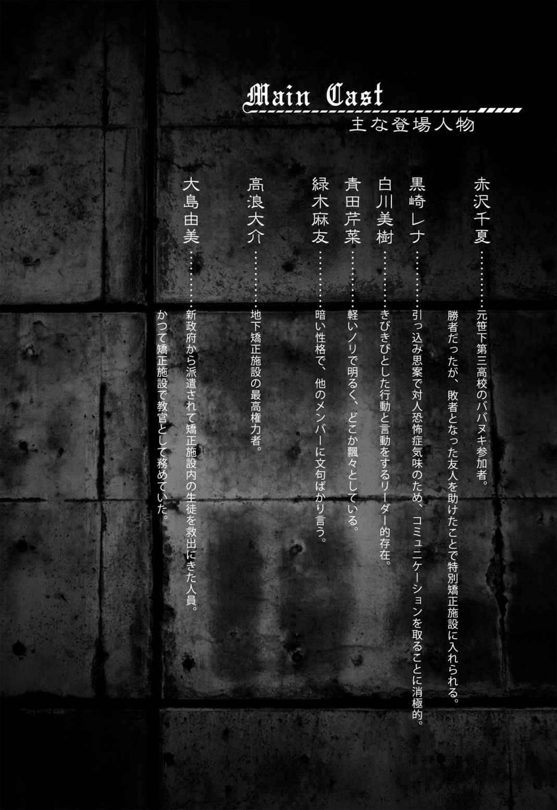
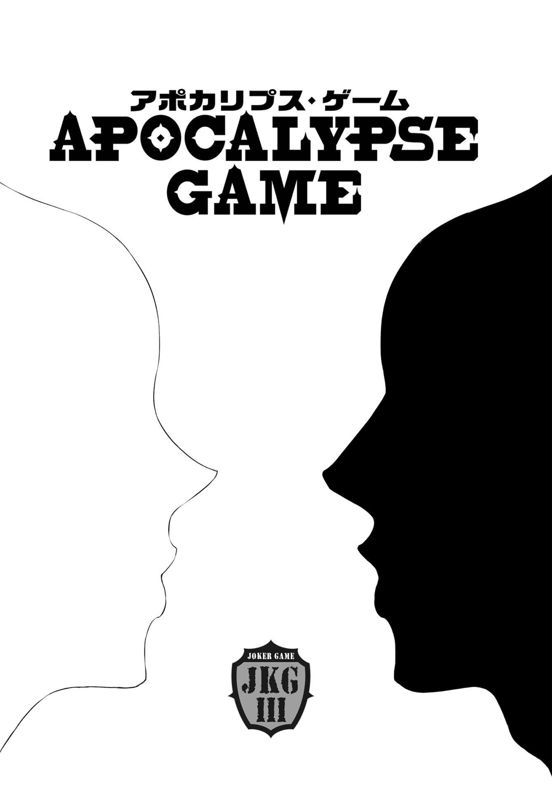
15 歳以下の子どもたちの平均学力において、遂に日本は世界ベスト30 から陥落した。
アジア各国の若年層の世界進出と欧米適応力に対し、完全に水を開けられた格好になった日本。
ヒステリックな世論に推し進められる形で、急遽捻り出された法令には「義務教育期間の３年延長」と「義務教育期間における生徒の選別」が記されていた。
義務教育期間を長くすることで子どもたちにより多くの教育を施すとともに、学力及び社会適応能力、コミュニケーション能力において優秀な者と劣る者を完全に選別し、優秀な子どもに対してより高度な教育を受けさせるというのが狙いだった。
そして決定したのが「校友カード」だった。
文字通り「学校」で「交友」を深めるという主旨のゲーム。
それは、簡単に言えば「ババヌキ 」だった。
そして、「校友カード」は各校で実施され、生徒は〝選別〟されていった。
そこで生き残った者は「上」で活かされ、負けた者は「下」の世界へと行かされた......。
どこまでも広がる希望の草原を、いつまでも覚えていようと思った。
夕闇に全てが溶けていくころ──、誓い合った言葉は永遠になった。
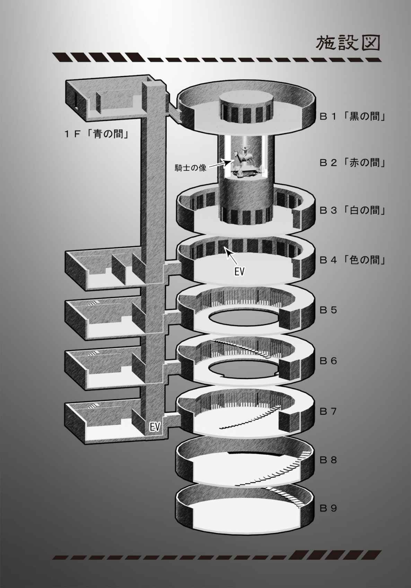
『カ......』
彼女は、微 かに何かをずっと呟 いていた。
私は、モニターの音量を最大にして、やっと彼女の呟く言葉を聞いた。
『カ、ナ......』
私がとてもよく知る名前だった。
モニターの中の彼女は、両腕を頭の上で縛 られ、何時間も吊 られたままでいる。
それでも彼女は「その名前」を呟くのか......。
『カナ......ゴメン』
政府は拷問と呼ぶのに相応 しい、激しい「質問」を加えた。
暴力によって彼女は事情を聞かれ、答えなければ殴 られ、答えても殴られる。綺 麗 だったであろう顔を赤と紫に腫 らし、合宿のときから身に着けていた制服もすでに服としての意味を成していない。
「香奈」
私と、そして彼女の大切な人。
彼女・赤 沢 千 夏 は、うわ言のようにその名を呼び続けた。
助けることのできなかった友だちの名を。
一緒に捕まってしまった友だちの名を。
また何人もの男たちが、千夏の縛られている部屋に入ってくる。
監視カメラを気にする様子もなく、まっすぐに千夏へと向かっていった。そしてエサに群がる害虫のように、千夏の体を弄 り、嬲 り、足を持ち上げて穢 した。
私は、デスクに積まれたファイルで赤沢千夏がこれから処刑されることを知る。
今の彼女の現状を記憶に留めようと、吐き気を覚えながら見つめた。
最後の男が部屋を去り、そのとき彼女はカメラをジッと見つめていた。
千夏の目がボサボサに乱れた前髪の隙間から、カメラのレンズを睨 んでいた。体がどれだけ穢されようと、目にはまだ光が宿っている。今もなお戦おうとしていた。
彼女の大きな目に、私は決心する。
助ける──私だけが、助けられる。
教育学部・現代教育制度研究室。
日本の最高学府であるこの大学では、政府から一つの任務が課されていた。現代の教育プログラムが健全に行われているか、それを監視・協力すること。これまで「ババヌキ」での敗者や、違反者が拷問や処刑される姿を数々見てきたが、光の宿った目を私は初めて見た。
赤沢千夏の心、その折れない心だけは必要だと思わされてしまう。
私は彼女を助ける決心と、もう一つの大切な決心を固めた。
もう一度資料ファイルを読み直し、部屋にあった固定電話から文部科学省へのレッドラインをかけた。
赤沢千夏の助命を、政府に願い出るために。
◇ ◇ ◇
「おい」
ワタシの目の前で──それは起こった。
赤沢千夏が野太い男の声に返事をするよりも早く、彼女の体は宙を舞っていた。男の無骨な拳 は千夏の反応も待たないで、彼女の頰を殴り飛ばしたのだ。
ただ仕事の道具を床に落としたからというだけの理由で。
「道具を大事にしないのは、負わされた仕事を大切に思ってないことと同じ。仕事を大事にしない者は、ここでは生きる価値もない」
少女を殴った男は、大声で全員に向かって怒鳴った。
この地下矯正施設の最高権力者である、高 浪 大 介 。
二メートル近い巨体と電柱のように太い腕が彼の武器であった。
その尋 常 ならざる怪力に太刀打ちできる人間は、ここにはいない。
暴力でゲームの敗者たちを支配し、部下にも恐れられる男だ。
この地獄で生きるには、高浪に従って生きるしかない。
ワタシたちがいるのは、巨大な地下施設。
特別に作られた矯正施設であり、地下五階から九階の、作業場と牢 獄 がワタシたちの暮らす全てであった。
脱走は不可能。生活環境は劣 悪 。
まさに「最悪」の特別矯正施設だった。
「ちな......」
千夏ちゃん──ワタシはその名前を口にするのをこらえた。
ここで声を上げれば、ワタシも殴られる。友だちを心配して近づいた者への指導は異常だった。ある生徒は、助けようとして近づいたというだけで数時間にわたって殴られ、そのまま死んでいった。またある生徒は、「教育的指導」という名目で教官室に連れ込まれ、次の日には心を閉ざしてしまった。
それを知った敗者の目に、友だちの姿は映らなくなった。
自分の身を守ることに一生懸命だったから。
「何を見てる、黒 崎 レナ」
「い、いいえ。何も」
恐ろしい目に睨まれ、ワタシは顔を伏せた。
友だちに頼ることができないという気持ちが、この施設にいるみんなの心を酷く歪 ませてしまった。仲間も敵、教官も敵というこの状況は、高浪たちが故意に作り出した地獄の魔物なのだろう。
悪いのは、ワタシなんだ。
道具を落としたのはワタシだった。
でも、千夏は持っていた道具をすぐにワタシの作業台へと置いた。自分が罰を受けるということを分かっていながら、ワタシを庇 ってくれたのだ。
彼女だけは。彼女だけがここで違う目を持っている。
何度殴られたとしても。
何度嬲られることがあったとしても。
それでも目にはまだ光がある。彼女が諦めない限り、ワタシも諦めない。
それは同じ班の三人にも言えたと思う。
「また貴様か、千夏」
倒れた彼女の腹を、教官の高浪が蹴る。
「おい、返事しろよ」
また蹴りが飛ぶ。
痛みに声を上げることもできない状態なのに、それでも。
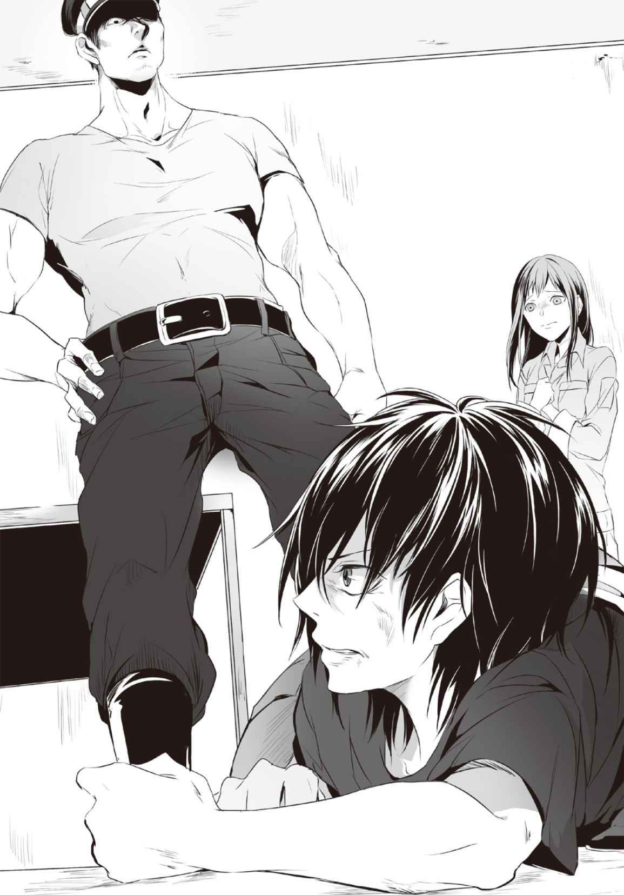
「おい」蹴る。
「おい」蹴る。蹴る。
蹴る......。
彼女はすでに白目を剝 き、口からは血の混じった泡が零 れ落ちる。
ワタシは彼女の名前を呼ぶまい、呼ぶまいと必死に唇を嚙 んでいた。口の中は血の味でいっぱいだった。
叫びたい気持ちが頰を濡 らす。
「ちっ、気絶かよ」
教官は千夏の首を摑 んで持ち上げ、作業を止めた。
「こうなりたくなければ、必死に作業しろ。いいな」
「はい」
大声で返事がされる。
こんなときでも声を出さずにいれば標的にされるから。
「こいつと同じ班の者。こいつを連れて牢へと帰れ。今すぐにだ。もう使い物にならないからな。班員前へ。白 川 美 樹 、青 田 芹 菜 、緑 木 麻 友 、黒崎レナ」
「はい」
みんな揃 って返事をし、一歩前に進み出る。
作業場に残ったみんなは、高浪の一声で作業へと戻された。
再び、黒い鉄の塊を組み立て始める。
ワタシが泣いて動けないでいる間に、美樹は放り捨てられた千夏を抱きかかえた。
「黒崎さんも手伝って」
「はい......」
と、ワタシは千夏に駆 け寄る。
「左肩の方を持って」
「え、ええ......」
美樹はテキパキと指示をして、千夏を介抱し体を起こした。
「青田さんも」
「りょーかい」
意識のない体は、持ちにくく重い。
歩くこともできない今の彼女は、ワタシたちが抱きかかえて牢まで運ぶしかない。
ワタシと青田芹菜、白川美樹が、千夏の体に腕を回して歩いた。後ろを緑木麻友がゆっくりと続いて歩き出す。牢屋に向かって。
鉄格子と冷たい石畳の牢が、この矯正施設でのワタシたちの生活スペース。眠るときの布団さえワタシたちには与えられていない。今着ている薄汚れたツナギも、自分たちが管理される側であると意識させるために着せられている。
まるで囚人になったように思わされる。
いや、すでに人としての権利もないのかも。
せめて人間らしくと、歩調を乱すことなく牢まで歩いた。
ワタシたちには、監視として一人の若い男の指導教官が付き添っていた。
自衛隊もどきのオリーブ色をした作業服を身にまとっている。その手には無骨な黒いサブマシンガンが握られていた。この特別矯正施設において、ワタシたちの手で制作された物だった。
さっきまでワタシたちが作らされていたのも、拳 銃 だ。
人を殺すための道具を私たちが作っている。命令のままに、作るしかない。そのほかにも他の施設での「ゲーム」のために、猛毒入りのアイテムや人を殺すトラップをここで作らされていた。
ここは──そして外の世界も、何かがおかしくなってしまったのかもしれない。
この矯正施設には、「ババヌキ」の敗者が送られる矯正施設で教官側に協力した人間というのが多い。教官側に協力して失敗した者が罰として捨てられることもあれば、多くの人間を死に至らしめたことの口封じに送られることもあった。
汚らしい人間、そんなこともできない人間は不要品と同じということだ。
ワタシも協力者として教官たちに選ばれながら、非情にはなれなかった。そのために使えないコマだと捨てられ、ここには三ヵ月もいる。
それでもまだ短い方であって、長いと半年以上。千夏はもう一年もいるらしい。
しかし、半年を超える者は逆に少ない。長くいればいるほど心を病み、暴力の傷が元で死ぬこともある。長い月日を生き残っても、心を強く持てなければ、ここでは生きることができないと諦めたように死んでいく。
所詮は、人を殺したゴミのような人間だと決めつけられて、飼われる存在だった。
地下矯正施設は、地下九階と地上一階からなる。
居住スペースを含むメインの棟は、円形をしている。
地下四階から七階の円の外周には二十もの牢が並び、中心は七階まで吹き抜けになっている。地下五階が女性の生活スペース。六階が男性のスペースになっている。七階も牢獄だったが、死亡者が多くなり、地下八階と九階同様に銃を作る作業スペースへと変えられた。
シャワーはちょろちょろとした水しか出ない。トイレは牢の中にしかないと最悪な状況。
五階ですらそれだが、六階は時折断水するなどさらに悪い状況だという。
それも大部分は教官の都合だった。
ここの教官には、暴力装置としての男性が多い。男子の居住地区には配慮はされにくい。
家畜よりも酷い生活を強いられ、満たされない心をどうにか落ち着かせて生きていくしかない。鉄格子の牢の中、心だけは殺されないように戦いながら。
この地獄を耐えるしかない。
ずっと──。
牢に戻っても、千夏は気を失ったまま横たわっていた。
ワタシはそのそばを離れずに、脱力したままの手を握っていた。
白川美樹が唐突に口を開いた。
ここに入ってきたときは、長い髪と鼻筋の通った顔立ちがどこかのお嬢様のようだったらしい。でも、その髪も一日で丸刈りにされた。今は髪が伸びているが、工場で拾った刃物のような金属片で、ベリーショートを自らキープしている。
見た目も綺麗だから、教官たちにはよくイジメの対象にされがちだった。
だからこそ、髪を短くして少しでも被害を減らそうと努めている。
「彼女もよくやるよね」
彼女の目は真剣に千夏に向けられていた。
美樹は、よく他の人を下に見ていることがある。しかし、彼女の目もまだ光を残している。美樹もまた千夏に一目置いているのだろう。
それはいつも自分を嫌う青田芹菜も。
いつも全てを嫌う緑木麻友だってそうだ。
「だよね、だよね。いっつもバーンって飛んでるのチナツくらいじゃない」
芹菜は変に明るくノリよく相 槌 を打って笑う子だ。
肩まである髪をボサボサのまま放置していて、かと思えば綺麗好きで。髪はちょっとの風でふわふわと揺れるほどに繊細で美しい。ちゃんと整えれば、どれだけ綺麗だろうか。
しかし、言葉使いはかなり個性的だ。どこにも心がなく、決して本当の芹菜というものを見せることがない。芹菜の本心は誰も見たことも、聞いたこともないと思う。
「うるさい、セリナ」
麻友はといえば、部屋の隅から文句を漏らす。
今も部屋の隅で体育座りをして、目元まで垂らした長い前髪の隙間から芹菜を睨んでいる。全体的に伸びた髪が彼女の陰気さを助長している気もする。
彼女は自分に次いでここでの生活が短いと、千夏が教えてくれた。
ここでの生活全般に文句ばかり言っているが、ここに送られた当初はずっと泣いていたらしい。千夏は「強くなったんだよ」と笑顔で褒めていたのを、ワタシは知っている。
芹菜と麻友は、正反対な感じで仲もあまりよくない。
どっちも悪い人ではないけど、高校のクラスにいたらワタシは馴染めないと思う。そして、その言葉は全て自分に戻ってくる。ワタシたちはみんな同様に、ババヌキで負けた人間たちであって、クラスでの敗者だった。
『黒崎って、暗いよね』
『なんか一人で、ぼそぼそ喋 ってるし』
『見た目は、小っちゃくて可愛いのにね』
『なんていうの？ 髪が伸びる呪いの人形みたいな？』
ワタシを笑う声。
聞えてしまう陰口。
そんな言葉を、何度吐かれたことだろう。
どれだけ辛い思いをしただろう。
ずっと一人で耐えてきた。
ワタシも長い髪を、ずっと前におろしたままだった。
何も見ないための壁、何も聞こえない壁を作って生きてきた。
たぶん、ここの誰もが。
「でも」ぼそりと麻友は口を開く。
「なんとかしないと千夏が死んじゃうよ。いつか、きっと」
「マユユ、何か作戦でもあるの？」と芹菜。
彼女は相手の反応も気にせず誰でもあだ名で呼ぶ。
アイドルみたいなあだ名に、麻友が前から幾度となく文句を言っていたものだ。
「あるわけないでしょ。それにその呼び方はやめて」
「ゴメンゴメン。でも、マユユが考え付かないなら、アタシなんかもっと分かんないよ」
何も反省してないみたいに芹菜がまたあだ名で明るく呼びかける。
それっきり麻友は、芹菜を無視した。
「まあ、でも。一つだけ方法はあるわよ」
と、美樹が会話に加わった。
「さっすが、白川ちゃんだね」と芹菜。
「褒めても意味ないわよ。だって、この方法はとても大変だから」
「それって何？」
麻友は光の消えそうな目で、じっと白川を見つめた。
でも、当の本人は目を逸らした。
そうだ。答えは説明する必要のないほどにシンプルなんだ。
「ここから出ればいいの」
ワタシは口を開いた。
誰もが口を閉ざした。
知っている──その言葉の先は絶望だってことを。
解っている──その言葉の先は「無理」だから。
「レナ。そんなキセキ、あるわけないよ」
麻友は顔を伏せ、芹菜の口元の笑みは徐々に消えた。
美樹とワタシができるだけ気 丈 に振る舞ったところで、答えは変わらない。
変わるわけがない。
「キセキは、起きるよ」
誰かが口を開いた。
それは倒れていた千夏で。彼女は何とか体を起こしながら口を開いた。
「キセキは起きる。私が助かったように」
◇ ◇ ◇
これは千夏が語った昔話。とある友人を救った過去だ。
「ババヌキで私は一人の友人に勝った。でも、その子はいなくなった姉のために負けるんだって言ってた。それでも、あの麻酔銃を見て怖くないはずがないじゃない。最後に彼女が連れて行かれたとき、私は何も考えずに走り出していたの」
──勝てるわけないのに。
「だから、敵の麻酔銃を奪った。それで助けに行った」
──千夏は、その子にとっては白馬の騎士だね。
「でも、そんな逃亡劇なんて上手くいかないんだね。二人とも捕まって、何回も何時間も殴られた。......みんな以上に酷いことをされた。ボロボロの体のまま、明日処刑するって脅された。本気で恐くなった」
──でも、ここにいるじゃない。
「直前になって急に処刑が取り止めになった。そして、私と香奈──その友人は別々の施設へと送られていった。私はこの施設に来たけれど、そのあと香奈がどうなったのか、私には分からないままなんだ」
──でも、信じてるの？
──まだ、その子を心配してるんだね。
「うん。私はね、あの日のことを忘れないって決めたの。あの希望だらけだった夕方のことを、ずっと覚えているんだって」
その話に、キセキはない。
この世に、神さまはいないのだろう。
でも、ほんとうの地獄の底で、ずっと遠くの空にいつまでも祈り続ける者を、世界は見捨てたりしない。
翌日の明け方のことだ。
轟 音 ともいえるサイレンの音で目を覚ます、はずだった。
頭を引き裂かれそうなサイレンの音で起こされ、そのまま仕事に叩き出されるのがいつもの普通の日課になっている。
しかし、今日はそれが鳴らずにバタバタと牢の外を走る教官たちの足音で目を覚ました。
「おい、本当か」
オリーブ色の作業服が走って行く。
走っている途中で、教官たちは何かを口走っている。
「そうらしい」
施設の中が慌ただしく動き、この施設の外も中も大変な状況だと喋っている。緊急事態には館内の放送で、ワタシたちに指示が出される決まりになっているはずだ。でも、ワタシたちには何の情報ももたらしてはくれない。
何も指示が出されないまま慌ただしさは二十分ほど続いたが、急に廊下が静まって牢の外には誰もいなくなった。
噓 のような静寂が訪れた。
経験したことのない静けさに、誰かの不安な息遣いさえ聞こえてきそうだ。
そして銃声。
マシンガンのような連続した銃声が、数度繰り返される。
聞いたこともないような破壊の調べののち、再び監獄の中は静寂に包まれた。
少ししてまた誰かの走る足音が聞こえてきた。その音は、片足を引き摺 っているような変なリズムだった。
急にワタシたちの牢屋の鉄格子が摑まれる。
廊下の右側から指導教官が左足を引き摺って、牢屋の前に姿を現した。
でも、その姿は異常だった。オリーブ色の作業服は赤黒く血に染まり、彼の左足には、太股を貫通する大きな銃創があった。
荒い息が必死さを物語っている。
「鬼がくる」
血が出過ぎたせいか、傷付いた教官の目にも声にも正常な意識は感じられない。
だが、何が起きているのか分からないワタシたちには恐怖しかなかった。
牢屋の隅に全員で固まって縮こまり、やり過ごそうとしていた。
次の瞬間、銃声が轟 く。
ビクッと体を震わせ、目を閉じた。
すると反対に、周囲の音がだんだんとはっきり聞こえてくる。柔らかい物が倒れる音。靴音が響く。女の声が聞こえた。
「まったく。その足で、よく逃げたものだ」
それからまた二発の銃声。
もう安心だよ、と女が優しくワタシたちに囁 く。
ワタシたちは、その声に恐々目を開いた。
白い服を着た女の人が、優しい笑顔でこっちを向いていた。
「私は、新しい政府から来た大 島 由 美 です。君たちを助けに来た」
教官は頭と胴に新しい銃創を作って、床に血をまき散らしながら死んでいた。
彼女はそんな死体のそばに立ち、笑顔を壊さずに右腰のホルダーに銃をしまう所だった。彼女は帯刀もしていて、さながら軍人のような出で立ちだった。
「まあ、今から放送が流れるだろう」
と言って、大島と名乗る人は姿を消した。
すぐに放送前のノイズが鳴り響いた。
『緊急放送』
キン、とハウリング。
聞いたことのない女性の声だった。
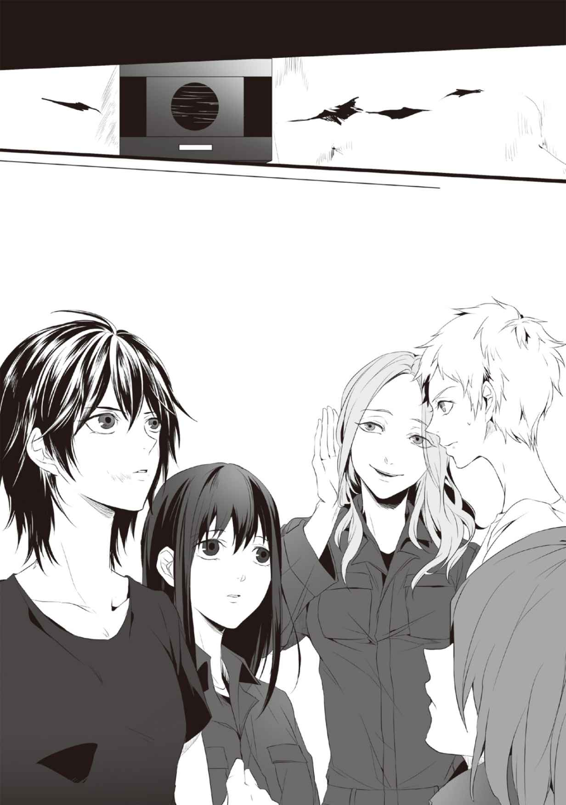
彼女は、耳が取れそうなほどの爆音で放送する。
『地上は我々の力によって新しい政府に変わった。そこで、この矯正施設というものを全て廃止し、新しい基準によって日本という国を作り変えることを決めた』
国を作り変える、ことを決めた？
何を言っているんだろう、この人は......。
たぶんここにいる全ての人が思っていた。
『ここに閉じ込められた者たち全員は、白い制服を着た私の部下たちの指示に従ってほしい。そして、上のフロアで次の指示を聞いてほしい』
大島と名乗った女の人は、他の白服たちに大声で指示をしながら、廊下を左のほうへと歩いて行った。
新しい政府は、ここを終わらせてくれるんだ。
だんだんと胸に何かが込み上げる。
「私たちは、君たちを助けに来た。今、他の者が来ると思う。その人の指示に従って、上のフロアへ集まってほしい」
いくつもの牢から歓喜の声が響き、千夏の顔にも笑みが見えた。
ワタシは、真っ先に千夏の胸に飛び込む。
「うっ......！」
彼女の言うことが実現したんだ。
キセキは起きるんだ。
喜びあまって、かなり強く抱き着いてしまったみたい。
「痛いよ、レナ」
「ゴメン......。でも、キセキが起きたんだよ。言ってたとおりに」
「そうだね」と彼女の手も微かに震えていた。
ワタシは千夏の顔を見て、なんだか泣きたくなって、涙を零した。
「嬉 しいよね、レナ」
千夏の腕がぎゅう、とワタシの体を包む。
ワタシの手もおずおずと彼女の背を優しく摩 った。
「はいはい」と、美樹は手を叩く。
「さ、早く離れて、上に行くわよ」
見れば、牢の外にはすでに白い制服の男がいる。
真っ白な詰襟姿の男は、腰に帯刀し、古めかしい軍人のような装いをしていた。制服の胸には紋章が付けられ、それには真っ赤な天使が二人描かれている。
彼はワタシたちを急かすつもりはないようだが、顔つきは険しかった。
急いで牢の外に出ると、白い詰襟の人たちの指示に従って上のフロアへと上がった。
これからどんな地獄が待つとも知らずに。
ワタシたちの胸にあったのは、ただの薄っぺらな希望だけだった。

女は、マイクのスイッチを切った。
彼女の前には三台のモノクロのモニターが並んでいる。
画面の前に備え付けられたリモコンで、自由自在に監視カメラを切り替えることができた。三台のモニターに映る画面を次々に切り替えて、白服たちが働いている様子や牢から出てくる少年少女たちをじっと見つめていた。
ふうとため息をつく。
彼女は自分の作戦が半分ほど終わったことに、やっと安 堵 することができる余裕が持てた所だった。誰もいない地上一階のモニタールームで、一人だからこそゆっくりと一息つけた。
青く光るモニターの光で、真っ白な顔が照らされている。
凛 々 しく鋭い眼光がまっすぐにモニターの多くの顔に注がれて、その一人一人の顔つきをよく見ていた。そして、彼女にはどの男も女も、助けるに足り得るような人間ではないようにしか見えない。
同じような顔をしている動物の群れのように、彼女には見えていた。
白い詰襟のポケットから、とても小さな銀色のプレートを取り出した。
薄汚れて黒ずんでしまったドッグタグのようだが、チェーンを通す穴も千切れて欠けたようになり、周りを保護していたゴムもなくなってしまっていた。
ただの薄い金属片にしか見えない。でも、彼女にとっては大切な宝物だった。
ある人が大切にしていた物だが、元はこの女の持ち物であった。
テーブルの上のシガレットケースに手を伸ばした。シルバーの薄いその中から細い煙草を取り出すと、赤い唇に軽く咥 えた。
ライターが小さく火を燃やす。
煙草を吸って、それを指で挟んで持ち続けた。
ゆっくりと立ち上る紫煙は、まるで何かを供養するようだ。
立ち上る煙の向こうに、やっと目当ての『女』を見つけた。
「さて、これからどうするの？」
おもむろに彼女はリモコンを操作して、一人にズームアップした。
白服が牢の扉を開け、その『女』が一番に牢を出てくる。
惚れ抜いた目は、まだ輝いている。光の消えない目が、そこにあった。
手に持っていた銀の板をギュッと握りしめながら、管理室の革張りの椅子に背を持たれかけた。鋭く、かつうっとりとその『女』の顔を見つめていた。
「赤沢......千夏」
彼女は班員と一緒に牢を出て、その隣には背の低い女の子がまるで妹のように連れ添っていた。
優しく面倒を見ているようで、その子もまた千夏を信頼しているようだった。
女は、手に持った金属片を、再びポケットへ大切に戻した。
そして、その手でモニターを撫 でる。
「はやく上がってきなさい」
とても優しく。
小さな、愛しいものを撫でるように。
真っ赤な唇が吊 り上り、不敵な笑みを浮かべた。
「アナタに、私の天使 の御加護が訪れますように」
女は、そっと自分の胸に描かれた二人の天使を指でなぞった。
ここに収容されている人間が、越えることのできない境界線がある。
それは「教官以外立ち入り禁止」と書かれた札のみが仕切る、何もないただの線だ。だが、逃げるために越えた人間はもちろん、悪ふざけで踏み越えた人間すら、二度と線のこちら側に戻ることはなかった。
線が隔てていたのは、教官のスペースとババヌキの敗北者の牢獄だった。
境界線の先には暗い廊下が続き、奥は何も見えない。未知の世界があると知りながら、誰もが一度は尻込みしてしまう。
「ここから進んで上に行く」
白服の指示は淡々としていた。
たぶん彼らは、教官側のエリアを襲撃しながらやって来た。牢獄側には上に昇るための階段もエレベーターもないのを熟知したうえで。
でも、この線を越えることがワタシたちにとって何を意味するかを知らない。
白服が線を越えていくなか、生徒は誰も越えようとしない。白服たちが助けに来たという安心よりも、体に刻み込まれた恐怖が体を勝手に支配する。
動けない。
何もすることができない。
──誰かが線を越えた。
「行こう」
千夏だった。
彼女の顔はとても明るい。
その声に、男も女も次々に線を越えて行く。多くの者は叫び声を上げて、みんなの体は喜びに震えていた。どんどん線を踏み越えて、先へと進んで行く。
ワタシも、線を──越える。
自由へ。進んで行く。言葉にならない、ただ震えが体中を走り抜けた。
ワタシの手を千夏が摑 んで、先へと走った。なんだか涙が出てきた。涙で見えない前には、振り向かずに歩いて行く千夏。でも、その顔はどこかいつもより悲しそうに見えた。
全員がその線を踏み越え、教官側のスペースを歩いた。
まっすぐな廊下が続いたかと思えば、突き当りにぶつかった。すぐ左にはエレベーターがあり、道は右に続く。もっと廊下が長いのかとも思ったが、どうやら暗さに目が錯覚を起こしていたらしい。
右に曲がると奥には階段があり、廊下の壁と思っていたのは教官用の部屋のようだ。
そこのドアは開いてはいなかったが、ドアの下の隙間から赤黒い血が流れていた。
階段で上へと上る。
地下四階のフロアに、全員が集まった。
特別矯正施設に入れられるときにだけ通過した、広い集会場だった。
ここで多くの人間が地下世界の説明を受けたはずだ。そして説明のあとに待つのは、教官たちによる暴力。ここからもう始まっているのだと思い知る。すでに地獄の門を通った先だということに。
その場所は見ないうちに表情を変えていた。
名前のない集会場に、「色の間」と名前が付けられていたのもその一つだ。
収容されていた若い男女およそ百人が見慣れない景色と明るさに目をパチパチとさせながら、周りを、「色の間」を見回している。
集会場といっても、全員が話を聞ける空間というだけで、丸い、何もないフロアだったものだ。しかし、外周全てにエレベーターが備えられ、壁紙も何もかもが剝 がされて、コンクリートが露出している。
数えてみれば、エレベーターは二十機。
前は......といってもかなり前のことになるが、こんなものはなかったのに。
改装中の臭いがする。工事が途中で止められているように見えた。
エレベーターは銀色で、壁や床も天井もグレーのコンクリートだけ。何故「色の間」という名前に変わったのだろう、と考えてしまう。フロアの隅に壁紙が丸められたものが置いてあるが、見ると白と木目しかないようだ。
ワタシは、ここのどこが「色の間」なのか真剣に探す。
これでは集会場というよりも、ただの空きフロアと言えただろう。
「諸君、ここは入ったときと少し違うと思う。それは近々ここでゲームを行い、この施設の人間を『選別』するつもりだったからだ」
大島が、みんなに大声で呼びかける。
綺 麗 で凛 とした顔立ちに、真っ白な軍隊風の制服がよく似合う。
彼女の言葉で、みんなはザワザワと騒いだ。もう少しでまた殺人ゲームに参加させられてしまっていたという言葉は、みんなに少なからずショックを与えていた。今度は自分たちがターゲットのデスゲームに、だ。危ない所だったというため息と安堵の言葉が口々に発せられる。
「ショックだと思うが、今はこちらの話に集中してほしい」
悲しいことだったが、それはすでになくなって命は助かったのだ。
今はそれ以上に、目の前にいる人間に興味があった。
みんなの目は、彼らに集中して注がれている。
「私は、この矯正施設の制圧作戦を総理より任せられた大島由美だ。ここに収容されていた多くの若者たちに、危害を加えるつもりは一切ないことを誓う。私は他の施設で指導教官として働いていたが、常に心を痛めていた。こんなものはなくなればいいと。ゴホン。これは新政府の総理から、この施設へと向けられた厳命だ。心して聞け」
仲間の一人が彼女に一通の書状を渡した。
真っ白な紙を広げ、中の文字を読み進める。
再び一つ咳 払いをする。
「『特別矯正施設（番号ＪＫ‐三七四二）は、本日をもって廃止を命ず。さらに、高浪大介をはじめとする主要な《指導教官》十名に関しては、即時射殺を命じる』とここにある。先ほど九名の主要な階級にあった指導教官をはじめ、すぐに投降する意思がなかった者たちに関しては銃殺を行った。が──」
二人の男が両脇を抱え、一人の教官を大島の足元にひざまずかせる。
男は膝立ちで、大島の方を睨 んでいた。すでに顔は痣で紫色になっていた。
高浪大介だった。
ここにいるみんなを恐れさせたその巨 軀 が、今は非常に小さく見える。
「ゲホン」と咳をして、大島は声を上げる。
「この男は、刑罰としてではなく彼らの敗北を見せつけるために、ここにいる全員の前で処刑すべきだと考えた。ゴホン。この男は、私が直接撃ち殺す。ここで」
二つほど、軽く咳をして銃を引き抜いた。
「大島。キサマ、裏切りやがって」
「裏切った？ 馬鹿を言うな」
その言葉に、高浪は手を縛られながらも大島に襲いかかろうとする。
しかし彼女は軽々と避け、高浪の顔を蹴り飛ばす。
「く、大島ぁ、お前も俺らと同罪だ。なのに、なんでのうのうと生きてやがる。俺は知っているぞ、前にいた施設では『ゲーム』で何人もの人間を殺したのを。全て結果だって残っているはずだ」
高浪は鼻から血を流し、大島へ怒りを向ける。
しかし、そんな大島の顔は歪 んで崩れる。牢の前で見た優しい笑顔とは別人だ。
「私は利口なんですよ。腕力しか能のないお前とは、違うんです。有利な陣営のお偉いさんに頭を下げ、媚びへつらってそこそこの地位で生き続けるの。それが私の生き方です」
「死ね。誰にでも尻尾を振りやがって......」
「黙れ！」
優しげな大島の声が恐ろしいものへと変貌し、再び高浪の顔面をつま先で蹴った。
指で二人の部下を呼びつけ、後ろに倒れた高浪の体を起こさせる。再び彼をひざまずかせるために、手荒く尻を蹴り飛ばした。
高浪はすでに鼻から大量の血を流し、呼吸は荒い。
酷い男だというのは知っていても可哀想に思えてきた。
「さて、この男に恨みのある者は？ 誰でもいい、手を上げなさい」
大島は、全員の顔を見回した。
「誰でもいいのよ」
みんなは目を逸らしていたが、勝手に三人の男子が選ばれていた。
彼らには一人ひとり太い警棒が渡され、それで恨みを晴らすことを許された。
つまり、殴ってもいいということだ。
全員の手が震えだし、止めたいという気持ちも白い制服の人間たちの威圧感で口にできないようだった。三人の目は、必死に誰かに助けを求めるように泳いでいた。
「さあ」
大島は声を掛ける。
無理やり持たされた警棒が震えている。
恨んでいる相手だとしても、自分が警棒で打ち倒すことを誰も望んでいない。本気で打ちのめしたら、死ぬ。本当に殺しかねない。そんな恐怖が男子たちに付きまとう。
動かないのを見て、大島が一人に近づいた。
「さあ」
大島が耳元で、囁 く。
「さあ」
「さあ」
「さあ」
「さあ」
悪魔の囁きが男子の顔を青褪 めさせ、警棒は違う震えに変わる。
「さあ、殺しなさい」
「あああああああああああああああ」
一人の男子が、警棒を振り被って殴った。
彼は一発殴って、警棒を放り捨てて集団の中へと逃げて行った。
大島から逃げるように、人ごみの中に隠れてしまう。
「彼は、勇気のある人みたいですね。ほら、君らも。ほら、殺してもいいんですよ」
結局彼らは震える手で一発殴り、同じように逃げ帰ってきた。
額が切れてそこから血が溢 れ、大島のせいで骨が折れたのか鼻血も止まらない。高浪の顔面は真っ赤に染まった。
死にそうな声で、高浪は大島を睨んで呟 いた。
「殺されろ。薄汚い──」
大島は笑いながら、起き上がろうとしていた大男の額に風穴を開けた。
彼の言葉が汚らしい言葉を吐ききる前に。
後頭部から血と赤黒いものが、異臭とともに流れた。
ここにいた多くの顔が真っ青に変わり、後ずさりたい気持ちを必死にこらえていた。誰も声を上げることはできなかった。
「どうした」
大島は、笑いながら声を張り上げた。
どこか違和感のある声だった。時折痰 が絡むのか、咳き込みながら話す。
「地獄の主とも言うべき男が、今死んだんだぞ。喜ばなくていいのか」
まだみんな、声を出せずにいた。
「おい、どうした。喜べ。喜べ。喜べぇ！」
大島は拳 銃 を天井に向けて放つ。
その声でみんなは狂ったように声を上げたが、誰も心から喜んでいるようには見えなかった。
言われてやっている、そんな風にぎこちない。
大島は、その様子に満足したのかフラフラと後ろへ下がった。
ワタシはその様子がどうにも不自然に見え、ずっと大島由美という女性を気にしていた。
「なんだか、熱っぽいんだ」
という大島の声がした。
そして部下の肩を叩 いて、奥に下がって行った。
男は深く頷くと前に出て、話を始めようとしていた。精 悍 な顔をした人で、大島に頷く態度などもしっかりしているが、彼の目の奥が冷たく濁っているのが見えた。動作もきびきびとした青年なのに、それに違和感を覚えた。
男はミヅキと名乗って、大島の代わりに口を開く。
大島が指示を任せた所をみると、彼女の信頼は厚いようだ。
「では、ここから出よう。このエレベーターはゲームのための仕掛けでしかない。ここではなく職員用のエレベーターよりここを抜ける。さっき上ってきた教官用スペースに戻って、エレベーターに乗ってくれ。一機しかないから、数人ずつしか出られないが、きちんと付いてきてほしい」
「はい」
と大声で全員の返事が成される。
白い制服たちの指示で、ぞろぞろと歩き出す。
ここには百人ほどの人間がいるが、何度エレベーターは往復するんだろう。そんなことを考えながら、ふと大島から目を離してしまっていた。
ぞろぞろと教官用スペースに繫 がる細い廊下へと歩き出す列。先へと進んで行くみんなの後ろを追いかけようとする。しかし──
「大島さん」
先ほど前で話をしていたミヅキはまだ後ろに残り、大島の名を呼んでいた。
その声に、またワタシはそっちを向いた。大島の顔は真っ赤になっていて、目は赤くなり焦点が合っていない。首にはまっすぐに座る力さえもなく、だらしない格好をしている。
先ほどの威厳はどこにもなく、とても具合が悪いようだ。
「大島さん、行きますよ」
「待て......」
彼女は消えそうな声で、呟いた。
力のない、聞こえづらい声だった。その言葉を部下の男は聞かないで、大島の体を強く揺さぶった。
一度、大きく大島の体は跳 ねる。
次の瞬間──
「げあ」
──変な音と同時に、大量の血を口から吐き出した。
異常な量の血液と共に、ぼとぼとと肉片が混じる。あたかも胃が丸ごと吐き出されたように。血を吐き出し続けたまま、そのまま血だまりに倒れ込んだ。誰が見ても明らかなほどに、大島は死んでいた。
「あああああああああああああああああああああああああああああああああああ......」
部下の男は急に叫び声を上げると、力なく崩れ落ちた。
その様子を見た多くの人が、そこから離れようとする。エレベーターに進もうと人を押し分けて駆け出す。でも、一〇〇人余りの男女が詰まっているために、なかなか前には行くことができない。
「落ち着いて」
「もう少し、ゆっくりと」
白服たちは指示を出しながら、何人かが恐る恐る大島に近づいていった。
事態を何とか把握しようとしている。ワタシはそう思っていたのだが、白服たちの行動はどうにもおかしかった。
誰もが顔をしかめて、誰もが顔を手で覆った。
「これは......」
「たぶん、実験中の......」
「まずいんじゃないのか」
実験、という言葉が聞こえた。
しかし、白服たちは小さな声で話している。
聞こえたのはワタシくらいだろう。誰も何のことだか分かっていないと思う。
冷静だった大島たちの部下も次第に慌て始め、脱出をしようと声を揃 える。一度冷静になろうとする。そして、すぐに走り出した。
収容されていた人の波を押し分けて、前に前に。
それはもっと大きな混乱を起こし、ある者は転んで踏まれてしまい。ある者は壁に頭を打ちつけて気絶した。何が問題なのかが分からないまま、全員が意味不明な混乱の中にいた。
ただ大島の近くにいて、血を浴びた男は一歩も動かなかった。
彼はただ茫然として、天井の一点を見つめたまま座り込んでしまった。逃げることを諦めてしまったかのように。
廊下の途中で詰まったまま、列は進む気配を見せない。
様子を見に、千夏たちと一緒に前へと列を搔 き分けていく。
「ゴメン、ちょっと様子が見たくて」
千夏の声だと、列が進まず気の立った人も道を開けてくれた。
職員用のエレベーターホールの前で、白い制服たちも教官たちもただ立ち尽くす。
何度もエレベーターの上に行くボタンを押していたのだけど、少しも反応する様子を見せない。ボタンの奥の灯りも点かない。
どうやら電源が切れてしまっているらしい。
電源を入れるには、この階にある管理室でパスワードを入力する必要があります、と一人の教官が説明していた。しかし、白服たちは誰もが首を傾げるだけだ。
「エレベーターのパスワードってどれのことだ。聞いてないぞ」
「誰がそのパスを？ 知っている者は？」
白い制服たちは、残っている指導教官たちに尋ねる。
指導教官たちは一度全員の顔を見合わせるも、悲しい顔をしていた。
「高浪さんだけだった。知っているのは」
指導教官の一人が答える。
逆に、指導教官たちは尋ねる。
「あなたたちの中でパスを知っているのは？」
白い制服たちは悲しく答えた。
「大島さんとあの人──ミヅキさんだけは......詳しい説明を受けたらしいが。あれだけ血の近くにいたら......もう......」
指導教官たちは、首を傾げながらも危うさを感じ取ったらしい。
白服の中で、小柄な男が手を上げて聞いた。
「階段は？」
「上に続く階段なんてものはない。エレベーターしか使わないんだ。今日に限って不調になっているとは。普段、電源は入れっぱなしなのに」
ここから出ることはできない。
そんな絶望が漂 い始めると、天から女の声で放送が降り注いだ。
放送の彼女は別の場所にいて、こちらの声も聞こえているらしい。しかし、それはただ絶望を増しただけに過ぎなかった。
『館内放送。申し訳ありませんが、こちらでもパスワードを把握してませんので、電源の回復はできません。このエレベーターは使えないということです。それは裏を返せば、ゲームどおりのルートを通り抜けることができれば脱出可能、ということですが......』女の声は少し途切れる。『ここでいうゲームとは、他の施設でも行われている死の選別のことですから、全員が生きて出られる保証はありません。こちらから助けに入ることも』
「だが、大島さんが......」
『ええ、見ていました。彼女は例のウイルスに感染していたようですね。そして、彼女が血を吐いて倒れた所を見れば、アナタたちもあのように......』
ウイルスって、何？ ワタシはその言葉を理解できずに混乱していた。
その話を聞いていた美樹が声を上げた。
「どういうことですか？」
生死とウイルスという言葉に、ヒステリックに反応したのは美樹だけではない。
多くの女子や男子が悲鳴に似た叫び声を上げた。
ここにいる全員が、死の危険をいくつも乗り越えてきたのに、と。
『私たちは、クーデターによって新政府樹立を成し遂げました。武力による国家の転覆です。そして最終兵器を使う前に、旧政府は負けを認めました。その使うことのなかった最終兵器こそ、致死性のウイルスによる生物兵器でした』
放送の女は告げる。
声高く吠える。軍を鼓舞するような声で。
『正攻法では、政府転覆なんてものは起こりえない。もはや国会なんてものは、多数派閥を率いた者が上に立つゲーム。我々のような新参者が吐いた言葉は戯言も同然、無視されて終わり。ゆえに、早々と武力行使を決めました。武力による国家の転覆を持ち出し、政権の放棄を政府与党に求めました。
その最終作戦は、霞が関をウイルスによって崩壊させる。その後に新たな地へ首都を置き、新国家を作り出すことでした。ですが、その力を使うことなく戦いは終わり、国家は新たな形へと生まれ変わりました。めでたし、めでたし。そして、呪われた力は、永遠に封印されるはずだった』
だった。これは、誰もが予期せぬ事態だという。
つまりは、誰もがこのままでは対処ができない。
『原因は不明ですが、危険なウイルスの最初の感染者を出してしまった。このままでは、そこにいる全ての人間が死に至ってしまうでしょう』
「それじゃあ......」
『ウイルスは一時間で全身へとまわり、五分で細胞を破壊し死に至らしめます。口から吐き出された血から空中へと舞い上がり、空気感染もします。あと一時間です。あと一時間以内に一階にいる私の元に来て、特効薬を打たなければ死にます。私もすぐに感染防止のワクチンと特効薬を取り寄せます。つまり、ここに来れば、薬が手に入るんです。もう考えている暇はありません。大島のようにはなりたくないでしょう？』
さっきの彼女みたいに、死ぬ。
残酷な真実は、冷たい声で告げられた。
廊下まで伸びていた行列の、その先の方から駆け出して行った。元の「色の間」へとどっちにしろ死ぬかもしれない。でも、少しでも生き延びるにはそれしかないから。
ワタシや千夏、美樹も揃って「色の間」へ戻った。
急いで元の部屋へと戻る。
エレベーターホールには、血を吐いて死んだ大島由美と呆然としたままのミヅキがそのまま残されている。大島の近くにいて、最も感染が疑われるその男は、虚ろな目で天井を見てはいたが、何も見てはいないようだ。
「色の間」に全員が集結したものの、エレベーターに乗っていいものか。
そう思って、誰もがそこで止まっていた。
こちらが「色の間」に揃ったのを見ていたのか、タイミングよく放送が流れる。
『ここに、選別ゲームのルールブックが用意されていますね。各階のエレベーターを乗り継ぐと一階まで辿 り着けるようです。正しいルートの説明は書いてないようですが。各階にはゲームマスターというのがいて、ゲームを仕切るのはその者の仕事になっているようですね。こちらの放送は届かないようです』
ペラペラと頁をめくる音も聞こえてくる。
『最初のエレベーターの定員は、五～六名になっています。つまりは班ごとに入れということでしょう。この色の間には、エレベーターが二〇機あります。つまり、ここにいる若者たちの分だけは用意されている。そういうことになりますね──』
その言葉が終わらないかのうちに、千夏がワタシたち五人を抱き寄せる。
戸惑うワタシたちに、千夏はそっと耳打ちした。
「走るよ──何も考えず、とにかく、付いてきて」
すぐに千夏はワタシの手を引いて走り出し、班のみんながそれを追った。
ワタシたちが走り着いたのは、みんなのいる場所から一番遠いエレベーター。廊下が繫がっている位置から正反対の位置にあるエレベーターだった。
つまり、この広い集会場の直径分、全力でダッシュすることになる。
ワタシは千夏に引っ張られ、付いていくのに必死だった。
千夏の考えの意味がすぐには分からなかったが、エレベーターの中に辿り着くとそれが実感できた。「色の間」の全員が急いで一斉に走りだしたことで、乗る予定がそもそもなかった白服と教官たちは慌てた。
『──さあ、ここでエレベーターに乗れなきゃ死ぬわ。どうしましょう』
追い立てるように、放送で女が叫ぶ。
悪意を持った話し方だった。
このままでは自分が死ぬという考えを刺激する、悪意に満ちた言葉。
〝助けに来たのに、ミイラ取りがミイラになる〟──そんな死の恐怖に襲われただろう教官の一人が、腰の銃に手を伸ばしてしまう。
どこかで、銃声が響いた。
銃が抜かれれば、それに続いて銃を撃つ奴がいる。撃ったそいつを殺すために。
そして「色の間」は一瞬にして阿鼻叫喚の真っ赤な地獄と化した。
班員同士で上手くエレベーターに飛び込む者もいれば、一人だけ先に入って扉を閉めてしまう者もいる。
いずれ死ぬという恐怖で何も見えなくなっていた。
白服の人間や教官たちは、必死でエレベーターを確保しようと向かってくる。
足を撃ち抜かれて歩けない女の子が、エレベーターに飛び込もうとする。閉まろうとするドアに何とか手を掛けるが、後ろから白服が迫る。エレベーターを閉じたい中の子は、自分の元へ引っ張るのではなく、傷付いた子を蹴り飛ばす。
助けるよりも、自分の身を守るのに必死なのだ。
エレベーターに乗っても、閉じるボタンが間に合わずに邪魔をされる。
それをまた誰かが邪魔をして、誰もが死ぬ。
そんな地獄が繰り返される。
次第に灰色一色だった「色の間」は、深紅に染められていく。「色の間」の名前は、こんな理由なんだろうかとショックを受ける。一人の男がエレベーターを見つけ、駆けてくるのが見える。
「早く、エレベーターを閉めて」
千夏が叫び、麻友が「閉」と書かれたボタンを何度も叩くように押した。
銀色の簡素で狭いエレベーターだ。ドアの右に「閉じる」のボタンが一つあるだけで、他には何もない。よくある鏡も、手すりもない。他に特筆すべきものといえば、上から小さな監視カメラが覗 いているだけ。
ただ外から開かないのが救いだった。全力で走って乱れた呼吸の音だけが、エレベーターの中に充満する。ただ中は狭いので、このまま荒い息をしてたら空気が無くなりそうだ。でも、今はようやく一息着けるときだった。
「よかった」と千夏が口を開く。
「ここにまっすぐ走り込めば何とかなると思ったから。なんとか、全員乗れたね」
「千夏、アナタがいて助かった」
美樹もへとへとになりながら、千夏を称えて笑った。
ワタシは、まだもうちょっとだけ、何かを言える元気を取り戻すまでに時間が掛かりそうだった。千夏の手が、ワタシの頭の上に置かれていた。それで少しは笑える。
「でも、どうしようか千夏。勢いよくこれに乗ったはいいけど」と美樹。
「なら、これに賭けるしかないでしょ？ 生きてここを出るには、このゲームで地上に出るしかない。なら、それに参加して勝つしかない」
千夏は簡単そうに言って、みんなの顔を見回した。
「みんなでここを出るよ。仲間を信じて、勝とう」
その言葉に、全員黙って頷いた。
◇ ◇ ◇
みんなの呼吸も落ち着いた、けれどエレベーターには一向に何の反応もない。
ドアは閉められても、動いてくれないようだ。
「どうしたの、麻友ちゃん」とワタシは呼ぶ。
彼女がドアの横のボタンのある場所に、一番近かったからだ。
「動かないの」
麻友は短く答えたが、声は震えている。
普通なら行きたい階のボタンを押せばいいのだが、そこには閉じるためのボタンしかないために、上に行くことができない。エレベーターはずっと黙ったままだ。
でも、エレベーターが動かなければ、いずれ死んでしまう。
このエレベーターを動かす方法は、何なのだろう。
「あっ」と麻友はすぐに声を上げた。
彼女の腰の高さの所に、小さな鍵穴がある。鍵を差せばいいのだろうか。でも鍵はどこだ。そして、その下に小さな文字で短い文章が書かれていた。よく見なければ、気付かないだろう小さな文字だった。
それには、こうあった。
『きしではないいろをさせ』
すぐに美樹が声を上げる。
「鍵って、これかしら」
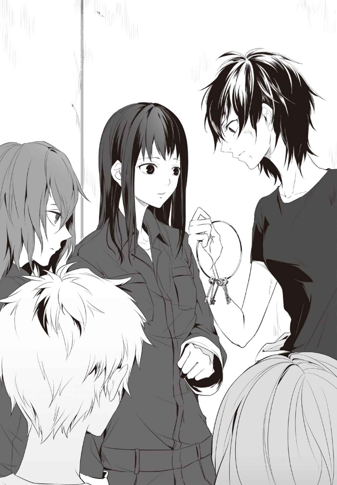
手に持っていた鍵の束を持ち上げてみせた。いろんな色に塗られた鍵が、大きな金属の輪で一つにまとめられている。
「それ、どこにあったの？」と千夏。
「このエレベーターの中、というか、私のお尻の下に......勢いよく駆け込んだから気付かないうちに下に敷いてたみたい」
鍵の束は千夏に渡された。
鍵の色は、こうだった。赤、白、青、緑、黒。
偶然にもワタシたちの苗字に入っている色と同じだった。
「これが『色の間』ってことかな。ねえ、どれだろう？」
と千夏が真剣に考え始めると、美樹も麻友も口を閉ざして思考をめぐらせ始めた。
ワタシは、問題を再びじっくりと見つめる。
きしではないいろをさせ。
......きし？
岸？ 騎士？ 棋士？ 他に思い浮かぶ言葉はない。
そのとき、芹菜が声を上げた。
「それって、青じゃないかな」
「どうしてよ？」
美樹は芹菜がすぐに答えたのを聞いて、驚いたように尋ねた。
「だって、アタシは将棋もできないし、ナイトでもないよ。だから、青だよ。アタシ、青田芹菜の『青』」
一様に疲れた空気が流れるが、ワタシはある考えを思い付いた。
「あのねえ──」
ワタシが思いついた考えを話そうかと迷っているうちに、いつも芹菜に文句を言っている麻友が冷たく反応した。
「──将棋ができる人でも棋士とは呼べないでしょう。やっぱりプロとかじゃないとね。ここにプロの棋士がいると思ってんの」
「あと、ナイトなんているわけがないでしょう。まったく」と美樹も冷静につっこむ。
「そっかぁ」
みんなは今の芹菜の発言で考えがどこかに飛んでしまったみたいで、また一から考え直している。今回に限っていうなら、誰でも芹菜に文句を言いたくなるのは仕方ない。
全員が必死なんだ。生き残るために。
なんで、こんなにこの子は呑気なんだろうか。
「でも、色なんて分かんないじゃん。あそこ見てよ」
芹菜が指したのは、エレベーターのドアの上、現在停止中の階を示すランプの位置だ。
そこには文字だけが並んでいる。
「色、疫病、戦争、飢餓、死っていう表示しかないのよ」
「どれかが、この中のどれかの色なのかな。鍵は五つで、上に四つのフロアがあるってことだから」
千夏が推理を働かせる。
「じゃあ、どれがどれよ」と美樹も不満を口にする。
それに答えることは千夏にもできなかったみたいだ。
美樹はどうにもできない憤りと焦りからか、エレベーターの壁を拳 で強くドンと叩いた。大きな音が響いて、エレベータが少し揺れた。
「やめてよ」と麻友が叫んだ。「もし、罠があったらどうするの？」
麻友のヒステリックな叫びに、美樹は逆に冷静になって手をゆっくりと引っ込めた。
しかし、芹菜と千夏の言葉がワタシを解答に近づけてくれた。
みんなが沈黙に沈む中で、一人で手を上げるのは恥ずかしかった。だから、そっと鍵の束を取り上げた。誰もが夢中に考えている途中だったせいか、ワタシが鍵を取ったことに誰も気付いていない。
すぐにコントロールパネルに向かって、鍵を差そうとする。
でも、鍵を探す音がエレベーターの中では響いて、全員がワタシの方を見た。
「どうしたのよ、レナ」
美樹は、ワタシの手の中の鍵を見ている。
千夏は、不安そうな顔から笑顔へと変わった。
「もしかして分かったの？」
「ありえないよ」と麻友。「いつも千夏に守ってもらわないと何も......」
その声を千夏が止め、ワタシに優しく言葉を掛ける。
「分かったんでしょ？」
その声に、ワタシは頷く。
「正しいんだよね」
もう一度、頷く。
しかし、麻友はまた再び声を上げる。
「だって──レナだよ。千夏、止めてよ。レナにはできっこな──」
「大丈夫だよ。レナだって、強くなってる」
千夏の言葉が、麻友の悲しい言葉を止めた。ワタシを千夏が信じてくれている。それだけで強くなれる。なれるような気がするから。
ワタシは、強く自分自身に頷いた。
力強く。
「じゃあ、レナがやって。私たちは、見てるから」
千夏の言葉に、美樹も麻友も何か言いたそうにそっちを睨んだ。
芹菜だけは何を考えているか分からない笑顔でワタシを見つめている。その顔に、なんだか信頼されているような気がした。
そして、心を決めた。
「私は、信じてるよ。レナのこと」
「うん」
千夏が見てくれるなら──ワタシは頑張れるから。
ただそのあとで麻友だけはエレベーターの後ろに行って、頭を抱えて後ろで蹲 ってしまった。何も見ず、何も考えないように。小さな声でもう嫌だと呟いて。
震える麻友を放置したまま、ワタシはコントロールパネルに向き直った。
自分のことで精いっぱいだけど、ここは間違ってはいけない。一度、目を擦 る。
色を間違ってはいけないんだ。
しっかり、見ないと。
この鍵を。
息を止める。
■色の鍵を差して、
回した──
──直後、頭の上で重い音が響いた。
すぐ体中に重さが圧 し掛かるのを感じていた。
動いたんだ。
エレベーターが上昇するときの重力に、ワタシの体が歓喜に震える。
あの鍵で合っていたんだ。
上昇の途中で一度エレベーターは何度かガタリと揺れたが、そのあとも問題なく動き続けた。ゆっくりと上へ、上へと。
「やった！」
芹菜の明るい声が響いた。
狭いエレベーターで芹菜も、千夏も、美樹も麻友も喜びを爆発させた。だが、ワタシの体は喜びで足に力が入らなくなる。そのまま床に座り込んだ。手も十分に力が入らないまま震えることしかできない。
その手を、千夏はそっと取り上げた。
「よかった。レナのおかげで助かったよ」
そしてすぐにエレベーターは止まり、ドアが開いた。
ドアの外に、真っ白に統一されたフロアが見える。
エレベーターに備え付けられたスピーカーから、静かに機械的な声が流れる。
『白の間──疫病の間でございます』
消えるような音で声が流されてくる。その声は、「色の間」で聞いていたうるさ過ぎる大音量の放送の声とは違って、感情がなく、不気味さが混じっている。
ドアが開いたことに、乗っていたみんなが安堵の表情を見せる。
ワタシは千夏に引っ張り上げられて立ち上がると、何よりも先に頭を下げた。
「ごめんなさい......」
勝手に鍵を差したから。
上手く説明できなかったから、怖い思いをさせてしまった。
そんな意味の「ごめんなさい」だった。
でも、頭を下げるワタシを抱きしめてくれたのは千夏だった。千夏の温かさと匂いが、ワタシの心を和らげてくれる。堪えていた涙が溢 れてくる。ワタシは千夏にしがみ付き泣くことしかできなかった。
「レナ、血が出てる」
顔を上げると、ワタシの指が千夏の作業着を汚していた。
そうしてやっと、自分が必死になって鍵を握っていたことを知った。鍵の縁で指を切ってしまったらしい。人差し指の第一関節の所が切れて、血が流れている。傷は思ったよりも深いのか、傷はズキズキと疼 いた。
千夏は何も言わずにワタシの指を咥 え、自分の作業着から小さなタオルを取り出して傷に当てがってくれた。その手は少しだけ震えていた。千夏も怖かったんだと、千夏もワタシと同じ年だというのを忘れてしまっていたことを反省する。
みんな、怖かっただろう。ワタシに命なんて賭けたくなかっただろう。
「ごめんなさい......」
ワタシはもう一度謝った。千夏にも、みんなにも。
「千夏を、みんなを怖がらせて。それにこんな、こんなことまで......」
タオルをギュッと握る。
血が、滲 んだ。
「違うよ。こっちが言わないと、ありがとうって」
千夏の手が、ワタシの頭をポンポンと叩 く。
彼女の手に、もう震えはなかった。
もう怖さを乗り越えてるんだ──千夏が遠い存在に思えた。すでにその先にあるだろう道をまっすぐに走っているのか。脇目を振らず走って行く彼女が見えた。とても痛かった。
まだグズグズと悩んでいるワタシ。
千夏のようになりたいと思うと同時に、千夏のようになれないと悟ってしまう。
ワタシには、そんな資格はない。口が勝手に言葉を吐く。
「そんなこと、ない......」自分が許せなくて、自然に漏れた。
目からは、また大粒の涙が落ちた。
「千夏を、みんなを怖がらせた」
「それでも、私たちはレナのおかげで助かったんだよ。だから、ありがとう、レナ」
「ありがとう」と千夏は言う。
美樹も。
「アンタが、あんなにやるなんてね。知らなかったわ」
芹菜も。
「フフン。アタシは信じてたけどねー。あんがとさん、レーニャン」
そう言って、エレベーターを降りて行った。
麻友だけは小さな動物みたいに震えながら、ワタシを睨 んだ。
何も言わず、恨みでワタシを殺そうとするような目だった。
みんなが降りるとき、エレベーターは一言小さく呟 く。恐ろしく冷たい機械の声で。
『困ったとき、フロアに犠牲を捧げよ。犠牲の下で、助かるヒントが与えられる』
全員が一斉に振り返った。でも、ドアはただゆっくりと閉まるだけだった。
一人が死ねば、みんなが助かるというルール。
残酷なルールは、みんなの笑顔を奪った。
フロアは円形で、広さは「色の間」と同じ。端まではかなりの距離があるはずだ。
だが、その端はここからでは見ることができない。
この場所が下の階と徹底的に違う点は、フロアの中心に柱があるということだ。
その柱は、フロアの半分以上を埋めるように太く、大きい。そしてエレベーターらしき扉が、今度は十三機ほど設置されていた。その一台一台は、先ほどのエレベーターよりも目に見えて小さい。乗れる人数は先ほどの半分以下だろう。
そう考えれば、次に行けるのは最大で二十六人。
地下にいたのは、教官を含めて一三〇人ほどだった。救助に来た白服を含めたら、一五〇人にはなる。そのおよそ六分の一しか助からないことを考えると、あまりに厳しい試練ではないかと思う。
それと同時に「色の間」での問題をどれだけの人間が正解できただろうか。
聖書に関する知識がなければ、解けない問題だった。
あれは正解者を出すというよりも、解けない不正解者をふるい落とすためのものと言った方が相応 しい難易度であり、テーマだったと思う。
あの「色の間」では、色を尋ねる問題だった。
そう考えれば、「疫病の間」では疫病の問題やトラップがあると考えるのが普通だ。
または、白に関する問題か。
このフロアは、白一色に統一されている。今降りてきたエレベーターのドアも、上に昇るためのエレベーターも。壁も柱も、そして床も。
全てが真っ白だ。
それもどこか水色がかった白で、どこか冷たい、寒いという印象を受けるような色使いがなされているようだった。
そう感じると、床の白い大理石が氷のように思えてしまうのが不思議だ。
ここは一面、氷の世界みたいだった。
全員がエレベーターを出て、その前の床に置かれた箱に気付いた。
小さな木箱だ。文庫本と同じくらいの大きさで、本よりももっと細長くて少しばかり厚い。薄汚れた白っぽい古い木材で作られている。持ち上げてみると、とても軽いし、何か入っているような音がする。
隣のドアにも、その隣のドアにも、全てのドアの前に箱が置かれている。
「中は？」
麻友が遠くから、持っていたワタシに「開けろ」と指示をする。
「ちょっと待って」と千夏。「罠かもしれないし」
「でも」と美樹が反論する「この部屋には、これ以外に何もないよ」
これが今度の問題と美樹は言いたいのだ。
問題であるならば、開けても大丈夫だと言いたいのは分かる。が──
この矯正施設でいくつものトラップを作らされてきたワタシたちには、どれが安全でどれが危険なのかを判断する知識はない。
どれも危険に見えるだけだった。
急に爆発する仕掛けだったり、強酸が飛び出す仕掛けだったりはしないか。
デスゲームで様々な人間を裏切ってきたワタシたちだからこそ、判断が難しい。怪しい虫の模型に気を引きつけておいて、答えだと思って近づいた絵が罠だったこともある。安心させる瞬間に、罠が置かれていたりするのだった。
しかし、この箱にはあからさまな怪しさがある。
この箱には、時間が取られそうだった。
「私が開ける」
と千夏がワタシから奪い取る。
ワタシが止めるよりも先に、彼女は箱を開いてしまった。
全員が千夏の大胆な行動に目をつむり、恐る恐る目を開いた。
「あれ？」
中を覗 き込めば、小指ほどしかない小さな小瓶が五本。
透明なアンプルらしき小瓶には、真っ白なラベルが張られている。
それには『us-I-od』という番号。その下には小さく「ワクチン」と書かれていた。これがヒントなの？ みんなが混乱するような怪しい瓶が、そこに残っただけだった。
次第に、一台、二台とエレベーターが上がってくる。人がフロアに増えてきた。
あれが解けた人が他にもいた。
分からなくても二〇パーセントで当たりを引けるのだけど、多くの人間が残ってくれた方が心強い。
何より、嬉しかった。少しでも助かる命があることが。
教官や白服たちの数はまだ見えない。まだ上がってくる人はいるかもしれないけれど。
他のエレベーターの人たちは、ワタシたちが箱を開けているのを見て、自分たちも箱を開ける。結局中身は一緒だった。同じもの、ラベルもまったく一緒の小瓶が五本入っているだけ。
ワタシたちは瓶を床に立て、それを囲うように座る。作戦会議だ。
ワタシは瓶の使用方法を考えながら、空になった箱も眺めようと手を伸ばした。
中には何も残っていない。箱をひっくり返しても何も出てこないが、そうしたことで底板に印字された問題に気付いた。「ねえ、見て」と班のみんなに声を掛ける。
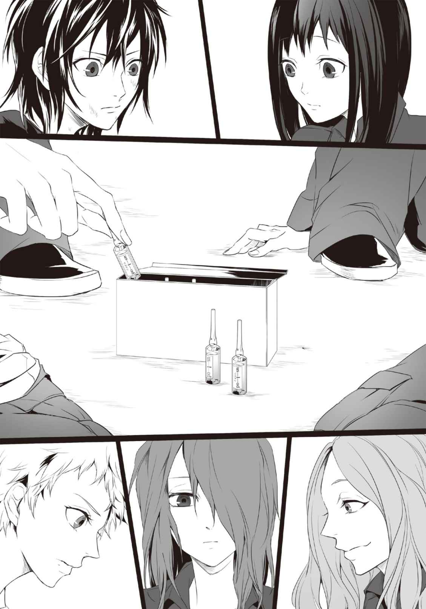
『これで次へ』
焼印でも押したように、焦げた文字が底に書かれていた。
前を見ればエレベーターはある。だが、エレベーターの横にボタンはない。
この小瓶をどうしろと言うのか。開くために何かをすればいいのだろうか。問題は分かっても、その意味が何なのかが分からない。
「この瓶さあ」
と芹菜が急に声を上げる。
「ただ、一人ずつ持って、エレベーターに行けばいいんじゃないの？」
「芹菜、それはないわ」
美樹は、呆れたように額に手を当てながら言う。
「そんなの問題でも、なんでもないじゃない？ もしかしたら、エレベーターにだって罠があるかもしれないよ。こんな怪しいんだから」
「だよねぇー。さっすが白川ちゃんアタマいいもんね」
芹菜のその言葉を無視して、美樹はまた考え込んだ。
「これを、どうするんだろうねぇ♪」
芹菜は、呑 気 に変なメロディーで歌い始めるが、誰もそれを相手にしようという気はないみたいだった。芹菜はただ天井を見つめて、しばらく歌っていた。
ワタシたちは答えが分からず、首を傾げていた。
段々と他のチームもエレベーターを上がってくる。
一気に六つのエレベーターが上がってきたあとは増えていない。
中には一人だけで上がってくるものもあれば、他のチームの人だったり、大島の部下の白服たちが混ざって乗ってきたりと様々あった。班員五人が揃 って上ってくるのは、とても稀 なようだった。
ワタシたち以外に八台のエレベーターが着き、二十五人がここにいる。
残っていた白服の男たちは、三人だけで他はたぶん......。
これは選別のための、デスゲーム。
どういう方法であれ、到着できない者はすでに何らかのトラップで殺されているだろう。
自分たちも人殺しの道具を作ってきたが、今回の道具は違う所のものだと思う。だとしても、自分たちが無理やり作らされた道具の類 いで死ぬのは、あまりにも惨めすぎる仕打ちだ。
人を殺す道具を作ってきた業まで背負えということなのか。
◇ ◇ ◇
他の班の底板にも、『これで次へ』 と記されていた。
どれも同じで、どの班の、誰もが下を向いて考え込んでいる。
上から突如として重い音が鳴り響き、エレベーターに近い天井から九台のモニターが降りてきた。それには当然ながら映像が映るわけだが、全てに同じ映像が映っている。
二つの顔がとても近い距離で向き合うシルエットだった。顔と顔の隙間が壺というか、日本で言う高 坏 のようにも見える、騙し絵「ルビンの壺」のようだった。
昔、ワタシが小学生のときに教科書か何かで見て、ちょっとした興味を覚え、調べたのを覚えている。
だが、その壺は赤く、二人の向き合う顔は黒と白に分かれている。
モニターの中の黒と白が話し出 す。
『私は、黒。このゲームを見守る番人である』
『私は、白。同じくゲームの正当性を守る証言者』
黒は男の声で、白は女の声で話す。
だが、二つの声はてんでバラバラな答えを言う。
番人ということは、この二人がゲームマスターか。前に見た、ジョーカーの仮面を被った者のようなゲームを進展させる役割とは違うようだ。
『この簡単な問題に、重要なヒントを差し出そう ──考えずに進むがよい』
『この不快な難問に、頭を悩まし逡巡し悩みなさい ──進むことを恐れなさい』
『白のヒントは信用に足らん。我を信じよ』
『黒のヒントは噓 でしかない。私を信じなさい』
両方が言い争えば争うほどに、わけが分からなくなるゲーム。
ゲームマスターと言いながら、これではただのトラップの一つだ。
単純といえば、複雑という。二人は正反対のことしか話さない。つまり、どちらかは合っているということだろうか。果たして、それがどっちなのかは分からない。
『では、また会える時を愉しみにしている』
『できることなら、会えない方が嬉しいが』
そう言うと一度画面は切れて、周りは再び静かになった。
「ねえ、そうだ。さっきのあの問題。どうして、アナタが答えられたの？」
そう言いながら、美樹がワタシに近寄ってきた。その高圧的な言い方に、言葉が急に出て来なくなる。
「えっと......。そ、その......」
「え、何？」
美樹がワタシにまた詰め寄る。ワタシの口が思ったように言葉を吐かないから。
これでも一生懸命説明しようとしている。
焦れば焦るほど、言葉は意味とカタチを失くしていく。
「『シュウマツ』のときに、ね。その、そのときに、あれだけ違うから」
「どういうこと？」
「『シュウマツ』の封印には、その、色があって」
「週末？ 金曜日とか土曜日とか、そういうこと？」
「違うの、世界の『終末』で」
ワタシが必死に説明しても、美樹の眉 間 のしわは深まるばかり。
美樹に届く前に崩れていく脆 い言葉たちしか、口から出てはくれない。
「ちょっと落ち着こう、美樹もレナも」
千夏がワタシと美樹の間に入る。
ワタシの背をトントンと優しく叩き、落ち着かせてくれた。
ゆっくりとワタシは息を吐き、また吸い込んで吐き出す。今度は明確にちゃんと言葉にしようと心掛けて。言葉を紡いでいく。
「えっと、ワタシはいろんなことを調べるのが好きだったんだ」
ワタシは、久しぶりに昔のことを思い出していた。
まだ小さかったころ。
まだ人が怖くなかったころ。
何よりも知らないということが楽しくて、悔しくて──何かを知ること、そして世界が広がっていくことが何よりも幸せだったころのことを思い出した。
そうして、いつまでも納得いくまで調べるクセが付いていた。
「昔から変なことや気になることがあるといつも調べてた。それでね、中学生のころに聖書を調べていたの。聖書には世界の始まりから、いろいろな話が載っているんだけど、新約聖書にはこの世界の終わり、『世界の終末』がこうなるって書いた『ヨハネの黙示録』というのがあるの」
「ああ、その終末のことね」
美樹はやっと納得したようだ。
明るい顔に戻る。
「神様は右手の巻物を持っているの。これには七つの封印がされてて、それを神さまの近くにいた羊が世界の終わりに向けて、一つずつ封印を解いていくの。一つ目の封印を解いたときには、白い騎士。二つ目のときは、赤い騎士。三つ目には、黒い騎士。四つ目には、青い騎士。それぞれ封印を解くたびに出てくる」
「それが世界を終わらせるのね」
美樹は、この話には納得したみたいだった。
「でもさぁ」芹菜が話に割り込んでくる。「鍵の色が、なんでそれに繫 がるの？」
「だって、上に書いてあったから」
「上に？」
美樹がまた眉間にしわを寄せる。
またワタシは言葉を省略しすぎたみたいだ。
「階数を知らせてくれる表示が上にあったけど、一気に上に行ったらゲームでもなんでもないのにな、と思ってずっとそれが気になっていたの。疫病、戦争、飢饉、死──これらは、その四つの騎士たちが司るもの」
白い騎士は、支配で。
赤い騎士は、戦争で。
黒い騎士は、飢饉で。
青い騎士は、死を。
そうして世界に苦しみを広げていく。
ただし、白い騎士が持っている弓矢は、疫病の意味も持っている。そして、その他にも様々な解釈が、騎士の色や持ち物には存在する。
「それぞれが人々に苦しみを与えるものなの、白も赤も黒も青も。でも、緑だけは騎士にいない。だから、騎士の色ではない、緑色だけが違うって気付いたの」
みんなは黙って聞いてくれた。緑だけが違ったということを。
ワタシが変なことを知っていたから、分かり得たことを。
『きしではないいろをさせ』とは、
『騎士ではない色の鍵を差せ』ということだった。
ワタシは深く息をつき、再び頭を悩ませる問題に向き合った。
ポタ、額から汗が落ちる。
顔も熱い。熱でも、あるんだろうか。
美樹は一応納得してくれたのか、首を傾げつつも今の問題に取り掛かり始めた。
でも、やっぱり分からないのが本当の所で、芹菜なんかはすでに飽きて他の班の様子を見に行っている。スパイというよりは、なんだか邪魔ばかりしているみたいだ。
今も他の班の瓶を足で蹴って、転がしてしまった所だった。
コロコロと瓶は転がって、それを必死に追いかけてまた他の班の瓶を倒している。必死になって瓶を捕まえたころには、多数の班から苦情が上がっていた。でも、その瓶を持つ芹菜の顔はなんだか微笑んでいるように見えた。
ワタシは千夏に寄り添いながら、何度も箱の言葉を反 芻 する。
「もう嫌！」
急に麻友が立ち上がった。
その顔は赤く、目が虚ろだ。
怒っているようにも、調子が悪いようにも見える。
「さっきの問題を解いたんだから、この問題もパパッと解きなさいよ」
ワタシに激しくそう言ったあと麻友の足がふらついて、地べたにしゃがみ込んだ。
左手は頭を押さえ、頭を何度か左右に振る。見た目以上に調子が悪く見えた。
しかし、ふとさっき立ち上がった麻友の髪が揺れた気がした。立ったからではない。
また別の何かが──
「ねえ、麻友、調子悪いの？」
麻友は千夏の言葉に、コクリと頷いて見せた。
「なんだか、熱い」
「熱っぽいの？ 顔が赤いよ」
「けっこう、ヤバいかも」
前のフロアで死んだ大島も、熱っぽいという言葉を発していた。
「これって、さっきのウイルスなのかな」と美樹が元気なさそうな声を出す。
「他の班の子もヤバそうだったよ。アタシも限界っぽい」
芹菜が戻ってくる。
顔も真っ赤で、見るからに熱がありそうだ。そんな芹菜は見たことがない。
でも、髪が異様に風で揺れているような？
芹菜はすぐに麻友のそばに倒れ込んで、麻友の腰の辺りに絡みついた。そんな調子の芹菜に、麻友は何も反応しようとしない。ただ、鬱陶しそうに睨んだだけだ。
ワタシの目もさっきから発熱しているときのように、渴いてはっきりしない。
このフロアで、みんなウイルスにやられてしまうのだろうか。どの班も床に座り込んだり、床に寝転んだりしているだけだった。誰もまともに問題について考えていない。
異様そのものだった。
美樹は一本のアンプルを指の先で転がしながら、こっちを向いた。
顔は真っ赤で、目もしっかりしているようには見えない。ただ気付いたことを、何も考えずに言葉にしているというだけ。美樹もかなり調子が悪そうだ。
「ねえ、千夏。さっきのアンプルって、この病気のワクチンなんじゃない？」
普段と変わらない声のボリュームだったが、ワクチンなのではないか。そんな情報が他の班へ、他の班へと次々と伝 播 していく。
それは全体に伝わって、シンとしていた「疫病の間」が急にざわめき出した。
波紋のように広がった情報。次第にそれは真に的を射た答えなのではないか、と判断されていく。ワタシはその情報の波をどこか信じ切れずに、冷めた目でそれを見ていた。どこか引っかかることも残っているから。
でも、それがまだ正確に摑 めていない。
熱で判断能力を失いつつあるワタシたちは、知っていたはずの重要なヒントでさえ見失ってしまいそうになる。どうしても、頭が回ってくれない。
「諸君、我々は新しい政府の救助部隊である」
白い制服の男たちが、三人立ち上がる。
色の間には三十人ほどいたはずだが、このフロアに辿 り着くことができたのは三人だけ。状況は悲惨極まりない。
携帯していた銃を用いて、下のフロアを混乱に陥れた者たち。
ある意味、今の悲惨な状況も彼らが招いたと言えなくもない。
しかし、自分たちはミスなどしていないかのように威勢よく、一人が大声で叫んだ。
その男は三人の中で一番小柄な男だった。でも、パンパンに張った上着の袖を見れば、服の下はかなり鍛えているのだろう。たぶん彼が残った中で最も地位が高そうだ。
あとの二人はでっぷりと肉の付いた巨漢であったが、小柄な男に従っている。
「我々は、確かにウイルスを研究しており、同時にワクチンと特効薬も生成していた。それは国家を打ち倒し、再び明るい日本を構築するためだ。それが大島によって、この場所に持ち込まれたのは遺憾である。誠に申し訳ない」
男は言葉を切り、頭を下げる。そして再び顔を上げ、辺りを見回す。
「しかし、我々は新しい総理大臣閣下に忠誠を尽くし、矯正施設での働きを許してもらった者たちだ。この施設の職員もいずれ助け出すという名目で、このウイルスに抵抗できる薬を送っておいたのだ。もう、ここには我々しかいない。この特効薬を飲み干して、外に帰ろう」
周りでも数人が瓶のフタを開けて中の液体を飲み下した。次第に数が増えていくようだ。
呆 気 に取られて、止める間もない。
「なんで......まだ......」
詳しい説明ができないワタシたちは無力だ。止めることができない。
ワタシたちの班は、一箇所に瓶を集めていたために勝手に飲む者はいなかった。麻友がそっと瓶に手を伸ばそうとしたが、芹菜は手の甲をぴしゃりと叩いて、その手を止めていたようだ。
なんとかしないと、時間がない。
──時間？
「ねえ、千夏。一つ聞いてきてほしいんだ」とワタシは彼女に頼み事をする。
「やっぱり、他の人は苦手で......こんなこと頼むのは、申し訳ないんだけど」
「何を聞けばいい？」
千夏は話を聞いてくれる。
熱で上手く回らない、たどたどしい言葉をなんとか聞いてくれる。
「あの人たちがわけの分からないことを言ってるよね」
「うん、だよね。いまいち納得できないの」
「一つだけ聞いてきて。大島さんは、ここに来てから変なものを飲んだり、食べたりしましたかって」
「うん、分かった。レナの言いたいことも分かってる」
千夏はすぐに立ち上がって、ワタシの心配そうな目に優しく微笑んだ。
そして、さっさと男たちの方へと駆けて行く。
白い制服の男たちに、近づいて行って会話を交わしている。小さな声なのでここまでは聞こえてこないが、何度か会話が交わされているみたいだ。ワタシが思いついたこと以上に、他の可能性などをしっかりと詰めてくれているのだと思う。
ワタシが千夏を見つめていると、薄ら寒い視線を首筋に感じた。
固まってしまいそうな首筋を、無理に動かして冷たい視線の先を見た。
顔色のよくない麻友がずっとこちらを睨んでいる。
恐ろしい目だった。麻友の目に、吸い込まれて落ちるような感覚を覚えた。どこまでも深い闇がその先に待っているような......恐ろしさに視線を逸らしたいのに、逸らせない。
「......どうしたの？」
恐る恐る尋ねてみるが、彼女はただワタシを睨むばかり。
勝手に鍵を差そうとしたことを、まだ怒っているのだろうか。彼女のことを気にかけていると、ワタシはホールに響く千夏の声に振り返った。
「あの人たちの言うことは、噓です」
ただ恐怖が支配したとき、思考には靄 がかかる。繊細なヒントでさえも見えなくなって、筋道も分からず頭の中で迷子になる。
私たちの近くでアンプルの中を飲んでしまった女の子は、顔面蒼 白 になって俯 いた。
目からは大粒の涙が流れ、床まで濡れている。
真実を伝えなければいけない。絶望をはらんでいたとしても。
「あの人たちは、今、噓をついた。大島って人は、どこかでウィルスを接種した。研究中のウィルスを。それは、どのような経路で感染したのか。空気感染なら白服の人たち全員が一気に死んでるはずなの。なら、どこかで直接ウィルスが体内に入ったと考えた。何かに混ぜられて」
千夏は一度言葉を切って白服たちを睨んだ。
「あの人は、ここに来てから何も飲んだり食べたりはしていないと言ったの。大島が集会の前にこの場所で何か食べて、そのあとに発病したなら今の私たちだって時間がないことになる。放送のタイムリミットも噓に。でも、何も口にしてないと言うなら、私たちにはまだ発病するまでの時間がある」
千夏は、大きな声で白服たちを糾弾する。
言っていることが間違いだとみんなに分からせるために。
「白い服の人たちは、知っていて噓をついたんだと思うの。私たちをなるべく蹴落とすようにね。ここに薬なんてあるわけないもの」
「なんで、そう言える？」
巨漢の一人が、声を荒げる。
そのまま突っ込んできそうな迫力だった。でも、その行動は小柄な男の手によって、抑え込まれていた。
「ここでウイルスを撒 く計画をしていたとは、考えられない。ここの教官も死にたくないだろうから、私たちを置いて避難するか、自分たちはウイルス用のガスマスクを常に被っておく。そして、こんなゲームの準備なんかしない」
千夏は普通に相手を論破したが、当り前のことしか言っていない。
正常に考えたら分かることだった。
「そうだよ。ライバルが少ない方が勝ち上がるのは簡単だ」
小柄な男が、大声で答える。
笑う。
それに──と同じく白服たちの仲間が声を上げた。
「そうして死んでくれれば、ヒントをくれるんだろ？」
──騙 される方が悪い。
そんな大人たちの言葉に、アンプルを飲んだ者たちは怒り、嘆く。
白服たちの近くにいた女の子の一人が、彼らに摑みかかろうと駆け出した。
でも、一発の銃声が、それを阻んだ。彼女の脚には真っ赤な穴が開き、そして地面に顔から倒れた。
小柄な男が腰のホルスターから銃を取り出して、足を撃ち抜いたのだ。
「まあ、そんなに焦ることはない」
白服は、倒れた彼女に近づいて言葉を掛けた。
その姿は、処刑された高浪と重なった。この男も、死んでいった高浪も同じような人間だった。何も変わらないのに、この男は生きてこのゲームを勝ち進んで行くのかと思うと悲しかった。
男は持っていた拳銃を、倒れた女の子に向ける。
「どうせ、もう少しで毒が回って死ぬんだ。死に急ぐことはない」
小柄な男は、巨漢二人に指示して倒れた女の子を立たせる。
片足には力が入らないらしい。でも、巨漢二人は女の子を囲み、痛みのなか無理やり残った足で立たされる。
「試しに、誰も近づいていないエレベーターを調べてもらおうか。あそこには怖がって誰も近づいていないからな......お前にやってもらおうじゃないか」
巨漢の一人が、女の子の肩を抱き、エレベーターの近くまで連れて行く。もうすぐの所で女の子をエレベーターの方へと投げる。
ドアのすぐ近くまで転がった彼女に、白服たちは銃を向けた。
「おら、立て。さっさと」
必死に体を起こすと、血だらけの足を踏ん張って立ち上がった。足の銃創から血が噴き出して痛々しい。立ち上がってフラフラとドアへと向かって行く。
銃口は彼女を狙ったままだ。
女の子が近づくと、エレベーターのドアは勝手に開いた。
最後の力を振り絞って逃げようとしたのだろう。
倒れ込むように、エレベーターの中に体を乗り出した。一気に中に入ってしまおうと駆け出そうとしていたのだ。
だが、その直後、
──。
そこにあったのは、
女の子の下半身だった。
突如として落ちてきたシャッターから、下半身が生えているようだ。
「噓だよね」
誰かが言った。
その誰かが、ワタシであることも理解できないほどに頭の中は混乱していた。
ゴポ......という音ともに、シャッターとの隙間から血と内臓が零 れ落ちた。あまりの速さに傷口がシャッターに張り付いていたのだろう。たぶん、死んだことすら──
「いやああああああああああああああぁぁぁぁぁぁぁぁぁ..............................」
シャッターの向こうから悲鳴が聞こえ、徐々に小さくなり途切れた。
下半身もガクガクと痙 攣 し、血と悪臭を撒き散らして動かなくなった。
これが、エレベーターのトラップなのだろう。
エレベーターのドアの手前から金属の薄い板が降りている。ドアを一つ封じ込めると同時に、人を死に至らしめる悪魔の罠。
そして、エレベーターを封じた金属の板には、こう書かれていた。
『薬を持ち進まねば、即 ち死す』
芹菜の言った簡単な答えそのものだった。
人間一人の命を犠牲にして得られる解答にしては、あまりにも簡単すぎるものだった。
それと同時に、彼女と同じようにアンプルを飲んだ人たちが急に震えだし、口から泡を吹いて地面に倒れた。それでもまだ痙攣と苦しみがやまないのか、喉を搔 きむしるようにして死んでいった。
何度も何度も首を引っ搔き、酷い者になると爪で首の肉をも切り裂いて、血が噴水のように吹き出す者もいた。死に様はあまりにも惨く、ワタシは目を逸らした。
「白の間」で、九人が死んだ。
ここに来たのが二十五人、もう十六人しかいない。
◇ ◇ ◇
エレベーターのトラップでの死、毒で喉を搔きむしり死んでいった子たち。
仲間の死に様に誰もが口を閉ざしてフロア全体が静かになると、このフロアの罠の正体が露 になってきた。
多くの人間が、天井を見上げていた。
すでに答えを見抜いていた人間も、まだその理由を考えていた人間も、自分たちの調子が急に悪くなった原因をみんなは耳で感じていた。あまりにも普通すぎていつもは気にしない唸 り声も、静かな今だからこそ気付く。
天井から吹き出す空調の唸りが、大きく聞こえている。
吹き出し続けている暖房が、次第に温度を上げている。強い暖房で知らず知らずのうちに部屋は暖められていた。視覚的に涼しく感じるデザインのこの部屋で、知らないうちに部屋の温度が上げられていたらどうなるか。
そしてワタシたち全員には、ウイルスに感染しているという前提がある。
つまり、急に顔が熱くなったことで、ワタシたちは発熱していると誤認させられ、途中で発病したのではないかと思い込んでしまった。
今回の事件がなくとも、ゲームマスターである黒と白が何らかの噓をついて罠にかけることもできるだろう。ワタシたちを病気と思わせる罠に。
まだ、ワタシたちに時間は残されている。
誰もが動けずにいるなか、男たちはアンプルを持ってエレベーターへと進んでいった。
「さてと、さっさと上に行くか」
このフロアをクリアしようと、アンプルを持ってエレベーターの前に立つ。
小柄な男が一人乗り込むと、扉は閉まってしまった。その扉はどうやっても開かない。
しかし、その時黒と白が声を上げた。
『そのフロアのエレベーターは、二人乗りです。恰幅も栄養状態もいい、大人のあなたたちが乗ったら一人でも定員を超えてしまう。残念だね』
『収容されていた人間たちは、軽いからね。それにまだ残っている、キミたち二人は目算で一〇〇キロ以上でしょう。一人でも乗れない』
黒は嬉しそうに、白は悲しそうに話をした。
黒が話し、白が話す。この順番は変わらないようだ。
『人を助けるよりも、人を殺すことが楽しいと見える』と黒。
『人を助けるのは、とても馬鹿らしいと見える』と白。
『責任を取って、二人は』『瓶の中身を飲んで、死ね』
黒と白は、巨漢二人に命じた。
ここから出れないと言われた男たちは、青 褪 めていた。
「でも」
巨漢の一人が、モニターに向かって叫んだ。
「我々は、一切の指示をもらっていないんです」
「そうです、行き過ぎたことはあったかもしれません。それは、あとで隊に戻って罰を受けます。あなたたちは関係ない」
大きな男が放送に向かって懇願する様子は、とてもいたたまれない。
彼らは必死なのだ。しかし、聞こえてくる放送は辛辣だった。
この黒と白の二人の声の正体は、誰なんだろうか。ゲーム中には放送することができないと言った、音量の調節の下手なあの女。「色の間」までは放送していたあの女ではないかと考えてしまう。
しかし、この様子は現在もカメラを見ながら話をしているとしか思えないものだ。
『黙れ。乗れないんだよ、どうせ死ぬのだ、今すぐ死ね』
『餓死するより、毒で死んだ方が楽なはず。さあ、早く飲め』
『さあ、早く。早く』
『早く、早く』
男たちはアンプルの蓋を開け、液体を口に流し込もうとする。
手が震えて飲めないようだ。
真っ青な顔で、じっと監視カメラの方を見つめている。
『キミたちの名前は、カメラから把握した。どこに住んでいるかも検討が付く』
『これからの大いなる計画は君たちの家から始めることにしよう』
「それは、許してください。家族は、関係ありません」
『なら、飲みなさい。家族を殺したくなければ』
『飲みなさい。自分が死ねば、家族は助かるんですよ』
『飲みなさい』
『飲め』
『飲め』
『飲め』
黒と白の繰り返し発せられる言葉は、巨漢たちの心を徐々に蝕 んでいった。目は濁り、大粒の涙を流しながら、ゆっくりと透明な液体を飲み干していく。確実に死ぬ、猛毒の液体を。
だが、計画とはなんだろう。このゲームマスターは、何を言っているの。
『さて、今度はもっと問題だな。白よ』
『すでに乗ってしまったとは。おかしいな、黒』
女の白の声は嬉し笑いを堪えるかのように上ずり、黒の声は残念だと言うように重い声だった。
『このゲームが始まった時点で、装置を止めることはできない』
『しかし、失格にすることはできる。自らの罪を知れ』
瞬間、小さく男の悲鳴が聞こえた。
中では何かが起きているみたいだが、外では分からない。
暴れているのか、ドアを叩く音が何度もしきりに聞こえてくる。でも、すぐにその音はだんたんと弱くなり、数が減り、ただの沈黙へと変わっていった。どういう仕掛けで死ぬのかなんて知りたくはなかった。
エレベーターからの音に続いて大柄な二人がもがき苦しんで倒れた。その様子を見て、放送の女は何を思っているんだろうか。男たちが死ぬのを、そう考えながら見届けている。どこか渴いてしまった自分が心の中にいる。
悲しい気持ちは、もう薄れてしまっていた。
たぶん誰も声を出して泣かないのは、ゲームの中で生まれた自分の深い闇を思い知らされているからかもしれない。全員が沈黙して、白服たちの死を見つめていた。
黒と白の放送は、まだ終わらない。
『さて、そっちの声はこっちで聞いていたが、何人か賢い子がいるね』
『その頭脳は、見事だ。ぜひとも頑張ってもらいたいものだ』
モニターから声が突然響いた。どこかで見ているようで、声も聞こえているみたいだ。
『千夏と言ったかな。君と隣の小さな子、レナという子だ。君たちは素晴らしい』
『地上では、政府の機関で勉強するといい。このフロアの正体を暴いたのは痛手だよ』
『まったく』
『まったく』
どこまでも反対を言い続ける黒と白。
言葉は正反対で、『まったく』の言い方もこもった感情は違ったものだ。
黒は、まったくもって素晴らしいと言い、
白は、まったくもって痛手だと言う。
千夏は静かに頭を下げ、ワタシもカメラを見つけて頭を下げた。
しかし、後ろを振り返ればどこか様子のおかしい美樹と麻友。美樹はしきりにこっちを見てはイライラと髪を搔きむしり、麻友も爪を嚙 みながらワタシを睨みつけている。
ワタシが優秀だと言われたからだろうか？
◇ ◇ ◇
このフロアの罠は「疫病の間」という名のとおりに起きた、ありもしない病 のことだ。
自分がウイルスに侵 されているかもしれないという状況で、勝手に自分で発病したのだと思い込んでしまう。最初に言っていたのに。
『ウイルスは一時間で全身にまわり、五分で細胞を破壊し死に至らしめる』
放送で確かにそう言っていたのだ。
でも、だんだんと強まっていた暖房に病気だと思わされる、そんなトリックがフロア最大の罠だった。
「病は気から」と昔の人は言った。
精神が病気に及ぼす影響は大きく、思い込むことで病気が治りもすれば、悪化することや病気になることもある。ウイルスを吸い込んでしまったというこの状況と、途中から高くなってきた暖房のせいで、一時間ある制限時間がもうすでに尽きてしまったのだと思わされた。そして、騙されてアンプルを飲まされ、犠牲が出た。
偽りの疫病が、死の猛威を振るうなんて。
本当のデスゲームなんだと、ワタシはやっと思い知らされた。
静かになるとワタシたちは進まねばならなかった。
このフロアでかなり時間が取られたので、ウイルスが体を蝕むまでの時間はとても少なくなった。
二人乗りのエレベーターだと黒と白は言っていた。
すぐにワタシと千夏は二人組を作り、手を繫いだ。そして、美樹はしぶしぶ麻友の手を取ったが、その手は振りほどかれた。
「麻友っ？」
彼女は、私たちから離れて、白い服の男の下に向かった。
腰から拳銃を奪い、銃口をワタシに向ける。銃を作らされていただけあって、扱いは的確だった。
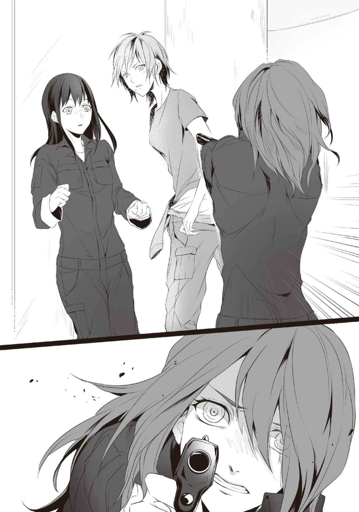
「退 いてよ」
「えっ、なに？」
麻友の言っていることが分からない。理解、できない。
彼女は銃身で、千夏から離れろとでも言うように指示する。
「その人の隣は、私なの」と麻友が叫ぶ。
「何を言っているの？」
必死に銃を向けて迫る麻友には、どんな言葉も届かない。
彼女の本心を聞こうとするワタシの言葉に、彼女は返す言葉を持たないかのように。一発の銃声で返した。弾丸はワタシの横を掠 めて、白い壁にめり込んだ。
「千夏は......」
麻友は小さな声で呟く。
「最初は私の味方だったのに、いつからかレナにべったりになって。私のことは、どうでもよくなって。私は牢の隅で一人、バカな芹菜に文句を言うだけ。そんな役割になってしまった。全部、レナのせいで」
次第に声が大きくなっていく。
「レナは、ミスしても千夏に庇 ってもらえて。レナは、泣くと千夏に慰めてもらえて。レナは、苦しんでいるときに千夏に愛してもらえる。でも、私は！」
麻友の目から涙が落ちる。
でも、その目は力強くワタシを睨む。
「私は、ミスをそのまま被るだけで。私は、牢の隅で打ち震えてたのに。私は、いつも一人で悲しみに耐えるしかなかった。それも、何もかも、全部、ぜんぶ、ぜんぶ、ぜんぶ、ぜんぶ......」
銃口を向けて、もう一度引き金を引いた。
弾は再びワタシの横を通り抜けて、壁に穴を作った。
ワタシは一歩も動けず、麻友の恨みを全て聞いていた。
強い、人だと思っていた。全ての苦しみに反抗するように毒を吐いて、大きな苦しみにも反抗するように文句を言っていた。強い者に吐かれる言葉たちは、ただの世を悔やむ言葉だったんだと知った。本当は、とても繊細だったんだと。
ワタシは彼女の拠り所を、奪ったんだ......。
ワタシの横を、千夏はすり抜けていく。
銃を向ける麻友を、千夏は銃ごと抱きしめる。
「ごめんね」
抱きしめて、謝る千夏。
動けずに、呆 然 とする麻友。
何もできないワタシ。言われたように無力だ。
「麻友、私、誤解してたんだ。『ああ、麻友は強くなったんだ。だから、一人でも大丈夫だって。私は、今度は、まだ弱いレナのそばにいよう』って、そんなことを思ってた。でも、麻友は必死に強がって、必死に立ち上がろうとしてただけだった」
ごめんね。
何度も言う。「ごめんね」と。
千夏の語る言葉は、とてもあたたかい。そして、強い愛に溢れている。
麻友は体の力を抜いて、銃を床に落とした。目からは大粒の涙を流して、必死に千夏の体にしがみ付いていた。涙が千夏の服の肩を濡 らしていく。
「だから、一緒に行こう。またチーム分けを考えようよ。ね？」
麻友に、千夏は問い掛ける。
その言葉に、麻友も頷く。
五人の班、二人乗りのエレベーター。
芹菜はすぐに一人で行くと宣言し、余っていた他の班の女の子から一人連れてきた。
残りは、ワタシと美樹、千夏と麻友とを分けた。
これで進む。
「さあ、行こう」
千夏が声を掛け、ワタシたちは進む。
ワタシの目は、麻友と千夏を知らず知らずに追っていた。
そのうちに、麻友と目が合った。
ワタシは、彼女の目に違和感を覚えた。
千夏の明るさで輝いていた麻友の目は、いつの間にか光を失っていた。真っ暗に濁った麻友の目には、たぶん誰も映っていない。
小瓶を一人一本ずつとり、エレベーターに乗り込むことにした。
まだ二人組になっていないグループが、一つあった。
残ったのは三人で、誰が一人で行くかと相談していた所だった。その話し合いは、まだ終わりそうにない。芹菜と他の班の子が近づいて行って、その話し合いに加わろうとしていた。
「置いていくよ」
美樹が叫ぶと、簡単に「行ってていいよ」などと言う。
本当に芹菜は、何を考えているんだろうと思う。
気を引き締め、エレベーターに向かった。
「も......」
麻友が、そっと呟いたのが聞こえた。
千夏は、振り返って麻友に「どうか、した？」と声を掛けている。
今度は、はっきりと全員に聞こえるように言った。
「ゴメン──もう、いいの」
麻友はアンプルを開けて止める間もなく飲み干すと、床に座り込んでしまった。
千夏は急いで駆けよって、毒を吐かせようとする。でも、麻友自身がそれを拒絶するように手を払った。
千夏はそれでも助けようとする。
「もう、いいの。千夏、寂しくて言ったワガママだから」
振り払おうとする手が顔に当たろうと、千夏はどうにかして指を麻友の口に突っ込もうとする。
そうして毒を吐かせるのが、ここでできる最善の手だった。
ワタシには麻友の気持ちが分かった。ワタシの今の気持ちが、麻友がここでずっと感じてきた寂しさだと思ったから。
「痛っ」
千夏の手はなんとか麻友の口に入ったが、その手を嚙んだみたいだ。
麻友は死ぬことを望んでいるかのように、みんなに手を振った。
「その人の隣は、私じゃなかった」
麻友は唐突に告げた。
誰もが無言になる。
静かな「白の間」に、麻友の話す声だけが響いている。力のない声でも、はっきりとワタシたちの耳には届いていた。
「レナを突き飛ばして開いた場所は、やっぱりレナの場所だった。私が千夏の隣に立ったときに、理由もなく気付かされたの。『私じゃダメなんだ』って。そして、このままゲームを進んだら、間違いなく私も千夏も、そしてレナもゲームに勝てないんだろうなって」
「何を言うの、麻友」
千夏は、麻友に叫び続ける。
「何もないの。でも、あえて理由を述べるなら、その場所は眩 しすぎたから。私には、千夏の隣は眩しすぎた。私はみんなの後ろで、文句を言っている方が合ってた」
だから──と麻友はワタシを見て、言った。
「アナタは、アナタの場所にいて。私はまた私の場所に戻ってしまうだけ。それだけだから。でも、もしも生まれ変われたなら、こんな生き方はしたくないな......」
麻友は、そのまま目を閉じて動かなくなった。
首を搔きむしるほど苦しい毒のようだったけれど、幸運なことに彼女は苦しまずに死ぬことができたみたいだ。眠っているような麻友を、千夏は今にも泣きそうなのを必死にこらえながら、笑顔で見送った。
ワタシには耐えきれないほどの痛みが胸に走った。
目からは知らないうちに涙がぽろぽろと零れ落ちて、床に大きな染みができていく。寂しかったのは理解できる。でも、死ぬよりも生きていた方が、きっと少しは幸せだろうなと思ってしまうのだ。
美樹も芹菜も悲しい顔をして、麻友の死を見送っていた。
千夏は倒れた麻友の傍らに膝をついて、麻友に祈りを捧げていた。そしてすぐに立ち上がるとワタシにもするように麻友の髪をクシャクシャと撫 でた。
◇ ◇ ◇
「アンタさぁー、コレもらってくんない？」
クラスカーストで上の方にいる女子生徒、ただ喋 り方から頭のよさは感じられず、前回の小テストでは一つも正解がないと職員室に呼ばれていたヤツ。私にとっては、どいつもこいつも同じような馬鹿にしか見えなかった。
「聞いてるの、緑木」
女は、私の襟元を摑む。
その女の方が私より体格的に勝る。
頭は悪いくせに、身長も体の発育も相手の方が上だった。動物的に考えるなら、すでに体の成長という点で私はこの女に負けているということだ。
「勝手にすれば」
私は、表向きでトランプを見せる。
勝手に好きなカードを抜き、勝手に要らないカードを捨てていけってことだった。
手札に最後までジョーカーが残ることはないだろうと、高をくくっていた。
カードが揃い消える。
カードが揃い消える。
他の人は、ほとんどのカードを消費してしまっている。
まだ多くのカードを持ったままの私。
交換してくれない、クラスのヤツら。
誰も信じられない。
「ねえ、交換してよ」と声を掛ければ、無視して逃げる。
「ねえ、交換」と声を掛ければ、席を立たれる。
交換──誰も相手にしない、私のこと。
「じゃあ、持っていけばいいでしょ」と表向きにするカード。ジョーカーをもらってくれるわけもなく、最初のゲームで私は負けた。
そして、私は全てを拒絶する生き方をすることにした。
麻酔銃が首に打たれる間際、あの女は呟いた。
「負けて当然だよね、自分が嫌われてるのも分からない馬鹿だからさ」
「そう、人のことを見下したような言い方で、いつも。まあ、これで最後だしね」
「じゃあね、マユユ」
ああ、その名前は。だから、嫌いだったんだ、その名前で呼ばれるの。
今度は、その名前で呼ばれるのが似合うような、明るい子に。
そうして、私の意識は途切れた。
──────。
◇ ◇ ◇
ワタシは元のように千夏の手を握り、エレベーターへと乗り込んだ。
美樹は最初少しだけ嫌そうな顔を見せながら、芹菜とエレベーターへ乗る。芹菜が連れていた一人の子は、いつの間にか他の班の子と勝手に上の階に向かってしまったみたいだ。
ごねても選択肢は彼女しかない。すでに「白の間」には、ワタシたちしかいなかった。
千夏は、ワタシたち三人に向き直って声を掛ける。
「先を急がないとね。でも、この仲間だけは信用し合おうよ、ね」
「うん」と三人が頷いた。千夏は、一度美樹に向き合う。
「ねえ、美樹。芹菜のコト、ちゃんと......」
「分かってるってば」
千夏の言葉を最後まで聞かずに、「行くわよ」とエレベーターへと向かった。
ワタシたちもエレベーターへ乗り込む。扉は簡単に開いて、すぐに次のフロアとなる「赤の間」へと上昇した。
「ねえ、レナ。次は、戦争の間だったよね？」
「戦争......だけど」
「戦争か......」千夏は、悲しそうに言った。
ここまでに多くの銃での争いを見た。
これ以上、ワタシたちは何を争うのだろうか。
「もう、嫌だね」
「うん」
ワタシも思っていたことを、千夏は口にした。
今度のエレベーターは、とても狭い。
ドアの反対側、入ってすぐ正面には、大きな窓が付いている。映っているのは、真っ黒なコンクリートの壁だけ。地下なのにどんな意味があるのかと思ったが、エレベーターが進むにつれて、ある景色を窓に映し出してくれた。
大きな柱の内側に、こんなにも不気味な吹き抜けの空間が存在していたとは。その異様な情景に何もなくとも死の恐怖を感じる。
まるで子どものころに教えられた地獄、というのが喩 えとして一番的確だと思う。
真っ赤な水、まるで血のような液体がぐつぐつと下の方で湧いている。
沸騰する池や、その周りの岩肌からは煙が勢いよく噴き出す。
「怖いよ」
ワタシは千夏の手をぎゅっと握った。
池の真ん中には台座がある。
そこに馬に乗った真っ赤な騎士の石像が立っている。
石像の騎士は右手に剣を持ち、赤い馬に跨 り、戦場を駆けるようなポーズを取っている。剣はまっすぐに前方に向け、今にも敵に飛び掛かからん勢いだ。騎士の像は、ゆっくりと時間をかけて、全てのエレベーターを監視するように回転していた。
ワタシは千夏と体を寄せ合いながら、外の池をジッと見つめる。
彼女の手も、私の手も嫌な汗をかく。
地獄の血の池を見ているかのように、怖かった。
「ねえ、あの騎士さ」
千夏はワタシの手を強く握りながら言った。
その顔に、私も恐怖を覚える。
「笑っているような顔をしてるけど、なんだか怒っているみたい」
「そうだね」
笑いの顔と、怒りの顔。
その中間をとって作ったような石像だ。その顔は、ワタシたちを見て笑ってはくれないみたいだ。
そしてドアが開かぬまま、エレベーターは静かなアナウンスをする。
『赤の間──戦争の間です』
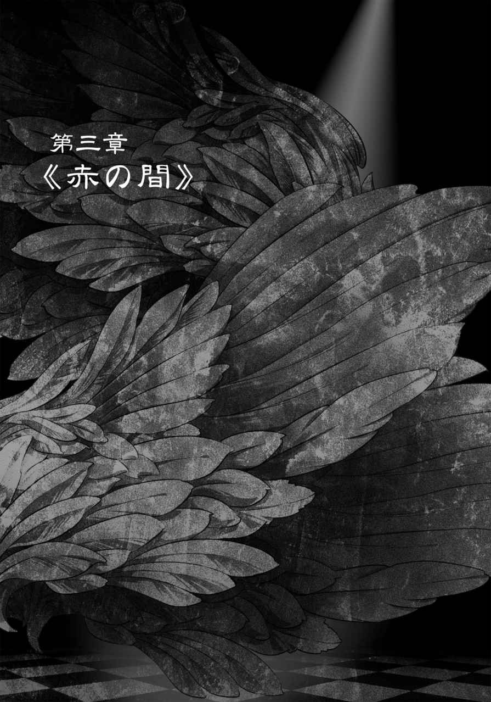
『赤の間──戦争の間です』
「白の間」では、機械の音声アナウンスは部屋の説明だけをして切れた。
だが、ここではまだその先に続きがあった。
今度は変わって、黒と白がすらすらと言葉を読み上げていく。
『このフロアは、エレベーター同士で戦ってもらう。良いことだな』
『すでにドアの横のモニターには、対戦相手が映っている。悲しいことだ』
『さあ、美しく戦え』
『悲しく散れ』
ワタシと千夏は、言葉を失った。
そこに映っていたのは、美樹と芹菜だったからだ。
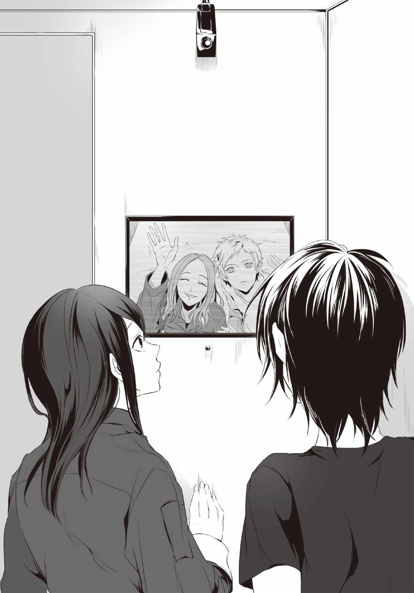
◇ ◇ ◇
モニターの下には、一つだけボタンが付いていた。
赤い、小さなボタン。
指先ほどの大きさしかなく、気付かないことだってあるかもしれない。
どこか無計画に取りつけられてしまったような雰囲気があって、何も考えず簡単にボタンを押してしまいそうだ。これをどうするべきなのか。
しかし、赤色のボタンなんて、押さない方がいいのが普通だろう。
そこでやっと、モニターの中の芹菜と美樹はこっちを見た。
モニターの上の天井に監視カメラが付いていて、こっちの映像も美樹たちの方に送られているのかもしれない。どうしていいのか分からなかったが、彼女たちは手を振って、無事を知らせている。
声は伝わっているのか。迷いながら、カメラを向いて話しかける。
「美樹、芹菜。大丈夫？」
スピーカーがあるのか、お互いの声が聞こえるようだ。
『うん、大丈夫だよ。戦うなんて、嫌な感じだね』
「だね、でも、これも両方助かるゲームならいいんだけど」
『そうね。ゲーム内容によるかも......』
「この小さなボタンを使うのかな。ここに赤いボタンがあって」
『うん、こっちにもあるよ』
会話が普通に行われていく。
でも、このゲームはデスゲーム。簡単にクリアなんてさせてくれない。
「アナウンスが始まらないね。ねえ──」
『だね。......えっ？ 何？』
おかしなやり取りが生まれた。
「ちょっと待って、どうかしたの？」『だって、そっちが急に......喋 って──』「聞こえない。何が」『声がちゃ────い。どうなって──の？』
ワタシは慌てて、千夏の肩を叩 く。
どうも、このゲームはおかしい。相手の声も聞きづらく、音声が途切れがちになる。
「こんなに会話が嚙み合わなくなるなんて、おかしいよ」
『ゴメン、そ──はなし──────ない』
相手の声が、ほとんど聞こえなくなってきた。
スピーカーから音が流れたり、流れなかったり。こっちの声も、しっかり届いていないのかもしれない。美樹は、音の不調に怒り続けている。
たぶん調子が悪いだけと思っているのだろう。
それがこの部屋の罠の一つであることを、美樹はまだ分かっていないのだと思う。
ワタシは千夏のそばで、小さく囁 いた。
「このマイクのスイッチは意図的に入ったり切れたりしてるみたい。それで相手の声が聞こえたり聞こえなかったりするんだよ」
「じゃあ」と千夏の顔は青くなる。「これで、争いのタネが生まれたら......」
「たぶん、本当に戦いになっちゃうよ」
ワタシは改めて、モニターを見つめた。
相手となる美樹と芹菜は、仲の悪いコンビ。そしてコミュニケーション不能な途切れる会話。この「戦争の間」を抜けるのがとても困難なメンバーであるのは、間違いのないことだった。だからといって、誰かと交換できるわけでもない。これはルールだ。
ワタシと千夏は、言葉を発することを恐れる。
ワタシたちが怖がって口を閉ざしたのを知って、美樹は不安になったのか話を始めてしまう。途切れとぎれの言葉は、聞いていて気持ちのいいものではない。これが罠の一部だってことを、どう相手に伝えればいいのだろう。
美樹にそれを聞く気はないかもしれないけれど。
『ね────聞いて──っちは、こ──芹菜────なのよ。──え、ち──と、答えを共有しな────が死ぬのよ』
「落ち着いて、ねえ、芹菜のことを信用してよ」
大声で、芹菜の悪口を言いながら、必死に訴えている。
あっちのチームにしてしまったこと。芹菜には可哀想なことをしたと思った。
再びアナウンスが流れる。黒と白の声は、ゲームの情報を教えてくれた。
『このゲームの制限時間は、五分。それだけ』
『問題が読まれてからスタート。これが問題だ』
二つの声が混ざり合って、美しい混声を奏でる。
黒と白は、歌うように問題の言葉を呟 いた。
『武器を向ければ、死に。
刃 を交えても、殺し合うだけ。
互いに手を下ろし、向き合うべし。
ここは、戦争の間なり』
『これをヒントに制限時間を全て使って考えよ』
『この戦いを統べる赤い騎士に勝利することを祈る』
黒と白は、プツリと放送を切った。
アナウンスが切れた瞬間、画面には「05 ：00 ：00 」と数字が現れ、五分のカウントダウンが始まった。
ワタシたちはモニターから少しだけ離れた所に座って、問題の意味を考える。画面の近くに居続ければ、美樹の声にこっちまで参ってしまいそうだ。
芹菜は、ずっとニコニコしたまま美樹を見ているだけだった。
武器を向ければ、死に──ワタシの頭は問題を再びゆっくりと再生する。
でも、武器なんてどこにもない。ワタシは、周りを見回す。
「ねえ、何か思いついた？」
千夏と目が合うと、彼女はマイクに声が届かないような小声で話しかける。美樹に聞こえると、少し厄介なことになりそうだから。
ワタシは静かに、頷いた。
千夏と体を近づけて、小さな声で答えを探っていく。
「千夏ちゃん、武器って何だろう？」
「あの問題文だね」
千夏は静かに問題文をもう一度正確に唱えていた。
彼女は、一回しか流れなかった文章を、しっかりと記憶していた。
ここには「武器」と「刃」という言葉が出てくる。でも、それがこの「赤の間」の限られた空間の中で、何を意味するのかは分からない。剣を握った騎士はいるが、エレベーターの中にいるワタシたちにはどうすることもできない位置にある。
エレベーターの中に、存在するものは限られている。
「ここにあるのって、あのボタンだけだよね？」
千夏は、エレベーターのドアの方に目を向ける。
ドアの横にあるスイッチが、このエレベーターの中で唯一の謎を解くカギになり得るものだった。
でも、それをどうするのかと、頭を抱えてしまう。
ボタンを押すと、武器が出てきて、それでどうにかするのかもしれない。
それにしても、戦う相手は別のエレベーターに乗っていて、このエレベーターの中からは、どうすることもできない。結局は、その答えに行き詰まる。
ワタシは諦めて、頭から手を下ろした。
手を──諦めて下ろした？
「互いに、手を下ろすんだよね？」とワタシは千夏に尋ねる。
少し引っかかったことがある。
「『互いに手を下ろし、向き合うべし』だよ。何か分かったの？」
「なんで武器を下ろすんじゃないんだろって。もう一回問題を教えて」
「『武器を向ければ、死に。刃を交えても、殺し合うだけ。互いに手を下ろし......』」
「そこなの。相手に武器を向けたり、刀を交えたりしているのに、三つ目は『手』を下ろしてる。手を下ろして、何もしない......つまり、ここでは何もするなってことじゃないの？」
「たぶん、それだよ」
千夏の口が大きな声を発する。
その声が相手側に聞こえてしまったようだ。
こっちが座って考え事をしているのを見て、少し喋る回数を落としていた美樹だったのに。千夏の声だけが中途半端に聞こえたがために、また美樹が立ち上がる。
『何が──なの。どういう──』
美樹が画面の向こうで喚いている。
混乱が興奮を巻き込んで、声が大きくなる。スピーカーから聞こえてくる美樹の声は、割れて流れてくる。大きな声の理由は分からなくない。ワタシだって助かりたいから。
『美樹』
芹菜が急に話しかけた。
『少し────なよ。あっちだっ──大ご──じゃ迷惑だよ』
『黙りな──い』
美樹は叫んだ。
その顔は、まるで赤い騎士のそれのように怒っている。
落ち着かせることが何よりも必要だった。でも、美樹は芹菜の言葉を信用せず、こっちの声は正しく届くことがない。美樹には、緩やかな人の心を取り戻すことすらできないのかもしれない。
ワタシと千夏はカメラの方を見ながら、美樹が落ち着いてくれるのを待った。
ずっと座ったまま。何もしようとせずに。
窓の外で光が揺れた。
ワタシはその光の動きを目で追っていた。
一台のエレベータが、明るく電飾を光らせながら上へと上って行くのが見えた。それと同時に隣のエレベーターは階下へと潜って行く。エレベーターの中の電灯すら消え、中で何が起こっているのかも分からない。
けれど、これだけは分かる。
上っていくエレベーターは勝ち上がり、降りて行ったエレベーターが負けたのだ。
そして降りて行ったエレベーターが赤い池に沈んだ直後、そこから大量の煙が噴き出した。
本当に熱い池の水が全て溶かしてしまったかのように。
「ねえ、黒と白って何者なんだろう」
千夏に、気になっていた疑問を話してみた。
あの二人はさっきのフロアでいろいろと話をしていたが、何故か白服たちの情報にとても詳しいように聞こえた。
「大男二人の情報に詳しかったり、なんか隠しながら話をしてるように聞こえて」
「となると、あの人──最初に上で放送していた人のことも信じていいのか......」
「あの人が、白？」
千夏は首を振る。
「それがイコールかは分からないけど。実は仲間で、最初にエレベーターのパスワードがどうとか言ってたことが、全部噓 かもしれないってことだよね」
千夏の考察も、有り得ないわけではない。
だから、黒と白の言葉まで疑って、「色の間」で放送をしていた人のことも疑う必要はあると思う。だとすれば、このゲームは全滅のためのゲームなのかもしれないけれど。
だが、その言葉はそっと胸にしまっておいた。
ワタシは弱気になった心を立て直す。
時間は、残り三分を切っている。もう二分も過ぎてしまっていた。
これでは、いけない。ワタシはそう思った。
「ねえ、落ち着こう」
カメラに向かって叫んでも、正確にこの声は届かないのは分かってる。
ワタシが無意味なことをしているのは知っている。
知っていても、体は動いた。
みんなで生き残りたいと思う心が、ワタシをそうさせる。
「落ち着いてよ、美樹」
繰り返せば、伝わるのかもしれない。
ワタシは何度も喋り続けた。
何度も、何度も。聞こえるように。
でも、それが大きな間違いだったと知ってしまった。
「さっきから何も聞こえないの。レナはなんて言ってるの？ 答えてよ。これはどうやったら聞こえるのよ」
相手からの言葉は明朗に聞こえるようになった。
代わりに、こっちの音は一切聞こえなくなったようだ。
「ワタシが、喋り続けたから？」
声が、悲しさで震える。
切断された会話も、やってしまった失敗は取り戻せない。
絶望に膝から力が抜け、地面に崩れ落ちる。これでは相手に指示や説明をすることがもう二度とできはしない。自分の失策に、悲しくなる。
「千夏、もう駄目だよ。死んじゃう......」
「大丈夫だから、まだあっちにはこっちの動きが見えてる。あなたは、何も悪いことはしてないじゃない。映像が見えるだけで、私たちがどうしたいのかを知ることはできるもの。そして、あっちには芹菜がいるから」
「でも、美樹は......」
美樹は、芹菜の心の籠っていない上澄みのような言葉を、信用しない人だった。でも、芹菜は時折鋭い言葉を吐いては、誰よりも的確に物事を捉えていることもある。
不思議な人だった。普段の信用されない面と誰よりも鋭い面。
両方を持ち合わせながら、「本当の姿」というものを誰にも悟らせない。
たぶん誰も、彼女の本当の心のカタチを知らない。
◇ ◇ ◇
「アナタの力じゃあ、どうにもできないでしょ」
アタシがまだ、自分を「私」と言っていたときのことだ。
私は、正しい言葉しか吐かなかった。
正しいことをまっすぐに話す。オブラートなんて言葉は知らない。
学級の大事な話し合い。誰が、どの役職に就くべきか。それは、正しく公平に話し合って決めるべきと正論を吐いた。その人には、自分が持っている力があって、それに見合った仕事をするべきなんだと。
「アナタみたいな、成績も素行も悪い人に仕事を任せるの？」
「そんなこと言うなんて。芹菜さん、なんて人なの」
そんなに成績も、素行も悪いわけではない私はさっさと話し合いを進行した。
正しい学級の話し合いをしたと本当に思っていた。
「アナタが......」といくら言っただろう。
「アナタなんかに？」なんて数えられない。
私はまっすぐな言葉を吐き続けて、あまりにも多すぎる敵を作った。
正しい言葉は、人を傷付けることもある。敵を作ることもある。
人と人の間は想像以上に調整が難しく、思ったよりも簡単に離れも、くっ付きもする。
だから、人は作り出すしかなかった。正しい言葉だけではない、人を助けて守る「曲がった」言葉たちを。それらを使って、生きていく術 を。
それを知らず生きていた私は、ババヌキでも負けた。
そしてここの前にいた、とある矯正施設に入れられる。
そこで私は大きく変わろうとした。
「アナタはどうして負けたの？」
「三者三様、十人十色──でも、どうだったかな。トランプが不良品でジョーカーが二枚配られてね。オマケで負けちゃったんだよ」
班の人間に聞かれた言葉に、そう答えた。
噓をつくのは、意外と難しいことではなかった。
答えづらい質問をしてきた女の子も、アタシのその答えで笑ってくれたから、それでよかったのかもしれないと思った。
それからのアタシは、軽い戯言を言い続け、吐き続けた。
いつしか言葉がアタシを変え、どこか薄っぺらな人間になった。
「でも、それでいいじゃない。人の最後は、どうせ真っ白な灰になるんだから」
なんてね。
◇ ◇ ◇
アナウンスも言っていた。
「時間を全て使って考えろ」と。つまり、互いのボタンが押されないまま、タイムアップすること、それこそが正しい「戦争の間」の答えなんだろう。
だが、今の状況はワタシたちが何もしないまま、一方的に殺される状況に他ならない。
ワタシたちの命を握るのは、美樹と芹菜なんだから。
一方通行になったスピーカーからは、二人の声が聞こえてくる。
『で、ボタンを、どうすればいいのよ。あっちからは何も聞こえなくなっちゃったし。大体あっちからの音は全部聞こえづらかったんだよね。何かやったんでしょ』
『無理やり脱出とかしようとして、どこか弄っちゃったのかな』
芹菜はそんな戯言を吐くが、カメラに一度目線を向けた。
その目は、どこか心配そうにこっちを見ている。
『あっちの声が聞こえないとすると......』
美樹が指で唇をなぞりながら、考える。
少しは落ち着いてくれたみたいだ。しかし、美樹は人をまとめるのは上手だが、人を引っ張るのが苦手だった。大きな決断を下すのは、千夏の方が向いている。
『問題は、このボタンを押すのか押さないのか』
『アタシは、押さない方がいいと思うけどね』
『アナタの答えは決まって、反対の方が合ってたりするけど？』
芹菜が反対のことを言うのはいつものことだ。
それが美樹にとって、芹菜を信用できていない一番の理由なんだろう。
『だったら、押してみたらいいじゃん』と芹菜は美樹をあおる。
『自分の判断を本当に信じ切って、そのボタンを押してしまったらいいじゃない？ それで、もしも千夏を殺してしまったとしても、アタシを恨まないでよね』
『何を言うの？ 急に......』
『勝手にやったらいいでしょって言ってるの。アタシ、知らないから』
芹菜は、美樹を自分のペースへと引き込んでいく。いつものテキトーな話し方ではなく、真剣な説得で美樹を圧倒していく。こんな芹菜は、たぶん美樹も千夏も、それからワタシも見たことがない。
『えっと、じゃあ、それを』と美樹は言いよどんだ。
『どうするの、知らないから』
芹菜はどんどんと美樹を責め立てる。
芹菜の目がカメラを向き、一瞬ウィンクしたように見えた。
『勝手にしてよね』と言いながら。
ワタシはそれを見て思う。
真に芹菜のことを理解していた人間が、ここに何人いたのだろうと。
彼女が本当の顔を見せた人間は何人いたんだろう。
突如、爆音が響いた。
大きな交通事故が起きたような音だった。
後ろの窓を見れば、池の真ん中にいた騎士の剣が壊れていた──ように見えた。剣が折れて、刃の部分がなくなってしまったみたいに。
いや、違う。
窓の外をよく見れば、剣の柄から伸びたワイヤーがある。それを目で追うと、隣のエレベーターに突っ込んでいた。刃がエレベーターを突き刺してしまったみたいだ。
赤の騎士は、こっちを睨 んでいる。怒っているような、笑っているような顔で。
「何？ どういうこと？」
千夏が叫んだ。
直後、黒と白がアナウンスをした。
『失格したチームが出ました』と黒。
『反則まで使うとはあさましい』と白。
ワタシは声の震えを何とか抑えようとしながら答える。
「隣のエレベーターが......騎士に」
剣の柄から伸びた紐が一気に巻き取られる。
すると、女の子が騎士の剣で串刺しにされていた。剣は二人の胸を貫いて、像に引っかかったまま磔にされている。ピクリとも動かない所を見れば、すでに死んでいるのだろう。
モズのはやにえのごとく磔にされる女の子。赤の騎士の空間は、真に地獄となった。
「......もう、だめだよ」
ワタシの口が勝手に動いて、諦めの言葉を口にする。足から力が抜けた。
千夏がゆっくりと近づいてきて、へたり込むワタシをそっと抱いた。彼女の柔らかさがワタシを包み込むが、彼女の体も血の気が引いたように冷たかった。
「大丈夫」
いつもなら聞こえる言葉が聞こえない。
『彼女たちは、窓から情報を外に流そうとした』
『音ではなく目で、見せようとした。だから、失格にした』
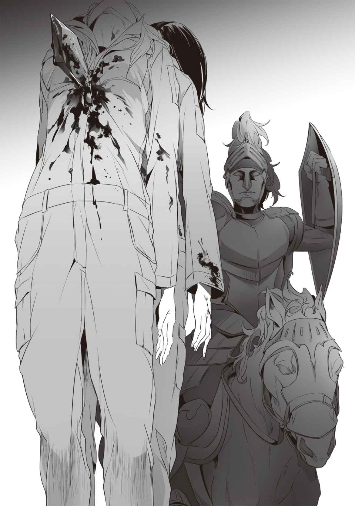
『本当の想いとは、目でも』
『耳でもなく、心で感じるものだ』
黒と白は、二人でそんなことを話す。
『だが、失格は失格。これは対戦相手も失格だ』
『その情報を見てるかもしれないからね』
また一つ、向かい側でエレベーターが下に沈んで行った。勝ち残っていったのは、まだあの一台だけだった。
◇ ◇ ◇
時間はすでに一分を切って、カウントダウンは秒とそれ以下の単位だけになった。
一秒以下の数字は、目まぐるしく移り変わって、じっと見つめていると目が痛くなってしまいそうだ。
「やってくれるかな」
千夏は手を胸の前で組んで、祈るようなポーズを取っている。
画面の向こうでは、美樹がせわしなく歩き回り、悩んでいる。
「やってくれるといいな」
ワタシはそう答えながら、こっちが動く気配がないのに気付いてもらえたらと心の中で思っていた。時間は、そうしている間にも減り続け、もうすでに残り五〇秒を過ぎていた。
そこで、スピーカーから大きな声が聞こえた。
『ああ！』
芹菜の声だった。
何事かと、画面を見ると、そこには「ＳＯＵＮＤ ＯＮＬＹ」の文字だけがあった。
真っ黒な画面に、真っ赤な文字で。
これも騎士の悪戯 なのか。
『どうしよう』
『これじゃあ、あっちの動きも分からないのね。押す瞬間を見せない気なんだ』
と、芹菜は明らかに絶望した声で呟いた。
『それが、最後の賭けになると信じてたのに』
『もう、どうしようもないわ』美樹も同じ考えだったのだろう。
相手の行動を見ながら、行動するのを防ぐ罠が最後の最後で発動したみたいだ。
これじゃあ、本当に分からない。
ワタシたちは、死ぬんだろうか。
死ぬ。
その二文字が、目の前にちらつく。
本当にこれで人生が終わる。病に侵されながら、それが爆発するでもなく、苦しく死んでいくのだと思うと悲しい。いっそのこと、自分で自分を終わらせようかとも思う。
ポケットの中には、「白の間」での小瓶が入っている。
これを飲めば、死ねる。
そして、ここでの犠牲として三人は助かるのかもしれない。
「賭けだ」と思いながらも、ワタシは死ぬ決心をした。
ワタシは千夏が見ていないのを確認して、ポケットの瓶を取り出した。
死は、すでにワタシの心を侵していた。悪魔のように気付かぬほど静かな足取りで、心の中の大きな部分を簡単に盗んでしまう。そうして、すぐに「死」のことしか考えられなくなる、恐ろしい魔物だった。
小さな蓋を、開ける。
数ミリリットルの液体で、人が死ぬのだ。
一気に、今のうちに、それを飲み込んでしまおう。
死んでしまおう。
死のう。
アンプルを口元に運んで、それを傾げて飲み込む。
瞬間──手が払われ、瓶が床に転がった。
カランと透明な液体が床に撒き散らされながら、瓶が床をどこまでも転がって行く。
「ダメ」
千夏は叫び。
──。
ワタシの頰に熱さが広がった。熱はだんだんと痛みに変わった。
千夏の手が振るわれて、自分の頰が打たれたのだとワタシは何となく理解した。悲しくはなかったし、どちらかといえばワタシは冷静だった。ワタシは聞き分けのいい子どもみたいに、痛みに耐えて千夏の目を見ていた。
千夏の赤く充血した目は、怒っていた。
それはそうだ。ワタシは勝手に死のうとしたんだから。全てを諦めて──。ワタシはまだジッと彼女の目を覗 いていた。ふと目の色が怒りから優しさに変わり、千夏はワタシの手をギュッと握った。
「ダメだからね。最後の最後まで生きるの。犠牲になんて絶対にさせないから。もし死ぬことがあったとしても、絶対にこの手は離してあげないからね。どこまでも一緒に行ってあげるから」
千夏の手の温もりが、じんと伝わる。
ワタシの怖さも、千夏の怖さも二人で分け合えば、それは二分の一の大きさじゃなくなってしまう。もっと、もっと小さくなる。
手を繫 ぎ、二人で祈り続ける。
「もしも、死んでもさ......」
千夏が何かを言おうとしていたが、その言葉を途中でやめてしまった。ワタシは「どうしたの」と尋ねたけど、首を振って、
「なんでもない」と言うだけだった。
もう、四〇秒。
◇ ◇ ◇
あと、三〇秒だ。
モニターは回復せず、スピーカーから声だけが聞こえてくる。
『どうしよう、これじゃあ本当に』と芹菜。
『私は、もう決めた』
美樹は固い決心の下に言う。
『私は、押すのが正しいと思う』
『でも、失敗したら？』
『それでも、このゲームに勝って外に出たい』
『やめて。許さないから、ゼッタイ押させない』
『どうしたの芹菜、何かいつもと違うじゃない』
芹菜は、固く言う。
たぶん彼女は戦っているんだ。自分とも、美樹とも。
『アタシは......いえ、私は固い性格でみんなを傷付けながら生活してきたの。柔らかさで優しく包み込むような、そんな性格の人間に憧れた。だから、ここではそんな風になろうとして、なれずに失敗した。
所詮は、軽く、浮いているような存在でしかなかった。美樹にも信用されることもなかった。でも、信じて。私は本当のことを言ってるの。さっき、千夏たちの様子を見てたでしょ。彼女たちは動こうとしてなかった』
真摯に訴える声。
いつもの仮面を脱ぎ捨てて、美樹を説得しようとしてる。
『だから、お願い美樹。私を信じて』
その言葉に、小馬鹿にするようなゆっくりとした拍手が答えた。
美樹の手による、拍手の音だろう。
あと、二〇秒。
こらえて......美樹。
『上手いね、芹菜。いつの間にそんな演劇の練習してたのよ』
『違うの、これは本当の......』
『本当の『私』？ どれが本物よ。だから、アンタを信用しないって言ってるの。本当の私とか、それは本当の私じゃないとか。いつもどれが本当のことなのか分からないアンタが、そんなことを言って信用できると思うの？』
『それは......』
『アンタのその『オオカミ少年』みたいな性格は、死んでも信用しないから。私は、私のことを一番に信じてるもの』
残り時間は、五秒を過ぎていた。
『待って。やめてよ！』芹菜が叫ぶ。
『退きなさい、私はスイッチを──』
ドンという大きな音のあと、壁が強く叩かれるような音がした。
『美樹、押したの？』
震える声で、芹菜が尋ねる。
『ええ、押したわよ』
『............殺しちゃった、千夏を......私たちは』
すすり泣く声を出す芹菜に、美樹は言った。
『まだ分からないじゃない。死んじゃうかなんて』
ずっと芹菜の泣き声だけが聞こえてきた。
その声が響きわたるほどワタシたちのエレベーターも静まり返っていた。
もう終わったんだ。全てが。
『あなたたちは、赤の騎士に負けてしまった』
『赤の騎士は人を信じない心に付け入る』
タイムアップのあと、すぐに黒と白のアナウンスが鳴った。
思ったとおり、声は負けを宣言した。
『片方は、武器を相手に向けた。約束のとおりに、死を与える』
『仲間も信用せずに、相手に武器を向けた。それは罪だ』
ワタシも千夏は、祈っていた。
けれど、その祈りは予想もしていなかったアナウンスの一言で裏切られ、違った絶望がワタシたちを飲み込んだ。
『死は、他人を信じることのできなかった者たち、ボタンを押したチームへと与える』
『人を信じない罪は重い。体が朽ち果ててしまおうと他者への懺悔を捧げよ』
瞬間、モニターの画像と音は回復した。
死にゆく姿を見ろという残酷な装置が起動したようだ。二人は、背中を合わせて座り、震えているみたいだ。
「美樹！ 芹菜！」
千夏は、大声で呼びかける。
その声に、気付いて芹菜はこっちを向いた。
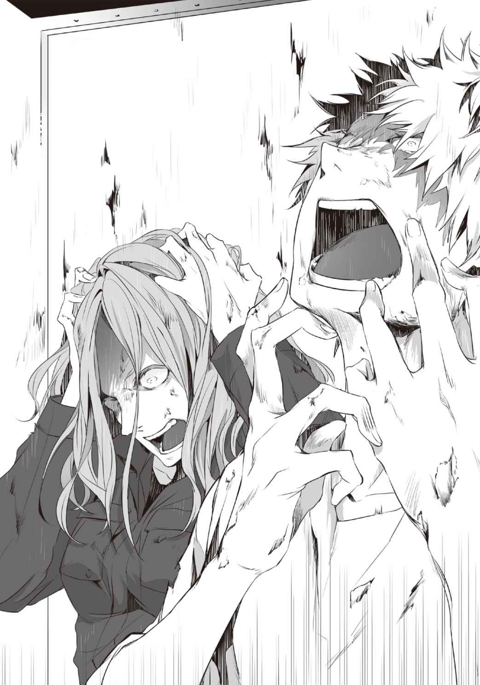
『ゴメンね、千夏。死んじゃうみたい』芹菜はそう言って、悲しく微笑んだ。
でも、美樹はずっと顔を伏せたまま、動こうとしない。
ゲームに裏切られたショックか。死んでしまう絶望か。
美樹が落とされた世界は、とても深い場所で、そして暗いものなんだろう。動けないほどの悲しみが彼女を包んでいる。
モニターの向こうで、天井から液体が吹き出した。
それは、二人の服を、皮膚や肉を、グズグズと溶かしていく。皮膚が崩れ、骨が露出するまで、血と白煙が立ち上る。悲鳴。もはや人の言葉ではない。獣の叫び声だ。それが大音量でスピーカーから流れ続ける。
真っ赤になっている床。もう、画面は正視できるものではない。
それでもスピーカーは、音を流し続ける。
『ごめんね......チナツ、レナ......セリナ』
聞えるはずのない声が聞こえた。美樹の喉は、すでに形もないほどに崩れているだろうに。でも、ワタシと千夏は、二人ともその声を聞いた気がした。
いや絶対に、夢なんかではなく、美樹の声を、聞いた。
彼女だって、プライドは高くとも、ゲームの敗者なのだ。たぶん深い傷を負っていたはずだから。
ワタシの目は、知らず知らずのうちに涙を零 していた。
千夏はワタシの隣でワタシの手を握っていた。しかし、その手は何故か震え、消えるように力が抜けていった。
どうしたの、千夏？
言葉にしなかったけれど、ワタシはその小さなことに言い知れぬ不安を覚えた。
◇ ◇ ◇
勝てる。これで普通に勝てる。
私は、そんなことを思っていた。一日目のババヌキは、女子のグループで最大派閥となっていた私たちにとって楽に勝てるものだった。グループを仕切るのは、私と大切な友だちだった。
「美樹、結構簡単だったね」
「何言ってんの、最後の方までカード残してたくせに」
「楽勝よ、楽勝」
私の一番の友達は、どこか軽い話し方をする、どこか芹菜に似た女の子だった。
一日目、最後までジョーカーを持っていた者は失格になるという話しか聞かないまま、ババヌキをすることを強制された。そしてグループ全員で勝利できたが、失格になった者の末路はショッキングなものだった。
麻酔銃を撃たれ、涎 なのか泡なのか分からぬものを吹き出しながら気絶する女の子。
クラスカーストで下の方にいる、暗い子だった。
「あの子が......」
友人が隣でそう呟くのを聞いた。
そのあとに起きたことを、絶対に忘れないと思った。
私の隣にいた友人は、急に二階の窓から飛び降りてしまった。首を真下に向けて落ちていった。落ちたときに首は折れ、頭は割れて赤いものが吹き出した。
「何よ。それ......」
友だちの死に、ショックを受けた。どうショックを受けたか、なんて説明する言葉を持たないほどに、私はショックを受けていた。気持ちが、悪い。
胃液が食道を逆流してくる。
それから、私はその友だちの自殺の意味を知った。
ゲームで負けた女の子と、私の友だちは学校に入る前からの幼なじみだったそうだ。そして、学級内の誰が決めたかも分からないカースト制度が、二人を上位と下位に分類してしまっていた。
そしてゲーム開始時に、ジョーカーを持っていたのは私の友人。
負けた女の子は、友人からジョーカーを引いたらしい。
「楽勝」なんて言ってた友だちは、本当は痛すぎる傷を心に抱えていたのだろう。でも、彼女の口からそれを聞くことはできなかった。最期まで、彼女は「楽勝だった」なんて軽口を叩いていた。
私は、それっきり人を信用できなくなった。
そして、ゲームに負けたのである。
人を信じること、それが何よりも大切で、必要だったゲームで。
軽口しか叩かない、新しい友だちのことも。
信じてあげれば良かった。
ゴメン、芹菜。
◇ ◇ ◇
静かに、扉が開いた。
ワタシたちのエレベーターはフロアを上って、新しいフロアへと辿 り着いたのだ。
アナウンスは変わらず、小さく不気味な声で新しいステージの名前を読み上げる。
『黒の間──飢饉の間です』
真っ黒な世界が、ワタシたちを出迎えた。
「黒の間」。黒色の飾りつけに統一されたフロア。
フロアに一歩踏み出すとエレベーターのドアは閉まり、もうこのルートを戻ることはできない。全てのシステムを停止させて、ゲームを終わらせなければ麻友や美樹、芹菜の亡 骸 すら地上に上げてやることは不可能なのだ。
その悔しさが、込み上げてくる。
フロアの中を見回せば、ここまで勝ち上がってきた人数の少なさが目に付く。ワタシたちを含めて四人。
本当に全滅させるためのゲームだったと思わざるを得ない。
ワタシたち四人は、一五〇ほどの犠牲の上にここまで生きてこられたということだから。悲しい現実が突き刺さる。
『残ったのは四人とは。虚しいことだ』
『ここまで残るとは。喜ばしいこと』
黒と白の言葉が、妙に淡々と頭の中に響いた。
相変わらず正反対の言葉を紡ぐ黒と白。その声の主は、やっぱりリアルタイムで話をしている。どこで見ている誰なんだろう。
『でも、これが最後のゲーム。この上は地上一階、青の間』
『ここまで来れば勝ちとする。ゆえに、ゲームは残り一つ』
「あの、一つ質問してもいいですか？」
千夏は、大声で天に向かって問い掛けた。
『ああ、何なりと聞け』
『答えられることには答えよう』
「多くの仲間も、ここに収容されてた人たちも死んでしまった。なのに、ここから出た人だけは救うと言うのは本当なんですか？」
『本当だ』
『それは守る』
「何のために？」
黒と白は、二人で笑う。
声を合わせて、冷たく笑う。
ワタシはその恐ろしさに小さく震えながら、黒と白の答えを静かに聞く。彼らがこんなことをするわけを。
『それでは、質問が二つになってしまうが？』
『だが、それも一興』
「すみません、そんなつもりはなかったんですが」
『構わん。でも、その答えは、ここまで上がってきたとき』
『全ての真実を教えよう。それでは』
黒と白の放送は、切れてしまった。
このゲームもこれで最後だという。
これを越えることができれば、生きて外に出られる。
生きられる。
でも、あまりに多くの人の死を見過ぎた。
麻友、芹菜、美樹──仲間だった人の、死。三人の腕に、ワタシの足を摑 まれているようにも感じる。死へと引き摺り込まれるような、そんな感覚に、すぐにも死んでしまいたくなる。
でも、ワタシはずっと見ている。
太陽のように明るい、千夏 の方を。
ずっと、ずっと。
「勝とう」
千夏は言った。
ワタシはしっかりと頷いた。
「でも、もうアナタしかいないのね、レナ」
ワタシに抱き着く千夏は、酷く弱々しく見えた。同い年の女の子のように見えた。
何だろう、久しぶりに見た顔だ。ずっとワタシたちのために生きてきた、走り続けてくれた千夏なのに。なんだか、違う人のように見えた。
「どうしたの？」と聞いても、何でもないと答える千夏。
ふと彼女の目の奥に、濁ったものが過ぎていった気がした。
気のせいだ。そう思って、忘れることにした。
でも、
最後のゲームで、ワタシは真の絶望を知るはめになる。
高浪大介という男は、最低の男だった。
ジョーカーゲームなんていうゲームを考えたときに、日本政府がいかに腐ってしまっていたか。そんなことは簡単に想像できた。ただ、その中でも最低の男だと、私は思う。彼は私を脅すために、施設に送られた人間がどうなったのかを教えた。
まだ誰も起き出さない早朝、高浪は私たちの牢獄の鉄格子を蹴った。
私が一番外側に眠っていることを知って。
「千夏、『下 川 ちひろ』という女を知ってるな？」
「な......」
最も聞きたくない名前に、私は言葉を失った。
彼女の現在を、私は心配していた。私自身がこうなっている以上、一番に負けることになったあの子は、今どうしているんだろうと気になっていた。彼は、普通に大学へと進学した人間の明るい未来の話もするが、こんな地獄のように壊れた話を好んで聞かせることが多かった。
私が苦しめばいいと思って。
「アイツ、死んだってよ」
「......」
「ゲームの中に入り込んだ裏切り者によって、ゲームの参加者は全滅。裏切り者だけが残ったサイテーのゲームだったらしい。まあ、施設の中でも『ある女』の後ろにくっ付いているだけで、更生の兆しなしと判断されてたらしいからな」
「だから、なんなのよ」
私が睨むと、高浪は大声で笑い出した。
「正直、もっと悲しんでくれると思ったのにな。俺もお前のことをもっと分かってるつもりだったが、まだまだ知らないことばかりだったと言うわけだ。隅々まで知ってるのは、お前の体ぐらいなもんだな」
静かに笑いながら、高浪は去って行った。
私はその男が悠々と立ち去るのを、見えなくなるまでずっと睨 んでいた。
そうだ。アンタは何も知らないんだろう。
目から──涙が、零 れた。
何も知らないんだ。
「どうしたの？」
隣に寝ていたレナも眼を覚まし、後ろから声を掛けてきた。私はレナのことを抱きしめて、その肩に顔を埋 めて、声を押し殺すようにして泣いた。涙が、レナの作業着を濡 らしていく。
誰にも知られたくない涙だってある。
誰にも知られたくない悲しみもある。
決して、あの男には。
高浪には見せることのない、本当の私がそこにはある。
レナといる、この時間だけは本当の私のような気がするから。
私は、こんな何気ないだけの時間を狂おしいほど望んでいる。
何もない、苦も楽もないような時間を......。
◇ ◇ ◇
戦争の間を通り抜けたエレベーターが、間の抜けた電子音とともに次のフロアへ到着した。ドアを抜けた先にあるのは、黒一色の部屋だった。
中心にあるエレベーターを囲うように広がる、ドーナツ状のフロア。
大きさは「白の間」と同じくらいだろう。
アナウンスは告げる。
『黒の間──飢饉の間です』と。
飢饉の間。不作による飢餓の苦しみの世界。
真っ黒なフロアがワタシたちを出迎える。天井の照明も少し薄暗い。
元は白い壁紙が張られていたと思 しき壁は、黒い煤 で汚されているのか、煤の付き方に斑 があり、所々から下の白い壁が見える。壁の上には、ホコリの積もった蜘蛛の巣と剝 がれかけた壁の一部が垂れ下がってきている。
そして、何よりも気になるのは、床に置かれた瓶だ。
何百個という瓶が、床の上にそのまま置かれている。
そして、それら一個一個が不思議な光を放っている奇妙な空間だった。
ワタシは不思議な光を放つ瓶が気になって、一つを寄せてみる。
瓶の下の床石には穴が開いており、ＬＥＤのライトが瓶を光らせているようだ。瓶の中に入っているのは、紫色や青色をした飲むことができないような液体だ。それも照らされるとどこか綺 麗 に見えてしまう。
だが、手に取った紫の液体が入った瓶のラベルには、大きな文字で「毒薬」と書かれていた。隣の瓶もまた「劇薬」とラベリングされている。
まともなラベルの瓶は、見当たらない。
この中のどれかに仕掛けでもあるのか。
ゴホ──千夏がふと咳をした。
口元を手で押さえて、必死にその手の中を隠そうとしている。
「大丈夫、千夏？」
私が駆け寄ろうとしても、彼女は「来ないで」というだけで、ワタシには何もさせてくれない。咳をして血が出るくらいに危ないのなら、ほとんど時間はないということなのに。
恐ろしい速さで時間は、流れていく。
零れ落ちた砂は、元に戻ることはない。
ワタシが心配している間にも、千夏は咳を誤魔化して、そして率先して問題を解くべく行動する。
「ねえ、本当にアナタたちだけなの？」
千夏は、すでにここに来ていた二人に尋ねていた。
その答えは考えれば当たり前のことだった。
「あなたたちの班でしょう。『白の間』で、最後まで残って話し合いをしてたのは？」
「そうだけど、『赤の間』のは全員五分なの？」
「そうよ。五分だった」
その言葉にもう一人も勢いよく首を縦に振る。
悲しむ様子すら見せずに、たんたんと答えてくれた。頰には薄紅色の細い涙のあとがあって、二人はもう悲しむだけ悲しんだんだろう。二人の目には、進み続けるという強い決心の光が見えた気がした。
「ここが、最後のゲームね」
千夏がそう言い終わらないうちに、足元がぐらついてワタシに倒れかかる。
ワタシは彼女を必死に支え、「大丈夫？」と声を掛ける。彼女の体からは普通ではない高熱といつも以上の重さを感じた。
たぶん体に思うように力が入らなくなっているんだろう。
「大丈夫だから、本当に」
「急いでゲームをクリアしないと」
慰めの言葉ではなく、進もうとする決心を口にした。
ここから出るには、このフロアの謎を解かねばならない。さっきまでの時間の使い方では、全員が死に絶えてしまう。
そうなったら、ここで死んでいったみんなは？
「ここは、みんなでやりましょう」と言って、千夏は頭を下げる。「じゃないと、本当に全員が助からなくなっちゃう」
ワタシの手を離れて、千夏は立ち上がる。その顔は、笑っているようにも悲しんでいるようにも見えた。それを見てワタシは、彼女の気持ちが分からなくなってしまった。
千夏は、どうしたいの？
ワタシは、何をしてあげればいいの？
狂おしいほどにワタシの心が叫ぶ。
そんななかでも時間は常に、刻一刻と過ぎていく。
ここに時計はない。それでも、時間がないのは自分の体が知っている。
胸の奥の方やお腹の中で、ウイルスは静かに体を侵している。すでにボロボロになった体には、痛みと気持ち悪さが込み上げる。もう時間がないと叫んでいる。
ここにいた二人は、顔を見合わせた。そして頷き合うと、このフロアで見たという重要なヒントの話を始めた。
それは二人が最初にエレベーターに着いたときのことだと言う。
「私たちが降りたのは、ここと反対側の方にあるエレベーターだった」
「ヒントみたいなのがあって、だから、脱出のアイテムを見たんだよ」
二人は、そこまで案内してくれることになった。
最初に話をしてくれた女の子は、ワタシとあまり変わらないくらいに背が低い。でも、顔立ちや口調ははっきりとしている。名前を、藤 咲 紫 子 と名乗った。
その次に話す女の子は、紫子を慕っているらしい。
でも、身長は紫子よりも三十センチほど大きく、体つきだって身長と同じくかなり成長している。どっちかといえば、姉はこっちみたいだ。でも、小さな女の子の後ろで、静かに語るようすはどこか愛らしい。彼女は、桜 田 桃 香 と言った。
二人の案内でフロアの反対側へと移動する。
ワタシと千夏もそれを見なければ。
ここでの大切なヒントだから。
部屋の中心にあるエレベーターとは逆の壁、つまりフロアの外周にそれはあった。
真っ黒な壁が不思議に光る。床に置いてある瓶の青や紫の光をぼんやりと映していた。よく見れば、反射する部分は文字になっているようだった。文字の一つ一つの大きさはそれほど大きくなく、光の当たり方によってはなんとか読めそうだ。
文字を読み解こうと瓶を避けて、壁に近づく。
しかし、この光り方、反射の仕方は普通じゃない。あまりに綺麗に周りの景色を映している。こっちが微かに映って見えるほどだ。
折り紙の銀色よりも強い輝き方をする。
「不思議なインク」と思わず声が漏れた。
それは、紫子も桃香も同じように思ったらしい。でも、ふとワタシは思った。
これは本当にインクで書かれたものなんだろうか。
疑問を覚えながらも書かれている文字を丁寧になぞりながら読み解くと、こんな文章が浮かび上がってきた。
『今最も必要な者に、正しい飲み物を届けろ』
またも意味の分からない問題だった。
これが意味するのは何か。
早く解いてしまわねば、時間がない。千夏の状態は、かなり悪そうだ。さっきから頻 りに咳をこらえているようだった。
それは自分だって。
ワタシもかなり頭が回っていないのが自覚できる。
千夏は、二人に振り返った。
「だから、探してたの？ ごほ......この大量の瓶の中に、飲み物がないかって」
「そう」と紫子は言う。「でも、半分もフロアの中を見たけど、まともな飲み物なんて」
千夏は頷きながら、考え出す。
「となると......。一番の問題は、ここで何人を脱出させようとしたのかっていうのも関係するんじゃないかしら？」
「全滅させる気なら、一本たりとも正解はないはずってこと？」
紫子は顔を青くしながら、千夏が言わんとすることを言葉にした。
「『色の間』から脱出するときにも、下っ端の人間しか残っていなかったみたいだった。そして高浪をはじめとした上位の人間しか、ここから安全に出るためのパスを知らない。そんな状況が一部の人間だけしか外に出さないとでも言ってるみたいじゃない」
一同は、言葉を失くした。
でも──ワタシは信じたい、みんなを。まだ終わってなんかいない。
「諦めちゃいけないと思ってるよ、ワタシは。ここがもし出口のないゲームで、ワタシたちがこのまま死ぬんだとしても。最期の瞬間、血や何もかもを吐く瞬間にだって諦めたくないから」
「レナ......」
千夏は、ゆっくりとワタシの名を呼んだ。
それは褒めているわけじゃない。ワタシはようやく分かった。
まだ、千夏を絶望させるわけにはいかない。
「分かった。そう言うならやりましょう」
桃香は、決心するように問い掛ける。
「けれど、ここに飲み物がないっていうのは、事実なんだけど」
「隠されてるのかも。このフロアの飲み物っていうのは」
ワタシは自分の考えを言ってみた。
紫子も桃香も、必死に生きる道を探そうとしているから。
千夏はワタシの頭をぽんぽんと撫 で、
「もう一度、このフロアを全員で探してみよう」と、号令をかけた。
全員は違う方向に駆けていき、ワタシはすぐ近くを探し始める。
地面を這 うように一本一本、ラベルを読んでいく。
全部は無理だとは思っても、それを言葉にはしなかった。「無理」だなんて言いたくはなかったから。
◇ ◇ ◇
何本の瓶を確認しただろう。
頭が「白の間」のような高熱で、正常に働かない。
どの瓶も、毒。毒。毒。猛毒。一本も、飲めそうな飲み物は存在しない。
熱のせいか、目を長く開いて探し物をし続けるのがだんだんと辛くなってくる。目をギュッと瞑 り、疲れを誤魔化しながら、また一本一本瓶を眺めていく。正しい瓶はまったく見つからない。
試しに「毒」という瓶を開けてみるが、蓋を開ける瞬間、水滴が服に飛び散った。
すぐに乾くが、服は水滴の点いた部分に白煙とともに穴が開いた。
この瓶は強い酸だった。飲めば当然......。
「やっぱり、『毒』よね」
蓋をしっかりと締め、地面に置いた。
フロアの中心から壁に向かって探し始めていたが、当り前だが探す本数は壁に向かって増えていく。しかし、ただ毒と書かれた瓶が増えていく状況は、ワタシの気力を大きく削るだけでしかない。
毒の瓶の中を搔 き分けて、ふとあるものに気付く。
「えっ、いやっ──」
手のひらほどの大きな蜘蛛が床に転がっている。
蜘蛛は、ワタシを睨んでいたが、動く気配はない。
「──あ......」
あまりに動かない蜘蛛と見つめ合って数秒、それがオモチャであることに気付いて、ワタシはとても恥ずかしくなった。静かに蜘蛛を払いのけ、目的の飲み物を探す任務を再開する。
だが、蜘蛛は不思議な動きをする。
意外と軽かった蜘蛛のオモチャは、片手ですぐに飛んでしまったが、空中のある一点で止まりそのまま床に落ちた。近づいてよく見れば、蜘蛛の糸を出すおしりの部分から、細い一本の天蚕糸 が壁に向かって伸びている。
その天蚕糸を辿って行くと、大きく剝がれかけた壁紙の端に付いている。強く引っ張れば、壁紙の方が取れてしまいそうだ。ふと、その取れそうな壁紙の端を目で追っていくとあることに気付いた。
「ねえ、みんな、こっちに来て」
ワタシは、重要なことをみんなに知らせようと呼び寄せた。
ワタシはその蜘蛛のオモチャを見せる。
「......」
千夏も蜘蛛に驚いたが、さすがに本物を持つわけはないと声を途中で殺した。
千夏のその様子に、ワタシと紫子の頰が緩む。千夏の目が鋭くワタシを睨んだ。
「この蜘蛛のオモチャなんだけど......」
千夏のことは気にせず、説明する。
「ここから糸が出てて、それが壁紙に続いてるんだよ」
「壁紙の方に？ 壁じゃなくて？」
「そうなの、引っ張ると壁紙が取れそうで」
壁紙を軽く引っ張って見せた。あまく接着されていた糊が剝がれる音がする。
取れそうな壁紙の範囲は、思ったよりも広い。見た感じだと、ワタシが両腕を広げて二人半ほどの広さがある。壁紙が張られている部分には先ほど、ヒントが書かれていた場所も入っているようだ。
「取ってみない？」
ワタシは、思い切って提案してみる。
でも、紫子はすぐに首を横に振って、それを止める。
「それはあまりに安直じゃないかしら......もう少し、この辺りの壁を調べてみましょう」
「私もそれがいいと思う」
千夏も、そう言った。
桃香もウンウンと頷きながら、
「もしもこれが罠で、いきなり毒が──ってなったら大変だからね」
それもそうかと思ったが、千夏の体調のこともある。早く手がかりを見つけようとしなければという思いが焦りを生む。罠にかかる危険性よりも、新しい道を切り開くことに命を賭けたい。
乱雑にペタペタと壁を触りながら、剝がれそうな壁紙の周りを調べていく。
これだけこっちが反射して見える文字は、書くのは不可能ではないか。
何か、別の方法でそこに存在するはずなんだ。たとえば、切り抜かれているとか。
文字の部分を爪の先で引っ搔く。ワタシは、すでに確信を持っていた。
爪が引っかかり、文字の一部が剝がれて指にくっ付いた。でも、引っかかったものは薄汚れたフィルムのようで、輝く文字の秘密は後ろの壁にあった。
ワタシは秘密に気付いた。
「これって、鏡じゃないかな？」
引っ搔いてどんどん穴を広げ、張られた壁紙を剝がしてみる。大きな全身が映り込むほど大きな鏡が、この裏に隠されているようだった。
銀色の文字に、さらに大きな穴をあけると、ワタシが覗 き込んだ目がはっきりと反射する。文字は壁紙を繰り抜き、反射を抑えるフィルムが貼ってあっただけみたいだ。
「これが次のフロアに繫 がるヒントになる可能性は十分ありそうだけど」
みんなで一斉に、蜘蛛から伸びた天蚕糸を引っ張った。
そこには、三枚の扉があった。
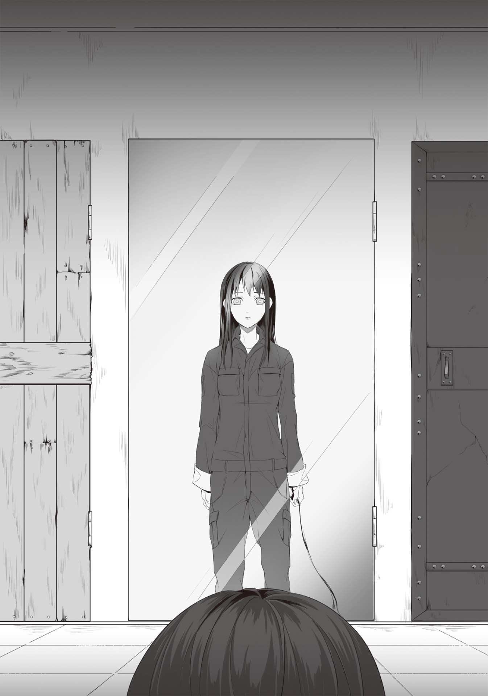
左にあるのは、木の扉。ドアノブが取れてしまったような穴があり、こっちから捻 ることはできないようになっている。
真ん中の扉は、鏡の扉。全身が映るほど大きい鏡がそのまま使われているみたいだ。これにもこっちから開けるドアノブはない。
右にあるのは鉄の扉。これには小さな取っ手のようなものが残っていて、頑張れば開けることができそうだ。
しかし、どの扉にしろ、試しに一度開けてみるという行動は恐ろしい結果を生むだろう。
「白の間」のエレベーターのように、即刻死が訪れるトラップが仕掛けられているとも考えられる。
それに脱出のためのヒントは、すでにもたらされている。
『今最も必要な者に、正しい飲み物を届けろ』
ただそれが扉にどのように関係するのかは、まだよく分からない。
◇ ◇ ◇
急に音がした。ガシャンというガラスが割れる音。
ワタシたちは音がした方へ歩いて、その原因を見た。
瓶の下にあったライトには、仕掛けがあったようだ。瓶の下には強い力で瓶を弾き飛ばす仕掛けが内蔵されていた。その装置のせいで、瓶が割れて飛ぶ。もちろん中の液体はどこかに飛び散る。
壁に掛かれば、壁からは白煙が上がって溶ける。
「早く、近くのを寄せないと」と紫子。
桃香とワタシが必死になって瓶をエレベーターのある柱の反対側へと運ぶ。だが、運んだ所で、床の装置は止まらない。じっと床に座っているわけにもいかなかった。
瓶の一つが、ワタシたちの方に飛んでくる。ワタシや紫子、桃香は上手く避けた。でも、千夏はすでに避ける元気もなく、足に酸の飛沫がかかった。
「ぃッ────」
声にならない叫びが上がり、千夏のふくらはぎから煙が上がる。強い酸を触るわけにはいかず、千夏も煙が収まるのを耐えるしかないみたいだった。じっと痛みを耐え続け、ジュクジュクとした血が流れても、何もできない。
ワタシにも、誰にも。
千夏はゆっくりと床に倒れ、壁に背を預けて倒れ込んだ。
次第に、ワタシたちも足にも力が入らなくなってきた。
もうこのまま動かず、ここで謎を考えるしかない。
体力は底を突きつつあり、これは一か八かの賭けだった。
ゴホンと千夏は咳き込んで、口を押えた。しかし、その手を見て、すぐに壁に手のひらを擦りつける。ワタシはその様子を見てしまった。
「大丈夫？」
「何ともないよ」
ワタシにそう答えるが、振った手は微かながら濃い赤に染まっていた。
「噓 だよ、もうヤバいのは分かってるんだよ」
ワタシは自分の体調すらよくない状況で、強がる千夏に食い下がる。
「どうして頼ってくれないの？ ねえ、なんでワタシには荷物を預けてくれないの？」
「......」
何も言ってくれない。
千夏は答えない。
「なんで......。なんで。千夏ちゃん......」
「だって、アナタは違うから。私が荷物を預けるのは、違う人だから」
「何を言ってるの？」
「私は大野香奈に。香奈は私に。多くの荷物を預けていた。私が本当に信頼して、本当に肩の荷を下ろすことができるのはあの人の前だけ」
千夏は、ワタシを突き放すように言った。
「あの日、私はアナタの肩で泣いた。それはとてもあの人が恋しくなったから、あの人の代わりを求めただけなの。私に必要なのは、アナタじゃないから」
「千夏──」
直後、ワタシは知らないうちに千夏の頰をぶっていた。
「赤の間」で叩 かれたとき、ワタシの顔も心も痛かった。今、叩く側になって思ったのは、ぶつ方も手も心も痛いんだということだった。
「──ワタシは、それでもいいんだよ。それでも」
千夏に縋 りつくように、ワタシは言った。彼女のためになら、なんだってできた。
だから──。
それでも千夏は首を振って、ワタシを拒絶する。
「ゴメン、レナ。アナタは私の『特別』にはなれないから」
千夏はそう言うと、受け身も取れずに床に倒れ込んだ。
みんなの体も、すでにウイルスに蝕まれている。その事実が全員の前へ、ゆっくりと姿を見せ始めていた。喀血も、咳も、熱っぽさも、時間はもうない。
特に、千夏はワタシたちよりも早く悪化している。
一時間というのには、個人差もありそうだ。
再び、千夏が咳をする。
もうそのときは、血を隠そうともすることはなかった。
「千夏ちゃん」
ワタシは彼女に駆け寄って、隣に座り込んだ。
もうこのまま死ぬのだろうか。
千夏に残された時間は、もうない。命の火は、もう消えようとしている。
「せめて......、せめてさ。自分の手で死んでやろうか」
と紫子は、ポケットの小瓶を取り出した。
それが唯一ゲームに、ウイルスに逆らう方法だとでも言うように。
しかし、瓶を開けようとする紫子を、千夏は必死に止めた。
「それだよ。まともな飲み物」
「どういうこと、これは毒でしょ？」
千夏は首を振る。
「それは、この場所で唯一、毒と書かれていない飲み物だから。ゲホ......」
千夏の口からは、咳とともに血が吐き出される。
「喋 っちゃダメだよ。そんなになっているのに......」
「私が一番早く進んでいるみたい。だから、ここで喋らせて、お願いだから。小瓶の中身は毒だった。そして使い道もないのに、ゴホ......持たされてた。ここで使うためだったんだね。それが毒なのは、こっちの世界での話で......つまり、全てが反対になる世界ではそれは毒じゃなく、正しいワクチンになる。一番必要としてる自分自身に」
「鏡......」
紫子は納得したように、鏡張りの扉に自分の小瓶を差し出した。
すると、鏡は突然光り、そこに紫子が映った。鏡の中の紫子は瓶を捻り、それを飲み干した──鏡面のように加工しただけのモニターだったようだ。映像のあとでドアは開いた。
地上へと通じる階段を示し、階段を紫子は上って行く。そこでドアは静かに閉まった。
桃香も同じように瓶を差し出し、上へ。
残ったのは、ワタシと千夏だった。
「千夏ちゃんが行って」
ワタシの瓶は、赤の間で死のうとしたときに失くなってしまった。もう手元に瓶はないから、ワタシは助からない。
ここで助かるべきは、あんなことを言われても千夏だと思った。
すでに命尽きようとしている千夏には時間がないから。
彼女の体を抱きかかえて、鏡の前へ。けれど、千夏の手は瓶をワタシに差し出して、自分は床に崩れ落ちた。
「もう立つこともできないよ......足も血が出てる。力が入らない。階段なんて上れない」
「そこまで行ったら、みんなが助けてくれるよ」
千夏は、何も言わなかった。
◇ ◇ ◇
とある夜のことだった。
いつものように、高浪は私の牢の前にやって来た。ただ、そのときは少し様子が違っていた。私のことを牢から出すと、無理やり教官側のスペースへと引っ張って行った。ああ、結局いつもどおりにやられるのか、と思っていた。
だが、その日は本当に違っていた。
私の前に一台のモニターが置かれて、スイッチが入れられる。そこに流れたのは、大 野 香 奈 の姿だった。それは今の大野香奈なのだろうか、あのころよりもどこか大人っぽく、成長して見えた。
彼女は鎖で縛られ、ボロボロの筵 の上に座らされていた。
『私は、死ぬことになんの恐怖も覚えません』
大野香奈は、鎖に繫がれ、刃物を突きつけられても堂々としていた。
男たちの邪魔な声が入る。
『そんなことは関係ない。オマエが死んで、オマエのとても大切な人の心が折れればそれでいいんだからよ』
『チナツ......』
彼女は今にも泣きそうな、壊れそうな声で名前を呟 いた。
深い絶望に落とされたような顔をしていた。その目は濁って、もう何も映ってはいないかのように。
そして、銀色の刃が煌 めく。
──。
どんな暴力よりも、どんな性的な虐待よりも、痛い映像だった。
彼女の首が斬り落とされた瞬間、私の心もポトリと牡丹の花のように落ちて枯れた。どんなにレナのことが大事でも、どんなに仲間を思っていたとしても。
私の心は、すでにどこかの地面と同じ色に濁ってしまっていたんだから。
もう、私は死んだも同然だった。
「ゴメン、香奈」
縛られて、朝まで穢 された。
初めて、死にたいと思った。
来なければいい、香奈のいない明日なんて。
◇ ◇ ◇
最後の仕掛けがそこで発動する──天井がゆっくりと迫ってきた。
このまま私たちを押し潰そうとしているようだ。時間はなくなっていく。
千夏は、一緒に死ぬのを許してはくれない。
必死に手を出して、瓶を差し出した。
また大きな咳が千夏を襲う。血と肉片が口から零れた。素人目でも分かるほど、彼女の寿命はまさに尽きようとしている。それほどに酷い喀血だった。
彼女の作業着をめくれば、腹部には赤黒い痣ができていた。
「私の......体は、もうボロボロだったんだね......行って、レナ......私たち の分まで」
ゆっくりと伸ばされた手から瓶を受け取る。そして、すぐに彼女の手は力なく地面に落ちた。落ちた手は、ぐっしゃりと床で潰れた。腕の中の筋肉までがグズグズに崩れてしまっているみたいだ。
「......生きて......」
「分かった......」
ワタシは千夏の手から瓶を取った。振り返ることなく、鏡に瓶をかざした。
ドアにはワタシが笑顔で瓶の中身を飲み干す様子が映っていた。でも、それはやっぱり鏡の中の自分だった。正反対の自分だった。
鏡の前のワタシは、ただ泣いている。
ワタシは、反対のワタシが映るドアを見つめている。映像はすぐにただの鏡へと変化して、倒れている千夏が一瞬だけ映り込んだ。彼女は口から血を流し、倒れたままで動くことはない。
涙の膜で、前が見えない。
ドアが開いたのも、その先の暗い廊下が見えたから分かっただけだ。
ワタシは駆け出した。
後ろを見ることなく、階段を駆け上った。
とめどなく溢 れ出てくる涙で、階段はまったく見えなかった。それでも必死に走るしかなかった。一心不乱に、何がなんでも。
ドアが閉まる音で、千夏との別れを感じた。
もう二度と会えないことを悟った。
階段を駆け上がる最中、一段を踏み外してしまう。手も肘も階段の角に酷くぶつけ、頰には擦り傷ができた。ひりひりと痛みが走った。
でも、そんな体の傷は大したことない。
それよりも痛かったから。
辛かったから。
「千夏は？」
階段の途中で、紫子はワタシに尋ねた。
答える気力は、もう残ってない。ただ首を横に振った。
紫子は後ろを振り返り、薄く目を閉じる。
彼女も、桃香も涙は流さなかった。もう誰にだって悲しむ気力も残っていないと言わんばかりに。ワタシだけはまだおろおろと泣いていた。
裏切られた悲しみも。彼女を助けられなかった悲しみも。
どうすることもできなくて。
ただ涙を流していた。
「そっか」
ワタシの涙で、分かってくれたみたいだ。
ワタシは袖で、溢れ出る涙を拭った。
階段を駆け上る。でも、もう生きる希望なんてない。
もうどうでもいいんだ。
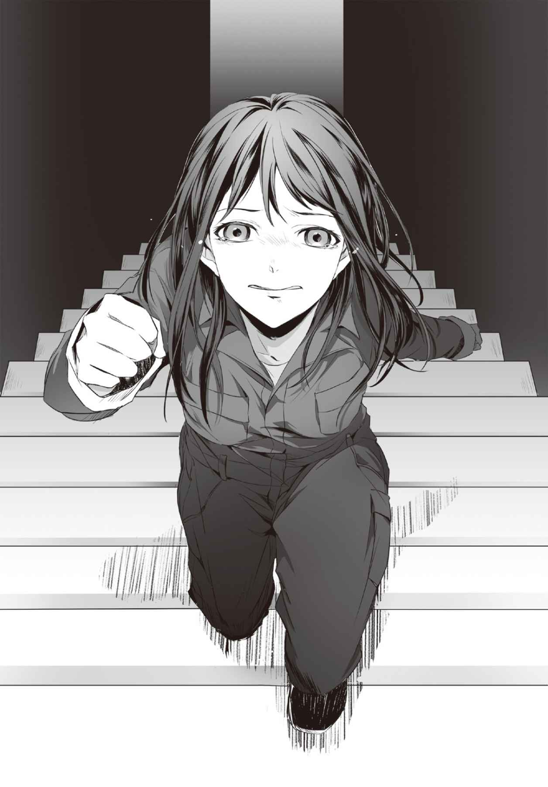
だからもう、死んでしまおうと思ったんだ。
裏切られた絶望も。想いの叶わない悲しみも。
全てを捨てて、逃げるために。
◇ ◇ ◇
私はこの「黒の間」で最期の時を迎える決心をしたが、体の中で『死』が暴れ、痛みが全てを超越して体を支配していた。
死ぬってのは痛いんだと思いながら、全ての痛みが消え、死んでいくのを願っていた。
その瞬間は、思っている以上に長い。
「おい」
唐突に男の声が聞こえた。
「痛むか？」
聞いたことのあるような声だったが、どこで聞いたかは思い出せない。
私は何とか力を振り絞って「はい」と答える。目を開いてみれば、ウイルス災害のときに着ているような防護服に身を包み、顔も防護マスクで覆った人間がそこに立っていた。声の低さからすると男性のようだが、顔は見えない。
彼は、防護服の中から小瓶を取り出して、また別の所から注射器を取り出した。
「すでにお前の状況からすると、助かる見込みはないだろう。だが、この薬で痛みを取ってやることはできるはずだ」
彼は私の袖を捲り、防護服の手袋を着けたまま手際良く注射をする。
だんだんと痛みは引いて、私はゆっくりとそのときが来るのを実感する。
「ありがとう」
声になったかは分からないが、私は彼にお礼を言う。
彼もまた、「どういたしまして」と言った気がした。
──。
────。
あれ？ なんでここにいるんだろう。
私はまたいつかの草原を走っていた。
夕日はいつまでも沈むことはなくて、誰も私たちの後ろを追ってくることはない。
──私たち？
私の手は、誰かの手を握っていた。
その手は、温かくて、とても懐かしい心地がした。
「どうしたの、千夏」
私は、香奈の手を握っている。
あの日の草むらを、二人で走っていた。
「早く、行こうよ。ずっと待ってたんだよ」
「待ってた？」
走っている先に、もっと多くの懐かしい顔が見える。
そしてその後ろには眩 しい光が見えて、幸せな場所に行けるのは知っていた。
「もっと先になるかと思ったけど。来ちゃったらしょうがないか」
香奈に手を引っ張られて、私はやっと......。
「行くよ、千夏」
彼女は、駆けだしてしまう。
「香奈」
「ん？」
彼女が止まると、私は彼女の体を全力で抱きしめた。
彼女の温かさ、彼女の匂いに、涙が込み上げる。
「やっと、会えた」
やっと終わったんだ。
私は、そう思った。
◇ ◇ ◇
なんとか力を振り絞って階段を上り終え、ワタシと紫子、桃香は「青の間」へと辿 り着いた。しかし、毎回、アナウンスをしてくれた不気味な声はどこからも聞こえない。
ただ残された青色が、ここの名前になるのだろうと思っただけだ。
階段を上り終えた先は、打って変わって四角い部屋。
広く、様々な調度品の置かれた、しっかりとした部屋だった。
ソファやテーブルに、本棚や茶器の棚まである。床は、青い大理石でできていて、壁紙も青い花の模様があしらわれている。他のフロアとは違って、ここだけは平和な空気が漂っているようだ。
一角にはルビンの壺やジョーカーの仮面を納めた棚などもあり、ここがジョーカーゲームを行っていた組織の施設だというのは間違いないらしい。
そして、私たちを出迎えたのは、異様な出で立ちの人間だった。
ただ真っ白な防護服を着た人が、両手を広げて出迎えた。
「ようこそ、ここがゴールの『青の間』だ」
白い防護服の男──声が低く、どこかで聞いたような声だった──は、人差し指でこのフロアに辿り着いた人数を数えて、首をガッカリしたように前に倒した。
残った人数が少ないと思ったのか。
彼の行動は、とても残念そうに見えた。
だが、気を取り直したように顔を戻すとそのまま歩きだした。
「詳しい話は、もう一人の女から聞いてほしい。それじゃあ、俺は少し様子を見てくるよ」
そう言って、ワタシたちが上がってきた階段を降りて行った。その先は、開くはずのない扉のはずだ。「黒の間」に戻ることはできないと思っていたのに。
だが、彼は階段を降りると簡単にドアをこじ開けて、「黒の間」へと入って行った。
「なんで」
ワタシは、その様子が信じられなくて叫んだ。
「なんで、あの人はあんなに自由に。ワタシたちが、ここまでゲームで上がってきたのは、なんだったの......」
「レナ、あまり叫ぶと......」
「なんでなの！ なんで、なんで！」
すぐに咳が込み上げてきて、咳と血が口から零れた。
体の中で鋭い痛みが走り、まるで刃物で刺されたように痛い。ゲホゲホと咳き込めば、血だけじゃなく肉片が混じる。
負けたくない。
でも、何もできない。
ワタシは悔しさで、手を床に叩きつけた。
すぐに放送が聞こえた。音量の調節が苦手なのか、できないのか、彼女は相変わらずの爆音での放送で話を始めた。
『今から、そっちに向かうわ。すぐに、ワクチンを持ってね』
女はそう伝えると、それまでよりもとても乱雑に、ブツリという大きな音を残して放送を切ってしまった。
ワタシの中の死が、鎌首を持ち上げ始めていた。
千夏の瓶を受け取って、階段を上がってくる黒崎レナ。
女は、その様子を呆 然 と眺めていた。女の考えでは、あの子と千夏は両方一緒に上がって来るものだと思っていた。
レナも相当優秀な子だと、この女は判断していた。
だが、女にとって想定外のことが起きていた。
レナがダメでも、せめて、千夏は上がって来るものだと想定していたのだ。
女は口の中で強く奥歯を嚙 み、手を放送の装置へと叩 きつけた。備え付けられたモニターを薙 ぎ払う。
地面にぶつかったモニターは、画面が割れて真っ暗になった。
怒りに震える肩を何とか鎮め、こうなった誤算を女は考える。
この施設の監視カメラの画像から、千夏の姿だけを抽出して、その様子をつぶさに観察し始める。そして女は、今朝の千夏の様子を見て愕然とする。
レナが道具を落とし、それを千夏が庇 って、道具をレナへ。
道具を大切にしろと高浪が千夏を蹴り飛ばす。
「これか」
女は映像の流れるモニターを、持って床に叩きつけた。
千夏は、内臓に大きなダメージを負っていたのだと推察された。
開発されたウイルスは、内臓を腐らせ、体の中を破壊し死に至らしめる。内臓が弱い者や腹部の手術等で傷を負った者は、進行する速度が速いという結果があった。
千夏は今朝から内臓に深いダメージを負っていた。
病院の正しい治療を必要とするレベルのものを。
そして、指導教官・高浪大介のプライベートな記録から千夏が変わった兆しを見つけた。
今から一ヵ月ほど前のこと、大野香奈の処刑の映像を見せたという記録があった。
その後も、彼女のささやかな教官への反抗は続いていたようだが、明らかに数が減っていたと記録には残っている。高浪の言葉は、酷く乱雑だった。
体にしか興味のないような最低な男が、一人の女に固執して心まで壊すとは。
また強く、手を叩きつけた。
静まることのない怒りで、女は大きな叫び声を上げて手を握り締める。
手には、大切な金属片を握りしめたままだった。力を込めて叩きつけ、握りしめた手。指を開くと、横一文字に切り傷が刻まれていた。深く肉が切り裂かれ、手の中には血が溢 れていた。鮮血に、銀色のタグが染まっている。
「誰が悪い」
女は、声に出した。
「誰が悪いんだ」
レナが悪い。
高浪が悪い。
だが、また遅くなった自分が悪いのだと女は結論を出した。
「青の間」にいた男から無線が入り、レナ・紫子・桃香の三名が「青の間」まで辿 り着いたと連絡を受ける。状態はかなり悪いという報告を受けた。
助かることができるか、その判断は難しい状態だと言った。
「今、行く」
簡素な返事をして、無線を切ろうとする。
だが、男はその声を察してか、静かな声でこう付け足した。
『あの子のことは残念だが、俺はその最期を助けてやることしかできない。そしてこれからのことは、全てお前に任せるという方針は変わらない。分かってるな』
「ええ、約束どおりにしましょう」
『そして、俺の希望どおりに、スイッチを』
「分かってる。分かっていますよ」
女は無線をしまうと、握っていた金属片を額に当てた。
大事にいつも持ち歩いているドッグタグだった。ボロボロになったドッグタグは、もはや薄い金属のプレートだけになってしまっていた。
それでも手元に残しておきたい、大切なものだから。
一度はそれを手放しながらも、それは「あの人」を忘れることのできない大切なものとして、女の手元に戻ってきていた。
額にそれを当てるのは、いつもの習慣のようなものだった。
何かあるたびに、ずっとそうしてきた。
女はいつも悲しいことがあるたびに、辛いことがあるたびに、そんな行動をするクセがあった。そうして祈り、謝ることにしているのだ。
いつしか仲間に尋ねられ、女はこう答えた。
「妹たちに、相談してるんだ」
でも、今していたのは、懺 悔 であった。
千夏を救うことができなかった後悔を、妹たちに捧げていた。
「すまない」
女はドッグタグに呟 いた。
苦しそうに、悲しそうに。
「彼女を生きて外に出してやることができなかった」
女は、大粒の涙を流していた。
大粒の涙を拭うことなく、床にまで大きな雫 を落とす。だが、すぐに制服から白いハンカチを取り出して顔を拭った。肌色のファンデーションがハンカチに付き、化粧も崩れてしまったが、それを気にすることはなかった。
そんなことは、もうどうでもいい。
「だけど、きっと彼女はお前の元に逝ったんだろう。だから、天国で幸せになってほしい。私は、この世界で修羅の道を行く。きっと死んでも、お前たちの所にはいけないだろうが、それでも許してくれ」
またドッグタグ──《Ｓ．Ｏ》と書かれたそれをポケットにしまう。
そして、特効薬を手に部屋を出た。
シルバーのアタッシュケースの中には、簡単に薬を打つために開発された、銃タイプの注射器が十本入っている。さらに、予備の薬が十人分。だが、その大半は無意味になった。
これほどまでに助かる人数が少ないのか。
そう思っていた気持ちは、すでにどこにもない。
彼女に悲しんでいる様子は微塵も見えず、彼女の目はもっと先にある何かの方へと向けられているようだった。
「黒崎レナ......か」
新しい希望の芽を、見据えていた。
「あとは、このゲームに始末をつけるだけだ」
三人とも足に力は残っていない。
すぐに来ると言っていた放送の女の人を待っている間でさえ、立っていられなかった。
全員が床に座り込んでいると、後ろから銀色のケースを持った女の人が現れた。
白い、地下にいた者たちと同じような軍服。ただ胸に描かれたエンブレムは、他の全ての者よりも装飾され、輝かしさと威圧感を覚える。
真っ白な靴をカッと鳴らし、女がワタシたちの前に立った。
白服の多くの者は腰に帯刀していたが、この人は何も持たず、ただ白い服を着込んでいるだけに過ぎないのに、あの大島よりも立派な人間のように見えた。胸の辺りまで伸ばした鴉 の濡 れ羽のような髪も、白い人形のような顔も、この人を正しい人間のように見せている。
「ここまでよく頑張った。さあ、薬を」
針のない、銃のような注射器を一人に一つずつ配った。
「私の名は、サエ。これで君たちのウイルスを消すことができる。二の腕の内側に押しつけて、引き金を引く。それだけだ」
サエと名乗った女は、一本を例に取り出し、腕に注射する見本を見せた。
まだ他にも薬が用意されていたのは、もっと残ってほしい気持ちの表れなんだろうか。
ワタシたちはすぐさま腕に当て、トリガーに指を掛ける。一斉に薬を注射しようという所で、女は待ったをかけた。
ここで止める意味は理解できない。
「少しだけ待ってほしい。時間がないのは分かっているんだが、一つだけ注意がある。我々はウイルスを作り出し、同時に多くの動物実験と人体実験により治療薬とワクチンを作り出すことに成功しました。この薬は、一〇〇パーセントの確率でウイルスを撃退してくれる、必ずね」
「何も問題はないでしょう？ 早くしないと死ぬのよ」
紫子は叫んだが、女は少しも表情を変えずに手を前にかざす。
ゆっくりと「待て」とでもいうように。
「早くしないと死ぬという言葉は、適切ではない。今の時点での死亡率は、単なる確率の問題。その薬は、すぐにでも注射できる所にあるんだからな」
彼女は一瞬微笑んだように見えた。
そして一度手を叩 き、再度話を始めた。
サエの目が、まっすぐに三人へと向けられる。
「私たちは、さっきも言ったが、ウイルスを完全に消す治療薬の生成に成功した。しかし、これには多くの犠牲の下になされたものであり、かなり大がかりな実験の末にできたものだと言うことを知ってもらいたい」
「どういうことですか？」と尋ねる。
彼女は一度目を瞑り、再度全員の顔を眺めながら話し始める。
「薬の開発には成功したが、強いウイルスに勝つためには、どう足 搔 こうとも副作用を一緒に背負うしかなかった。その治療薬は効果もすぐに出るが、問題のある副作用もすぐに発現する。副作用とは異常なまでに高い致死率だ」
女の目が、ワタシの所で止まる。
「致死率は、五〇パーセント。これ以上、下げることができなかった」
部屋は静寂というよりも冷たくなった気がした。
まるで寒い風に、一気に部屋の音までが凍りついたようだった。誰も口を開くこともなく、正しい治療薬である薬を打とうともしない。ここまで生きて辿 り着いて、待っていたのは結局確率五〇パーセントで即死ぬという事実。
女の目だけが、動いて三人の様子を順番に眺めていた。
それも生存を祈る気持ちや、心配というものよりもどこか冷たく感じた。
冷たく、恐ろしいもののように睨 みつける。
しかし、ワタシはすでに決心を固めていた。
死のうと思っていた。
涙が、床に零 れる。散々流れた涙の川を、今もまだ流れ落ちる。
そんな人間に、覚悟はいらない。
確率の話も、犠牲の話も必要ない。
ワタシは左の袖を捲 り上げ、誰よりも早く右手で薬を打ち込んだ。
左手が熱く燃えるように痛み、次第に体の全体に広がっていった。体に焼けるような痛みが駆け巡るが、ワタシの頭の中は逆に冴 えていく。苦しいのに、頭は苦しさを味わえとでも言っているかのように。
ワタシが苦しみ出すと、紫子と桃香はさらに躊 躇 の色合いを強めた。
しかし、自分たちが血を吐くまでになると、ようやく打った。
苦しみだす、二人。
そして、痛みに座っていられなくなるワタシ。
熱い......、痛い......。
全身へと広がって大きくなる。
痛みが、ワタシの限界を超えてしまう。
脳がワタシの覚醒した意識に──
──急にストップをかける。
気が遠くなる。なっている。
なっていく──。
たぶん、
あとの二人も。
意識が──
──なくなる。
──────。
────。
◇ ◇ ◇
三人が床に倒れ、一〇分が経った。
今までの研究によれば、薬によって一度意識を消失した者も一〇分ほどで起き上がって意識を取り戻す、という結果が出ている。だが、誰も起き上がろうとしない様子を見る限り、誰もが手遅れだったか、副作用により死んだかでしかない。
床に倒れたままピクリとも動かず、誰の呼吸も戻らない。
「諦めるんだ......、分かってるだろう」
私は胸のエンブレムを握りしめ、天に祈る。
そして落ち着いた所で、地下に向かったであろう、あの男に無線を投げる。
「深 月 さん、戻ってください」
『どうかしたかい？』
いつもどおりの軽い声が返ってくる。まだ防護服を着ているらしく、声はくぐもって聞こえる。今ごろは、下の階でウイルスの変化のサンプルでも集めているのだろう。
「こっち、終わりましたよ」
『全滅か？』
「全滅です。では、引き上げます。もうここに用はありませんから」
『分かった。戻る』
私は無線を切ろうとした。
なあ──。
無線から急に、深月ナオトの声がする。
『残念だよ、いろいろと。君も残念だと思っているんだろ。千夏も、レナも、生き残らなかったなんて』
「そんなこと、いいので。アナタがそんなことを微塵も考えてないのは知っています。だから、早く戻ってください」
『了解』と返事をしたのを確認し、こっちから無線を切った。
深月は、人間よりもウイルスを愛している人だ。
息を吐き、深月を待った。
ゲームの最中に応援として呼んだ白服たちが、何人もうろうろと「青の間」を動き回っている。ここ、地上で作業しているのは「本隊」だ。そして、地下に入らせたのは偽の部隊であり、ただのスケープゴートだった。
目的は、彼らの処刑。彼らは元指導教官だ。その罪を償う死を、与える必要があった。
今回は、いい意味でも悪い意味でもゲームを搔き廻してくれた。その点だけは、今回最も評価できるポイントだと思う。
私はシガレットケースを取り出し、もう一度煙草に火を点けた。一度吸い込んで、大きく紫煙を吐き出す。ちょうどそこに、深月が地上直通のエレベーターから出てきた。この一階から噓 をついて電源を落としたのだから、電源をもう一度入れれば動くのは当然。
降りてきた深月は、まだ防護服を着込んだままだった。
「煙いぞ。また吸ってるのか」
「そんなの被っておきながら、煙いわけないでしょう。どうしてまだその防護服を着ているんです。私も深月さんも、すでにワクチンを接種しているはずですけど」
「あれだけウイルスの近くにいたんだ、絶対に保菌してないとも言えない。ヘリにも乗るんだから被っておいた方がいいだろう」
「分かりました。さて、帰りましょう」
「そうだな」
でも、
二人とも動かない。
深月は不意に倒れている三人を見て、そっちに近づいて行った。
私もまだ正確な死の判断をしたわけではなかった。可能性がないわけではない。
「お前も」と深月は振り返らず言う。
「諦めたくはないみたいに見えるけど。気のせいかな」
「深月さん、黙ってください。もう......、諦めた所です」
「いいや、しっかり調べないと」
深月は紫子と桃香の脈を計り、首を振って立ち上がった。
最後にレナの首筋に指を当てた。レナにだけは何度か脈を確かめて、彼はようやく立ち上がった。
「まだだ」
深月が振り返り、手をギュッと握り込んだ。
「この子は、生きてるようだぞ。少し待とう、彼女が覚醒するまで」
「ああ、そうですね。
この子には......生きる意味がある」
深月はフッと笑った。
彼はすでに桃香の体を抱き上げて、施設の外にいた部下に渡した。
私は紫子を抱き、同様に渡した。深月にしてみれば、彼女らの死体は重要な研究材料なのだ。このゲーム中にウイルスが大きく進化している可能性もある。特に恐ろしいのが、ワクチンが効かなくなることだ。それをいろいろなパターンで調べねばならない。
「お前が『生きる意味』なんて言葉を吐くとはな」
「......悪いですか」
深月は防護服の中からでも聞こえるような笑い声を上げる。
軽い性格の男だというのは分かるが、私はどうにも軽薄さを感じてしまう。
「感傷的にでもなったか。大野香奈を助けることができなかったことも、大野真希を助けることができなかったことも、そして今回の赤沢千夏のことも。誰も助かることがなかったからな。だとしても、あまり感傷的になっては困るぞ。ここからが大きな仕事になるんだからな──」
「──大 野 紗 枝 」
大野紗枝──私の名前だ。
大野香奈と、大野真希の姉だ。大野家の長女である。
香奈がジョーカーゲームの合宿に持って行ったバッグ。あれは、元は私の持ち物だった。だから、ドッグタグには《Ｓ．Ｏ》のイニシャルが彫ってあった。
カナ（Kana）・オオノ（Ono）ではなく、サエ（Sae）・オオノ（Ono）のイニシャルが。
あのときに赤沢千夏は、香奈から姉を探していると聞いていたはずだ。
それは同じころにゲームに参加させられた真希ではなく、その上の姉、すでに一年以上も施設に行っていると説明されていた私、紗枝のことだった。
私の過去は、香奈が聞かされた最悪なものとはまったく違う。
あの男──憎むべき敵・滝沢は、香奈がゲームに参加させられた当時のクラスの担任をしていた。あの男は、香奈に絶望を与えるためにあんな噓をついて、動揺を誘いゲームに敗北させた。
優しそうな顔とは真逆の、恐ろしい素顔を持った嫌な男だった。
アイツが香奈を殺したようなものだ。
すでに私は、アイツを──。
「感傷的ではありません」
「そうかな？」
深月は、そんな言葉を吐く。何故か私の心を見透かしてくる。
どんな人間よりも、心を隠して生きてきた。真実の気持ちを隠すのは、得意分野のはずなのに。
「じゃあ、その気持ちをなんて言うんだ？」と深月は笑う。
「ちょっとした懐かしさですかね」
「俺には、そうは見えないけど。やっぱりどこかに愛があるんだと見えてしまう」
彼は左の胸のエンブレムを差す。
「これと同じようにさ」
赤い二人の天使。
これは、妹を意識して作ったものだ。もう戻ることのない、天国へと逝ってしまった妹たちのことを忘れないために。天使となった真希と香奈、これらは私の復讐の旗印でもあるからだ。これに関しては感傷的と言われても仕方がない。
でも──。
「それとこれとは違います。分かりましたね」
怒りを混ぜ込んで睨みつける。
私は武器を向けない。嫌いだからだ。
でも、だからこそ武器に負けない凄 みを身につける必要があった。
「すまない」と深月が折れ、会話は終了した。
本当の私の過去は、それよりも異質なものだった。
今思い出すと、酷い人間だったと思わされる。
当時、高校で学校の生徒会長を務め、クラスは元より学校全体をまとめ、学力においても最高学府への切符を持っていたようなものだった。学校随一の秀才とも言われていたのだから、間違いない。だが、私のクラスは『ババヌキ』による教育強化プロジェクトに指定されたのだ。
でも、それは簡単に勝利できるものと確信した。
クラス内での私の地位は高い。特に女子からの信頼は厚く、最初のゲームで簡単に女子全員から言葉巧みに契約を取ることができた。
同時に、その地位にいたがゆえに、敵もいた。
クラスの副委員長を務めていた男子が敵にまわり、クラスの人数を私と二分し、大量契約者同士の戦いを一回戦から繰り広げることになった。おそらく強化プログラム史上最短の勝負として記録されていただろう。
最後も、酷く単純だった。
持ち札は私が二枚で、相手は三枚。
もちろん相手がジョーカーを持っている。そして、このときカードを引くのは、私。
確率は、三分の二で私が勝つ。当り前だが、そんなことは相手も気付いている。つまり、ここで私に引かせなければ、負けが確定する局面だ。
だから、私はそれを言葉にした。
「ここで、私にジョーカーを渡さなければ、負ける」と。
対戦相手が言葉にすることで、状況に気付かされると相手の心は動揺する。
彼は不安になったのか、一瞬だけジョーカーに目をやった。そして、それからカードを切ればよかったが、そのまま私にカードを引かせた。単純なミスだった。
私はジョーカー以外のカードを悠々と選び取り、ゲームに勝利した。
史上最高の記録と持てはやされ、私はそのまま大学へ飛び級で進学を許可された。
まだ私以外に誰も為しえていない悪魔の記録だ。
「──ババヌキで勝ち上がった勇者さまが、そのまま日本国内でトップの頭脳を有する大学の優秀な革命家を簡単にまとめ上げた。そして俺らをここまで連れてきてくれた。感謝しているんだよ、俺は」
深月ナオトは、私を褒めた。
だが、そんなものは私に何の意味も持たない。必要なのは、優秀で行動力のある部下というだけ。その頭脳以外に、彼には価値がない。人として最も価値を持つのは、同じ血を持った姉妹だというのに。
誰も私の隣に立ってはくれなかった。それまで生きてくれなかった。
わざと負けてまで矯正施設に入ろうとした香奈。
香奈を追って、大島の手下になった真希。
そして誰よりも他人の力になろうとした千夏。
香奈に優しくしてくれた彼女のことをいつしか、他人として見られなくなった。
馬鹿だった妹のことを、あんなにも大切にしてくれた彼女のことは、どこかもう一人の優秀な妹のように思えて仕方ない。
しかし、みんなは愚かにも人を選ぶことをせずに、絶望と死の坂を転がっていった。
真希は、あの大島に殺された。
香奈は、施設で無残に斬首された。
千夏は、ゲームで生き残らなかった。
そして千夏が妹のように可愛がっていたレナだけが生き残って、ここにいる。
人生とはなんて思いどおりにならないんだろう。どれだけ必死に行動した所で、思わぬ誤算が生まれ、歯車は狂う。彼女らを助けるために優秀な手下を集めたにもかかわらず、運命のスピードは想像以上の速さで進んでいたようだ。
でも、まだレナは生きている。
「私は、革命を起こしたかったわけじゃない。みんなにそれしかないと説得されただけです。でも、これで世界からこんなゲームを抹消し、新しい教育システムを作り出せるなら、私はそれでいいと思います」
「でも、世界が変わらないとしたら、世界に汚名を残すのは......」
「私でいいですよ。世界を変えようとして、世界を滅ぼした汚名を背負っても構いません。全てが敵に回ったとしても、それでもいいんです。世界には、どんなことがあっても変わってもらわないといけないので」
私は、そう言って黙った。
レナが大きく咳をし、口から液体を吐き出した。それはただ胃から透明な液体を吐いただけで、血が混ざってはいない。毒を外に出したいという体の防衛反応だ。
「やっと、目を覚ましたね」
深月が彼女の体を抱き起し、水を飲ませた。
しかし、再び水を戻す。まだ吐き気が強いらしい。
「持っていたらいい。すぐに喉が渴くだろうし」
「..................だ？」
レナが何かを呟 いた。
私にも、深月にも聞こえなかったようだ。
「ん？」
深月が聞き返すと、彼女ははっきりと答えた。
「......死ねなかったんだ」
「死のうとしてたのか？」
私は彼女に問い掛ける。できるだけ優しく。
「もう、千夏ちゃんも死んじゃったから、半分の確率で死ねるなら。それで死んじゃえばよかったのに」
「だけど、オマエは助かった。どういう意味か分かるか」
私の言葉に、彼女はゆっくりと首を横に振った。
「生きろと言われたんだろう、千夏に」
私は静かにレナの横にしゃがみこんだ。
「でも」と深月が不要な言葉を吐く。
「たぶん、キミが助かったのは誰よりも早く薬を打ったからだと思うけど。死のうと思っていたから、致死率五〇パーセントは怖くなかったんだろう？ だからだよ」
「深月さん！」
「ああ、分かった。要らないことは言わない」
「すまない、結構軽い人なんだ」
私はレナに向かって微笑んだ。
けれど、彼女の目は私を見ずに逸らした。このゲームを仕組んだ悪役だとでも思ったのか。でも、私はレナの手を握って、しっかりと言葉を紡ぐ。
「私は、大野紗枝という」
「大野、紗枝？」
「知らないことだろうけど、千夏には以前にオマエと同じくらいに大切にしていた人間がいたんだ。私は、その友人の姉。妹は助けられなかったが、千夏を助けてやりたくて、ここに来た」
と、説明したが、事実はそれだけではない。
私には、あったからだ。
自分自身が強く感じた、千夏への「恩」というべきものが。
◇ ◇ ◇
白服の部下たちが集まってきて、レナの心拍を計り、慎重にソファへと体を運んだ。
ここにいる白服たちは、中にいた奴らとは別の仕事を任せてある。救急の分野などから引き抜いた精鋭たちだ。
大切にする人間を選び、それ以外はそれ以外として処理する。
それが私の生き方だ。
強く生きようと変わった、私の生き方だ。
千夏と香奈の最後のゲームを見たとき、馬鹿みたいだと思った。
一年前、二人が通っていた学校での合宿。その最後の勝負は、女子三人それぞれの思いがぶつかり合うだけのくだらないものだった。好きな男の子を地獄に送ったという無意味な自己憐 憫 と、ゲームを憎む香奈の怨恨だけがぶつかり合う。
そこに何の目的もなく、ただ生きたいと願う千夏が立ち向かった。
しかし、彼女が憎しみしか持てなかった香奈の心を解きほぐしてくれたのも真実だ。
初めに勝ち上がったのは美奈子という少女だったが、彼女は結局香奈の意思で生かされたに過ぎなかった。一度は勝ったものの、香奈に真に勝利することができないままゲームを抜けて行った。
そこから、香奈と千夏の勝負が始まる。
相手がどういう駆け引きをするかを読む、心理戦。
カードを伏せ、相手にジョーカーを引かせる勝負だった。
だが、それは最初だけ。
だんだんと私は二人の心理までを考え、そこに何があるのかを一生懸命に考えた。
二人がどう思って、カードを引かせたのか。
香奈は、他人のことを信用しなかった。そして、千夏についても、マヌケな部類で信用に値しない人間だと思っていただろう。自分より劣る人間は、簡単に言うとおりのカードを引いたと思った。しかし、千夏は、香奈が思うような人間ではなかった。
千夏は、香奈を信用にたる者だと確信していたのだろう。
だからこそ、彼女は全てを信じて勝った。
赤沢千夏の考えは、香奈の考えを一新した。
同様に悩んでいた私の心も晴らしてくれた。
だからこそ、香奈の恩人であり、私の恩人でもある千夏を助けるためにここにいるのだ。
しかし、助けることはできなかった。
全ては手遅れだった。
◇ ◇ ◇
大学在籍中、私は秘密裏に多くの仲間を募った。
比較的優秀な生徒を大量に勧誘し、新しい政府を作ることもできる人材を大学の内外から幅広く集めた。それが今の新政府の基盤となっている。
多くの人間は、平和的な革命。選挙での革命を考えたが、実質不可能と判断された。
日本人の学力が下がり続けた現在、簡単に現政府に賛同しかねない人間に選挙を委ねることはできないと。ゆえに、クーデターを起こすしかなかった。
国会中に議事堂を占拠し、今の教育システムを作り上げた人間を麻酔銃で捕獲。
彼らはゲームを行うことで多くの人間を恐怖に陥れ、多くの人間に死を与えた。それを許すことはできないと、彼ら自身に矯正施設でのゲームを強制的にプレイさせた。
多くの政治家がゲームで死に、汚らしくゲームで生き残った者も一人残らず処刑した。
簡単な理由だ。おかしな政治の責任を取ってもらったに過ぎない。
それ以外にも多くの人間も処理し、世界は変わった。
今の所は、という条件付きで。
でも、まだ足りない。世界はまだ、新しくなる。
そのための、ピースを集めねば。
それが、矯正施設の解放だった。
全国各地様々な場所に、矯正施設というものが作られているのは、日本人ならば知っていて当然のことだった。ただ誰もその正確な場所を知らないだけで。
私たちはその全てを調べ、ことごとく潰してきた。
誰が生きていて、どれだけ死んでいるか。断片的な情報をも拾い集めて、何とか全てを調べ上げたのだ。
「いろいろな情報を集めた。最も信用できる情報源から、香奈はすでに死亡し、真希もその後絶命していたことが分かった。まだ生きている私の大切な人は、もう千夏しかいなかったんだ」
「でも、その千夏はワタシを要らないって......知らないって」
レナは、再び目に涙を見せた。
この子は悲しいのだ。
妹を失った、私と同じように。
「そうだな。本当に愛している者がいるなら、それはかけがえのない者のはずだ」
「......」
「千夏は、本当にオマエが大切だったんだろうな。そんなことを言って、生かすほど」
私は、この子を見捨てたりはしない。
「でも、私はこうも思う。その人以上に自分を愛してくれる人がいるなら、一度その優しさに触れてみるのもいいんじゃないかと。所詮は、代わりだ。でも、いつかその人が本当に大切になることだってあるんだ」
「......」
レナは何も言わなかった。
「私も妹を失った。私に千夏の代わりは務まらないだろうか？」
彼女が、生かしたこの子を。彼女が、認めたこの子ならば。
いつの日か、世界を変えてくれるかもしれない。私たちが正しいと信じている世界よりも、もっと素晴らしい世界を創り上げてくれるかもしれない。私にはできないことをやってくれるかもしれない。
レナはそっと私の手を取った。今は代替物でいい。
いつか、本物になればと。
そう、願うばかりだ。
◇ ◇ ◇
「青の間」を出ると、そこには広い青空が見える。
「空だ」
レナは眩 しそうにしながらも、必死にその青を見ていた。
太陽の光に、目をパチパチと瞬くレナ。すると、涙が一つ零れ落ちた。
「空......だ」
涙ぐんだ声だった。
レナには、久しぶりの空のはずだ。
ずっと、待ち望んでいたんだろう。このときを。
建物の出口の横には、木を切り倒した小さなスペースがあり、そこに私たちのヘリコプター一台が置かれている。ヘリが飛ぶまでに、今少し時間が掛かると部下の一人が告げた。
他にもいた部下たちは二台のヘリで、すでに飛び立っていた。
「ねえ、もしかして黒と白って」
レナは、やっと自分から話を聞いてくれた。
彼女は、まだ久しぶりの空を見上げている。
「ああ、よく聞いてくれた。俺と紗枝がやっていた」
防護服のままの深月が説明するが、レナは彼がずっと防護服を脱ごうとしないことを訝 しんでいるみたいだ。
私は、奴の脇を小突く。
「おっと、これは今脱がない方がいいんだよ。結構な血を浴びてね」
「血を？」
「そう。君とも中で会ってると思うよ。大島のあとで説明したのが、俺だからね」
レナは一度ポカンとした顔をし、そしてようやく言葉を吐いた。
「じゃあ、エレベーターは使えたんですか」
「もちろん、あの中で大島と僕だけは起動のパスワードを知っていたし、この地上からだって電源を入れることはできる」
だが、深月は自分の階級を偽って潜入し、ウイルスに完全に感染したように見せかけた。
潜入に使った多くの部下は、他の矯正施設から引き抜いた元敵。私たちにとっては何の価値もない者たちだ。
「だとすれば、誰も死ななくてよかったんじゃ」
「いや、違うよ」と私は言う。
「優れた人間とそうではない人間──それを選び取る必要があっただけだ。これからの世界を新しく導くには、それがいいと思ったんだ」
「そんなの......本当に正しいんですか」
レナは悲しそうに、言った。
だが、私たちは違う。
「私たちは、それが正しいんだと本気で信じている。君が私たちの下で働いて、また違った答えがあると思ったら、それを実行したらいい」
それが私たちの組織全体の答えだから。
世界は、いつでも多くの犠牲の上に成り立っている。
大きな力によって作られた時代があって、小さな力が集まってひっくり返された時代もある。これでは駄目だと気付かされた時代があって、今の世界はできている。多くの血と涙と汗で、世界は作られているのだ。
それでも、まだ人間は失敗を繰り返し続けている。
人間の世界が続く限り、失敗は別の生き方を生む。
間違ったと気付くことが、違う生き方を作り出すことに繋 がる。
このゲームは、そんなことを気付かせてくれた。
今生きている自分は、死んでいった多くの先達の上に生きているということに。
昔、疫病で滅びようとする世界に、人は知恵で打ち勝った。薬やワクチンを作り、小さな病原菌に勝利した。幾度もの戦争で滅びようとする世界にも、天候不順の飢饉で滅びようとする世界にも。
人は考える力や作り出す力で、負けずに生きてきた。
これまでずっと、
そして、たぶんこれからも。
多くの人間を敵に回した私は、きっと幸せな死に方をしないだろう。
多くの犠牲の上に生きてしまったレナは、私の隣にいてくれるだろうか。今は、疲れてぐったりと隣に座っているが、これからの私を彼女はどう見るのだろうか。
各地へと派遣した他の部隊から、矯正施設解放の知らせが届いている。
厳命としてゲームによる解放を命じてあるがために、多くの死者を出しながらも各地数人の生き残りが地上へと戻ってきている。今の新しい世界を担ってもらう人間たちは、すでに自分たちのそばにいる。
そして──。
私はフウと息を吐く。
ここから私たちがすることは、過去の不要なものの清算だ。
地上の仲間に声を掛け、レナと深月はヘリコプターへと乗り込んだ。新しい政府の中心へとこれで戻り、他の施設からの人間と合流する。
そこから新しい世界が始まるのだ。
その前に、しておくべきことがある。
遠くに、灰色のビルの群れが微かに見えていた。あれをこの手で壊す。
白服の一人から、鍵の掛かったスイッチを渡された。小さく手が震えてしまう。弱い自分を隠そうと、手が真っ白になるほど強く、それを握った。
自分だけが持っていた鍵を差し、あとは捻 るだけだ。
また手が震える。
ただ捻るだけが、できない。
傍らにいる白服は、「どうかしました？」というように見つめてくる。
おかしくもないのに、笑いが込み上げる。自嘲だった。ここまで来て決めることのできない自分が情けなく、そんな小さい自分がおかしくてしょうがない。
「どうしたんですか？」
気付けば、レナが傍らに立っていた。
私はなんとか口を開く。
「──」
「えっ......」
レナのただでさえ色白の顔が、白く、青く、血の気が引いていく。
私の声をしっかりと聞き取ったんだろう。でも、彼女は聞き返した。
信じられないという驚きに溢 れている。
「世界を壊す」
自分に言い聞かせるように、もう一度呟いた。
この子が側にいる。それだけでなんだか不思議と心が決まった。どんなにこの子に嫌われたとしても、またこの子がジダイを創るんだと思った。
だから、やっと心を決められる。
鍵を捻る。
遠く真正面に、東京の新しいタワーが見える。
六三四メートルで、自立式電波塔として世界最高だと言われたタワー。
それが瞬く間に、オレンジ色の炎に包まれた。そして灰になる。炎は次々に高いビルを燃やし、壊し、爆発を生んでいった。炎が次第に赤くなるように、灰色のビルは黒く変わっていく。日本の中枢である都市が今、丸ごと消滅した。
レナは地べたにへたり込んでしまう。悲しみに支配された表情で、燃える街から目を離すことができないでいるようだ。
私は仲間に指示をして、レナを無理やりヘリに乗せた。
鋭い目で私を睨む、レナ。でも、それを私は甘んじて受けようと思う。
今、旧 い世界が、終わった。
この自分の手で。
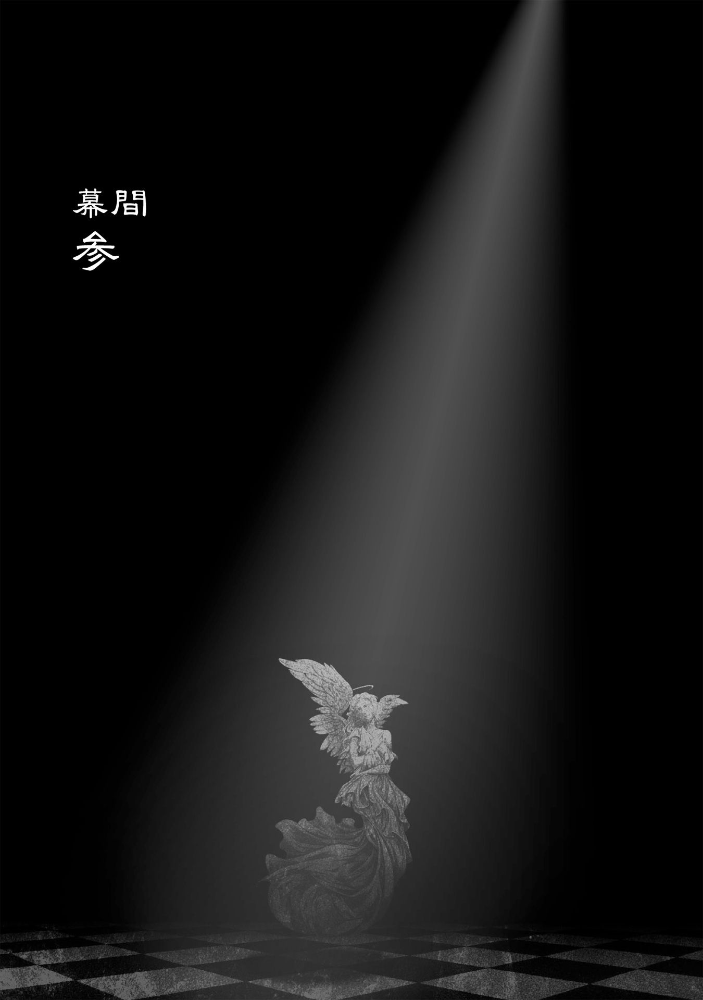
俺が秘密裏に運ばせた死体は、三体ある。
最終ステージまで残った紫子と桃香の死体には、ウイルスの威力を知るために必要なデータが揃 っていた。ゆえに二人の死は、俺にとって喜ばしいことでしかない。
だから、防護服はいい。
ニヤケ顔が止まらなくても隠せるんだから。
今だって、不気味なほどの笑顔をこらえているんだろう。誤魔化すのは大変だ。
もう一体あることは、大野紗枝には秘密だ。赤沢千夏の死体を運んでこれから切り刻むことなんて、アイツに知られたら困ることだらけだ。だから、秘密にする必要がある。千夏の死体には多くの利用価値がある。
内臓にダメージを負った人間に、ウイルスがどう進行するかなど解明することは山ほどある。だから、俺は見殺しにしたんだけど。
「これから」のためには、どうしても必要だ。
俺が「黒の間」に降りて行ったとき、天井が落ちてくる罠も、瓶が飛ぶ罠もすでに紗枝が停止させていた。俺は悠々と下に降り、まだ死んでいない千夏の顔を覗 き込んだ。
焦点の合わない眼球に、熱で赤くなった顔。口は何かを言おうと動いたが、聞き取れるような発声はできないようだった。
誰かが捲 って、戻した様子のある作業着の下は、腹部の内出血で赤黒く染まっていた。そして、意識は朦 朧 としながらもまだ生きていた。
心臓は動いていたし、息も微かにしている状態だった。
内臓がぐずぐずに壊れていく痛みに、額には異常ともいえる油汗が浮かんでいた。だが、苦しそうにしながらも彼女は生きていた。
俺がそのときに、特効薬を打っていれば？
助かった可能性はあったと思う。かなり低い確率だけれど、生き延びられたかもしれない。
だが、非常に有用な死体だ。
使わない手はないだろ？
それに、もう紗枝にだって媚びる必要はないと判断した。
俺が隠してきた計画は、もう最終段階を残すだけだ。
欲したのは、赤沢千夏だが。
手に入ったのは、それを凌 ぐ判断力と知性を持つ黒崎レナ。
その「血」だ。
俺は、その血で、全ての「始まり」となる。
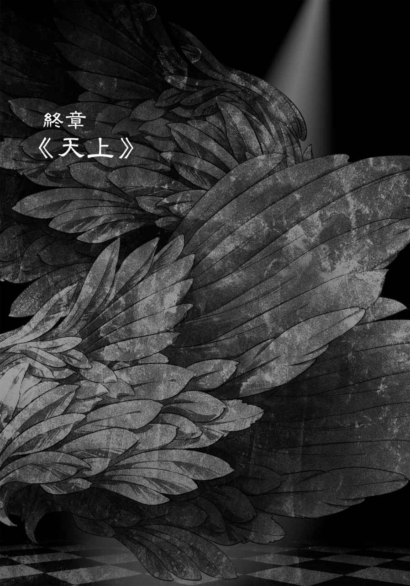
「ああ、予定どおり行ってくれたかい。じゃあ、さようなら」
深月さんが少し明るい声でそう言うと、無線機を部下へ手渡す。
ヘリには七人の人間が乗っていたが、さっきから口を開いているのは深月さん一人だけだ。防護服を着たままの彼だけが、籠った声でずっと話し続けている。どこかへ連絡をし、どこかへお礼を言い、部下に軽口を叩 く。部下は小さな反応を示すが、それだけだ。
それでも誰も何も言わない。
「フフ......」
誰かが笑った気がした。が、誰かは分からなかった。
ワタシは、紗枝さんの左の席に座って、ヘリの下を流れていく建物を眺めていた。
ワタシもずっと無言だった。それは隣の紗枝さんも同じ。ずっと下を眺めている。
久しぶりに見た東京の姿は、まるで歴史の教科書の写真のようだ。東京大空襲のあとの焼野原のような世界が眼下に広がっている。
もうもうと立ち上る煙。焦げ臭さ。不快な臭いに吐きそうになる。
そこは、終わった世界だった。
「みんな、死んだのかな」
ワタシは誰にも届かないような、小さな声で呟 いた。
上では大きな音でプロペラが回って、紗枝さんと深月さんの会話すら聞こえない。
また、すぐ下で橙 色の巨大な爆炎が上がる。大きなビルが薙 ぎ倒されるほどの威力と炎。窓ガラスが吹き飛んで、裸同然のビルは炎とともに倒れ、街を燃やしていく。
すぐ向こうで、さらに一つ爆発する。向こうで、また一つ。
熱風がここまで届いて、見下ろしていた顔が熱い。
爆発でヘリがグラリと揺れた。
眼下に広がる、東京の中心。
国会、都庁──全てが火に包まれて、塗り潰されていく。
塗り替えられていく──のかも。
この狭く密集した日本の中心で、前代未聞の爆発テロ。どれほどの死傷者が出るのだろうか。巨大な爆発で炎が巻き起こり、ビルの隙間を抜ける風が吹く。炎を飲み込んだ風は、まるで炎の竜巻のように町を焦がしていった。
次々と人の住む家を焼き、侵食していった。
「これがクーデターですか？」
ワタシは大きな声を上げて、紗枝さんに尋ねた。
黒く小さな粒が家から出ては、街をどこかへ逃げていく。
たぶんあれは、人間なのだろう。微かに、ほんの小さく見えている。その多くは炎に巻かれながら倒れていく。人のような小さなものは一瞬にして炭となり、小さな塵のように風に消えていく。家も人も焼尽と化し、黒く。ただ黒く染まっていく。
「違う。クーデターはもう終わっている」
「じゃあ、これは？」
「これは、リセット」
紗枝さんは、簡潔に言い放った。
「今の世界を終わらせて、新しい一日を始めるための第一歩」
本当に目の前で、街が、日本が終わっていく。
こんな状況の国に、明日はないように思う。でも、明日はきっと始まるのだろう。この人たちの手の中で、きっと今までと違う明日が始まるのだ。
それが幸福な日々なのか、不幸の底を這 うような日々なのか。たぶんそれは誰にも分からない。紗枝さんや深月さんたちにも。
その終わりを、とても重く、深く感じていた。
不透明な始まりが、ゆっくりと近づくなかで。
ヘリの中では、誰も何も言わなくなっていた。
深月さんは、また誰かと無線で連絡を取っている。
彼は、笑っていた。正しくない世界をやっと壊すことができたと喜んでいるのだろう。彼らの他にもクーデターを推進している輩が多くいて、深月さんのような者たちは紗枝さんを自分たちが利用しているように考えているのかもしれない。
そんなことを考えていると、深月さんは急に席を立った。
気の抜けたようになっていた紗枝さんを無視して、操縦士にこう命じていた。
「ここで降りてくれ」
ヘリが下降して、地面に着陸した。
そこは普通なら多くの車が行き交う、皇居前の国道だ。
でも今は、一台も車が流れていない。
壊れた世界なら当たり前かと思っていたが、違う、どこかおかしい。止まっている車には人が乗っている。けれども、その人たちは動かない。誰一人として。フロントガラスを真っ赤に染めて、車に乗ったまま死んでいる人々。
その原因は、分かり切っていた。
ワタシも、横にいた紗枝さんも、それらから目を離すことができない。
「紗枝、レナを連れて降りてくれ」
「オマエ......何を」
振り向くと、深月さんは手に銃を握って立っていた。
「いいから、さっさと降りてくれ」
冷たい声が、防護服の中から聞こえた。
ワタシたちがヘリから降りると、後ろで四発の銃声が聞こえた。
その後、一人降りてきた深月さんの防護服は、血で紅く染まっていた。
「何をした、深月!? 」
紗枝さんは突然のことに震えながら、でも怒りの籠った強い声で叫んだ。
対する深月さんは、とても冷静だった。
「殺した」
「誰を、だと思っているんだ」
紗枝さんのその手は、血が通わないほど強く握られて白くなっている。
「仲間だった者たちを、それに......この、車の中にいる人たちの死に方は」
「そうだよ。大島由美にだけこっそりと使ったウイルスの残りだ。本部を壊滅させて、それを世界中にばら撒いた。紗枝やレナ、そして俺には、効くことがないウイルスだ。だからこそ、本当のリセットには丁度いい殺 戮 兵器だろ？ 俺たち以外の人間を、絶滅させてくれる兵器だ。こんな都合のいいものがあるなんてな」
深月さんは、急に笑い声を上げた。
背を反らし、その声を世界中に響かせるように。
大声で笑う。まるで、おかしくなってしまったみたいに異常な笑い声だ。
ウイルスを世界にばら撒いた？
感染した人間が一時間で死に至るウイルスを。
「私は、そんなことを命じていない」
「そうだ。でも、キミがいなくなれば......」
深月さんは、今まで被っていた防護服を脱ぎ捨てる。
銃には飛び散った仲間の血がこびりついていた。だが、彼は血を舌で舐めとって、恍 惚 の表情を浮かべた。
「そうだ。俺が──王に！」
そう叫びながら、紗枝さんに拳銃を向ける。
紗枝さんはワタシの腕を摑 み、自分の方に引き寄せながら、深月さんに銃を向けた。
深月さんは躊躇 うことなく発砲し、紗枝さんの構える銃を撃ち落とした。そして笑いながら、ワタシたちに近づいてくる。銃口はまっすぐワタシたちを捉えたまま。
紗枝さんを庇 わなきゃ。
とっさにワタシは、紗枝さんを押し倒し、その上に覆いかぶさった。
「退け」深月さんは冷たく命じる。
「イヤだ」
ワタシは無意識で叫んでいた。
だが、そのことで深月さんは余計に怒りを露わにする。
「退け、レナ。オマエだけは生かしてやる。そして、お前と──」
「イヤだ」
深月さんの顔は、ますます酷く歪 んでいく。
目は血走り、口からはよだれが零 れる。人を喰う怪物ですら、まだ上品だと思えた。
無関係な人間と大切な仲間を殺戮した深月。本当の悪は、そこにあった。
深月さんは、ワタシたちに銃を向けながら近づいてくる。
ワタシは紗枝さんを銃から守ろうと必死だった。
殺させてはいけないと必死だった。
「ムダなんだよ。もう、遅いんだ。ウイルスは数日空中に浮き続け、感染を広げる。空気中の感染力は、レナが体験したとおりに素晴らしい。簡単に日本は滅びるだろう。そして、ウイルスのストックは十分にある。世界を全て滅ぼしたとき、俺とレナは、アダムとイブとして君臨する。俺たちが新世界の始祖となるんだ。
それには邪魔な紗枝。お前を殺せばいい。それで本当に俺の目的は達成される。新世界の王は、この俺だ」
「狂ってる」
紗枝さんは言った。
ワタシの下で、大声で深月さんを罵った。
「そんなもので顔を隠して、ずっと悪事を考えていた卑しい男が。そんな人間に上に立つ資格はない」
そう言った瞬間、近くのビルが爆発で吹き飛んだ。
コンクリートの破片が、基礎の鉄筋ごと近くまで飛ばされてきた。
その音に一瞬、気を抜いてしまったワタシは、近づいてきた深月さんに首元を摑まれ、紗枝さんから剝 がされてしまった。深月さんのような男の力には、敵うわけもない。
無防備な紗枝さんを跨 いで立つ、深月さん。
手の中の拳銃が、まっすぐ紗枝さんに向けられていた。
「死ね」
そう呟いて、トリガーが引かれる──
──その僅かな時間だった。
私は自分でも信じられないような速さで、動いていた。
飛んできた鉄筋を握ると、紗枝さんに跨って立つソイツに向かって、コンクリートがまだくっついたままの、それを振るった。重さでコントロールのできない鉄筋は、急所には当たらなかったが、ぶつかった肩からは嫌な音がした。
銃口は反れ、放たれた銃弾は、紗枝さんのすぐ横の地面を深くえぐった。
「レナ......貴様！」
深月さんは、怒りをワタシに向ける。
「これからワタシの妻となるものが、夫に手を上げるか」
怒りの形相で向かってくる。
「妻は夫の言うことだけ聞いておけばいい」
銃を手放し、私の首を絞める。
「俺の子を産み、俺と新しい世界を創る。それだけがお前の使命なん──」
ワタシの上で、大きな音がした。
酷く、渇いた音。
直後、何かが頭に降りかかった。
深月さんの額に空いた赤黒い穴。そこから気味の悪いほど、鉄臭く温かな脳 漿 が垂れていた。ワタシは悲鳴を嚙 み殺し、彼の後ろに立つその人を見た。
「紗枝、さん......」
右手で銃を構えて、立ち尽くす彼女の姿。
ようやく、そこで全てが終わったと、思えた。
◇ ◇ ◇
気付くとワタシは一台の自動車に乗っていた。
同じ道を通っている車はない。ただ、ワタシたちの車が一台、道路の上を走っていた。
道沿いには何台も車が停まっている。事故で塞がってしまった道もあった。でも、それを避けながら、この車はずっと走っていたみたいだ。
こんな終わってしまった世界の真ん中を、ずっと。
この車が、どこに向かっているのかは分からない。
けれど、それでも彼女を信用して付いていくしかない。
横にいた紗枝さんは、ずっと前を見据えながら運転していた。その横顔は、やっぱりカッコイイと思ってしまう。彼女自身の魅力とカリスマ性だけで、血に飢えた人間の中をするすると泳ぎ、生きてきたのだろう。誰の力にも頼ることなく。
ワタシはこの世界に二人だけになっても、紗枝さんの全てを窺 い知ることができない。
左からの横顔、彼女の半分しか見えてはいないのだから。
「こんな私を嫌うか？」
紗枝さんが、ワタシに尋ねた。
彼女はずっと前を見つめながら、横目でワタシに聞いた。
「いいえ」
ワタシは気付いたのだ。
紗枝さんのハンドルを握る手が微かに震え、胸に小さな水滴が落ちたのを。
ワタシは、続けてこう答える。
「ワタシは、アナタを嫌いません。ずっと、その背中を見ています。そして、その先にある正しい世界を見つけます」
彼女は、納得したように笑った。
今日、世界は終わった。
明日、また違う世界が始まっていく。
そしていつか、さらに美しい世界になればと──
──そう、心の中で願った。
《The END......》
あとがき
初めまして。亜夷舞モコと申します。読み方は、「あいまい・もこ」です。
以前にも本は出版しておりますが、「あとがき」を書かせていただくのは初めてです。ですので、拙い文章ではありますが、しばしこのままお付き合いください。
☆★☆★☆ 本文中の内容に触れますので、御注意下さい ☆★☆★☆
この「アポカリプス・ゲーム」は、竹書房より出版されております、映画「ＪＯＫＥＲ ＧＡＭＥ」とその続編「ＪＯＫＥＲ ＧＡＭＥ ＥＳＣＡＰＥ」の小説版の、さらにそのまた続編という位置づけとなっております。
ですが、単体でも楽しめる作品だと思います。そこだけは、自信をもって言えます。
前前作と前作は映画の小説化でしたが、今回の企画は小説からスタートしています。
「パニックホラーのような物語を」という「ＪＯＫＥＲ ＧＡＭＥ」とはまったく別の企画依頼だったのですが、「ひょっとしたら、そのテーマで続編が書けるんじゃないか」と提案してみたことに始まります。正直無理だと思っていたのですが、「おもしろいのでは」と企画を受け入れてもらえました。それが、この「ゲーム」の始まりでした。
去年の春の始めのこと、同じ学院の先輩が執筆した一作目が出てしばらくしたころでした。私と友人の絵空アオのもとに、二作目の小説化の仕事がやって来ます。映画の資料や脚本を二人で読み、それぞれのプロットを提出。結果として執筆にあたったのは絵空アオの方でしたが、私も少しばかり執筆に協力しました。そこでたくさんの資料と先輩の書いた本を隅々まで読みこんだことが、本作のアイデアの基になったと言えるでしょう。
読みこむ中で、ふと気付いたことがありました。
一作目の小説にあった、香奈の鞄のストラップの描写です。
香奈の鞄についていたのは、イニシャル「Ｓ．Ｏ」というストラップ──香奈なら「Ｋ．Ｏ」なのに何故──この僅か一行の文章で、私はこのストラップの持ち主を描 こうと決めました。香奈に「イニシャルがＳ」の姉がいることにしよう。そうして生まれたストーリーが、新しい企画の下で鼓動を始め、動き出したのです。
ですが、この本は、ある意味、一つの終わりです。
「ＪＯＫＥＲＧＡＭＥ」という作品のゲームに決着をつけること。
これが私の義務だと思いました。そして私は物語の世界を終わらせる結末を選びました。
「この世界」ではない「世界」を終わらせて思ったのは、一つの〈安心〉でした。
悲劇のあった世界が終わって、少しホッとしたような気持ちでした。終わったのは、あっちの世界で、こっちの世界ではない。でも、もし、こっちの世界でも「ババヌキ」で自由を奪われるゲームが起きたら、どうでしょうか。
きっと誰かが止める？ そして、きっと誰もがそう思うのでしょう。
きっと自分だけは生き残る？ そして、きっとみんなが滅びるまで終わらない。
だから、きっと──いつまでも人の間違いは終わらないんでしょう。
これは壊れた世界のお話です。
本の中には、かなり際どい描写があります。時代が時代ならば、焚書や作者の逮捕もあり得るだろうなと思うくらいに。だとしたら、私は、今ここで本の内容や過激な描写について謝るべきなのか、書き手として弁明するのが正しいのか。
少し悩みましたが、こう思いました。
この話について、私が「すみませんでした」と謝るのは簡単なことかも知れません。ですが、そうすることで面白さの大半は削がれてしまい、面白くなくなるのが本の宿命だと思います。自分で面白いと感じたものは、たとえ世間的に「おかしな」ものであったとしても、物語の中・本の中では「面白い」ものになりえると思うのです。千夏とレナが「おかしい」に立ち向かっていく過激な描写が続くこの本で、少しでも皆さまに面白いと思っていただけると幸いです。
そしてさらなる面白いものを追い求め、最後のレナと紗枝のように、ここから別のスタートを切り、またどこかの世界で皆さまと出逢えることを目指して走って行きます。
最後になりましたが、この本の出版にあたり私の話を聞いてくれた友人をはじめ、学院の先生方、前作の映画に携わられた多くの方々、そして先の小説版の作者であります矢口武さん、絵空アオさんの両名に、そして表紙と挿絵を描いてくださった「こん」さんに、たくさんの感謝を捧げます。
ありがとうございました。
またいつの日か、皆さまにお逢いできることを夢見て──
二〇一四年七月
亜夷舞モコ
［著］
亜夷舞モコ
Moko Aimai
秋田県出身。アミューズメントメディア総合学院ノベルス学科卒業。ミステリ好き。趣味は、本屋を巡って本の蒐集。大好きな作家さんの本の発売日には、開店と同時くらいに本屋にいる。
アポカリプス・ゲーム APOCALYPSE GAME［電子書籍版］
発行日 ２０１４年９月１日 発行
著 亜夷舞モコ
イラスト こん
協 力 久長柊平
アミューズメントメディア総合学院
発 行 ＡＭＧ出版
電子版出版 株式会社竹書房
〒１０２－００７２
東京都千代田区飯田橋２－７－３
ＴＥＬ ０３－３２６４－１５７６
ＵＲＬ http://www.takeshobo.co.jp
データ加工 有限会社ワイズネット
©亜夷舞モコ／アミューズメントメディア総合学院 ＡＭＧ出版／竹書房
本書の一部あるいは全部を著作権者および株式会社竹書房に無断で複写・複製すること、および放送・上演・公衆送信（ホームページ上への掲載を含む）などは、法律で認められた場合を除き著作権の侵害となります。